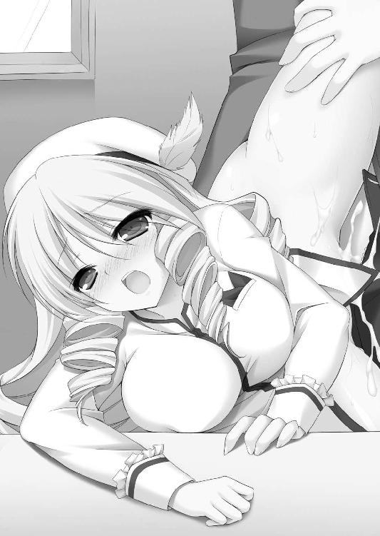

| ハーレムレボリューション (二次元ドリーム文庫) | |
| 竹内けん | |
| (2014) | |

※本作品の全部あるいは一部を無断で複製・転載・配信・送信したり、ホームページ上に転載することを禁止します。本作品の内容を無断で改変、改ざん等行うことも禁止します。また、有償・無償にかかわらず本作品を第三者に譲渡することはできません。
第一章 花の咲く国
「キャー！ 誰か！ 誰か助けてください！」
冬枯れしたのどかな山道のことであった。
強大で歴史あるラルフィント王国の西にある小国オレアンダー王国。
元々はラルフィント王国の一領主でそこそこの名門貴族だったらしいが、ラルフィント王国が長い内乱をしている間のドサクサに紛れて独立したらしい。
そういう経緯で創設された国であるから、誇れるような歴史というものはほとんどないようだ。
たいした特産品がある、という話も聞かなかった。
それ以前の問題として、こういう国があるということをそもそも知らなかったベルンハルトは、西方半島の今はなきセルベリア出身である。
故郷を出てからドモス王国の都フェンリルや、副都カーリング、二重王国の双都であるエレオノーラとプロヴァンスを見学し、さらに世界最大の都と言われるラルフィント王国の都ゴットリープに行ってみようかと旅をしている途中であった。
特に急ぐ旅ではない。それどころか、たいして目的もない旅であった。
ゴットリープに行ったからといって、何かしなくてはならない用事があるわけではなく、やることがないから、歴史ある文化遺産とやらを見てみようか、などという好奇心で目指していたにすぎない。そんな大きな街なら仕事にありつけるかもしれない、という非常に曖昧な目的もあった。
旅の効率を求めるならば、川を下ってエトルリア王国から船に乗り、翡翠海を渡って運河を通り、ゴットリープに入るのが普通なのだろうが、近くのヴァスラ王国で家臣のジェレミイなる男がクーデターを起こして王位を簒奪した、という情報を聞いたので、様子を見てみようと思ったのだ。
梟雄ジェレミイの鮮やかな手並みに感心してからオレアンダー王国に入ったわけだが、無論、こんな名も知らぬ田舎の辺境国は単なる通過点にすぎず、なんら興味はなかった。
もうすぐ王都ゴールドマリーに着く。
（大層な名前だが、たいした規模の街ではないだろうな。とはいえ、都は都だ。そこで昼食にしよう。二度と来ない土地だろうから、郷土料理でも食べてみるか？ 問題は先立つものだが......）
懐具合などを心配しながら歩いていたところに、可愛らしい少女の悲鳴が聞こえてきた。
「いやー、来ないで、来ないでください！ やめてくださいっ！！！」
必死な叫びに視線を向けると、冬の枯れた山の斜面を、一人の少女と六人ばかりの男たちが追いかけっこをしている。
先を駆ける少女は、かなり年若い。小柄な体躯を、黄色地にオレンジのリボンの付いたワンピースで包み、その上から作業用と思われるエプロンを着けている。
どこか子犬を思わせる愛らしい顔立ちに、ピンク色のふわふわな毛糸のような頭髪。その上には、日除け用と思しき鍔広の帽子をかぶっている。
花飾りやリボンなどで飾ったさまはお洒落であるが、生地そのものは決して上等とは言えない。お金をかけずにお洒落を楽しんでいる、ごく普通の装いだ。
愛くるしい美少女であることを否定する者はいないだろうが、どこにでもいる街娘といえば、事足りるような平々凡々とした容姿だ。
それを追いかけ回す男どもも、ある意味、平凡であった。
無精髭を伸ばし、筋骨たくましく、手には野太刀を持っている。どこから見ても、典型的なゴロツキ、アウトローというやつである。
昼間に街に入ろうとしたら、門番に問答無用で追い払われてしまいそうないでたちだ。
男と女。しかも人数差があるのにすぐに捕まえないのは、必死に逃げる少女の様子を楽しんでいるのだろう。
「逃げるなよ、アマ。可愛がってやるって言っているんだよ。げへへ」
いいかげん飽きたのか、下卑た笑いを上げた男の猿臂が、少女の肩を掴もうとして、掴み損ね、ワンピースの肩口が裂ける。
「いやぁぁぁぁぁぁ！！！」
寸前で逃れるとはなかなかすばしっこい娘である。燕のように軽やかだ、と称えていいだろう。
戦乱の時代だ。各地の人心は荒廃し、弱肉強食がまかり通っている。
か弱い少女が一人で人気のない山道を歩んでいたら、この手の輩に目をつけられても仕方がないであろう。
たぶん、世界中でいくらでもある光景だ。
「しかし、ここまで典型的な場面に出くわしたのは初めてだな」
ベルンハルトは思わずあたりを窺った。
あまりにも定番すぎて、戯画化されたかのような光景に、一瞬、何かもっと奥の深い罠があるかと考えてしまったのは、いささか邪推がすぎるのだろうか。
（まぁ、今の俺なんかを罠に嵌めるやつがいるとは思えん）
旅人を騙して金を奪う、というのはよくある手口なのだろうが、今の自分を狙う山賊はよほどの馬鹿だ。
ベルンハルトの装いは、どこにでもいる旅の傭兵だ。腰に剣こそ佩いているが、お世辞にも金を持っているようには見えないだろう。実際にない。
そんな者を襲うなど、ハイリスクローリターンというものだ。
「まぁ、これは臨時収入と考えるべきか。神様とやらも、たまにはお年玉をくれるんだな」
疫病神に魅入られていそうな、己が人生にいささかシニカルな気分になっていたベルンハルトは、久しぶりに舞い降りた幸運に喜んで駆けだした。
「おい待て！」
勇んで駆けつけたベルンハルトは、少女と男たちの間に割り込み立ちはだかった。
「あん？ 誰だてめぇ！」
見知らぬ男を前に鼻白んだ野郎どもは、次の瞬間には凄んでくる。
予想通りの反応だ。そして、ベルンハルトの背後に回り込んだ少女もまた予想通りの反応であった。
「助けてください。この人たちがいきなり乱暴をしようとしたんです」
あまりにも定番すぎて、ベルンハルトはいささか気恥ずかしくなった。
（しかしまぁ、世の中にはお約束というものがあるわな）
自分の柄とはかけ離れた役回りに、尻がむずがゆくなりながらも、せいぜい芝居がかった仕草で口を開いた。
「か弱いお嬢さんを大勢の男が追いかけ回すなど、みっともないぞ。そのような暴挙、騎士として見過ごすことはできない。成敗してくれる」
「騎士だと!? 食い詰め傭兵風情がなに正義感を振り回してやがる」
男たちは六人。ベルンハルトは一人だ。
数の有利から余裕があるらしい。
全員、力はありそうだ。おそらく元々は農民であり、食うに困ってまっとうな社会から逃げ出してしまった連中なのだろう。
（所詮は田舎の山賊か。武芸の心得がなければ、相手の力量を計ることなんてできないわなぁ）
馬鹿笑いしている相手をベルンハルトは内心で哀れんだ。
この六人の無法者たちと自分。どちらが罪深いか？
すべてを見通す神様とやらがいたら、間違いなく自分の方が罪深いと判決を下すであろう。それだけの悪事を働いてきた、という自覚はある。
「死にたくなければすっこんでな。それとも何か、俺たちの仲間になりたいのか、それなら最後まで待っていな」
そんな寝言は聞き流しつつ、ベルンハルトは背後の少女に声をかける。
「行きなさい」
「でも」
見知らぬ人を残して、自分一人逃げることに罪悪感を覚えたのだろう。
心配顔でためらう少女に、ベルンハルトはきっぱりと宣言した。
「キミがいたら、足手まといだ」
守りながら闘うというのは、非常に難しい。
別にこの少女を助けなくてはならない理由はないわけで、人質にでも取られたら見捨てるつもりだが、証人として生きていてもらった方が戦後処理はやりやすい。
「ありがとうございます。きっと街の警邏の皆さんにお報せします」
ベルンハルトの言い分を認めた少女は、真面目な顔で頷くと脱兎の如く街に向かって駆けだした。
正直、彼女に興味はなかった。興味があるのは、残った野郎六人の方である。
一般庶民の少女から謝礼など期待できないが、見るからに小者とはいえ悪党を退治すれば、この地方の役人から、多少の報酬をもらえるはずである。
「おい、なに勝手なことをしてやがるんだ」
太い腕でベルンハルトを払いのけようとした。その手首が、ポロリと地面に落ちる。
「えっ!?」
右手の先を失った男は茫然としている。血がシャワーのように噴き出したのを見て驚いたのだろう。傷口を腹に抱えて泣き叫ぶ。
「いてぇぇぇぇぇ！！！」
その光景を前にしても、相手と自分の力量の差を察することができなかった残り五人の男たちは、健気にも仲間をやられた義侠心を刺激されたようだ。
「てめぇ、なんてことしやがる！」
「もう許さねぇぞ！」
「たたんじまえ！」
口々に叫んだ山賊の皆さんは、見るからに安物の野太刀を翳して、力任せに振り下ろしてきた。
ベルンハルトはごく冷静に、機械的と言っていい太刀さばきで、彼らの戦闘力を奪っていく。
※
「お前か、一人で六人もの山賊どもを捕らえてきたというのは」
大立ち回りを演じた丘からすぐ近くにある街ゴールドマリー。そこの騎士の詰め所でのことである。
山賊をぶちのめすことはそれほど難しくなかったのだが、その後、役所をいろいろとたらい回しにされた。
（あまり、効率的な行政とは言い難いな。所詮は田舎だ）
と軽蔑しているが、人間生きていく上では金は必要だ。
せっかく、幾ばくかの金をもらえるチャンスである。内心では呆れながらも根気よく付き合った。
そして、最終的に連れてこられたのがこの部屋である。
部屋の主らしき女騎士は、立ち上がって出迎えた。
「ああ、街の治安に少しでも貢献できたのは嬉しい。ついては労働に見合った謝礼をもらいたい。別に理不尽な要求ではないだろう」
金銭を要求する男に、女騎士は不快げに顔を歪める。
女にしては背が高い、しなやかな身体にぴったりとした白い軍服を纏い、長い脚線には赤いタイトなズボン。その上に白いロングブーツを穿いている。
白い羽根付き帽子の下から零れたオレンジ色の豊かな巻き毛。それに包まれた小さな顔。その奥で輝く緑色の鋭い眼光と、引き締まった唇が印象的だ。
年の頃は二十歳前後か。典型的な女騎士といった風貌だ。
（こいつは貴族出身だな。それもたぶん、この国では超名門だろう）
オレアンダー王国の内部事情などまったく知らないベルンハルトだが、一目見てそう思った。
自らの才能と血筋に絶対の自信を持った者独特の、気位の高さと驕慢さが滲み出ている。まさに刺々しい美人といったやつだ。
おっぱいからしてわがままそうで、軍服が内側から破れないか心配になるほどだった。
（すげぇスタイル抜群の美人だが、こういう女とだけは間違っても結婚したくねぇな）
そんなことを考えているベルンハルトに向かって、女騎士は豊かなオレンジ色の巻き毛をさっと払うと、大きな執務用の机の端に軽く腰をかけ、寛ぐように右足の踵もかけた。
「たいした腕だ」
本人は自覚していないだろうが、タイトなズボンを穿いた状態で、机に腰をかけたものだから、布が後ろに引っ張られたのだろう。
マンスジがくっきりと浮き出てしまっていた。
そんな状態で、右手でレイピアの柄を弄びつつ、上体を反り返らせ、上から見下ろすような傲慢な眼差しで口を開く。
「お前、我が国に仕官してみないか？」
軍服を内側から突き破りそうなワガママボディに魅せられていたベルンハルトは、いささか驚いて、改めて女騎士の高慢な顔を見る。
男の舐めるような視線を感じていたのか、視線が合うと不快そうに眉をひそめられた。
「推挙していただけるので？」
「ああ、貴様は浪人なのだろ。このたびの武功をもってすれば重く用いられよう」
確かに悪くない武功を立てたつもりだ。仕官の手土産としては適当だろう。
彼女が仕官を促してくる気持ちもわかる。
自由気ままな生活を満喫しているベルンハルトとしても、いずれは仕官をするつもりだった。
しかし、それはドモス王国か、二重王国、あるいはラルフィント王国のレナス家といった大国に対してである。
こんな田舎の小国の、しかも陪臣として仕えるつもりはいささかもなかった。
ベルンハルトは自分の腕にそれなりの自信がある。おそらくこの田舎の王国の騎士たちの誰よりも、修羅場もくぐっているはずだ。
さらに自惚れさせてもらえば、兵を率いて闘っても大抵のやつに負けない、自負心を持っていた。
それなのに、こんなド辺境の王国に仕官して、一生を安穏と暮らすなど、才能の無駄遣いというものだろう。
（この気の強そうな女の、ワガママボディを好きにできる、という特典が付くなら考えてもいいんだがな）
そんな下卑た考えを想い描かないでもないが、期待薄というものだろう。
結論として、ベルンハルトはせいぜい殊勝な態度で応じる。
「それがしいまだ修行中の身ですから、即答いたしかねます。まずは明日の大金よりも、今日の小銭が欲しい生活なんでね」
その場で断ったのでは角が立つ。返答を延期している間に街を出てしまえばいい。どうせ二度と来る機会などなさそうな国だ。
「ふん」
ベルンハルトの意図を察したのだろう。オレンジ色の巻き毛の女騎士は、蔑みの眼差しとともに、小さな袋を投げて寄こした。
シャッ！
軽く受け取ったベルンハルトは、中身を確認する。
「いや、ありがたい。人間生きていくために、先立つものは必要だからな。それじゃ」
蔑まれようと馬鹿にされようと、金さえもらえれば文句はない。満足したベルンハルトはとっとと役所を出た。
「まぁ、こんなもんだろ」
予想より少なかったが、過剰な期待をしていたわけでもない。
とりあえずゴットリープに入るまでは、食費の心配をしなくて済みそうな程度には懐は暖まった。
（久しぶりに美味い飯が食えるな。せっかくだ、この国の特産品と地酒でも楽しむか）
思わぬ臨時収入に満足したベルンハルトが役所から出てきたところを、花飾りの付いた帽子をかぶった少女が待ち構えていた。
「騎士様、あ、ありがとうございます。おかげで助かりました」
「......」
ベルンハルトは一瞬戸惑った。
野盗をとっ捕まえて、謝礼をせしめることのみを考えていたベルンハルトは、追いかけられていた少女になど興味がなかったので、すっかり失念していたのだ。
それがわざわざこうやって待っていて、謝礼を言われるなど照れくさい。しかし、悪い気はしないのは確かだ。
「いや、今の俺は騎士ではない。主を失った流れ者だ。騎士はやめてくれ」
むすっとしたベルンハルトは訂正したが、花飾り帽子の少女は改めなかった。
「わたしにとって騎士様は騎士様です」
「......。まぁ、いいか......」
姫君の危機を颯爽と救う騎士。おとぎ話にありがちな展開だ。
夢見がちな少女が、自分を姫、助けてくれた相手を騎士と見立ててロマンチックな喜びを味わっているのだろう。
それで誰かに迷惑がかかるわけでもなし、少しぐらい遊びに付き合ってやってもいい。懐が暖かくなったため寛大な気分になっているベルンハルトは、紳士的な男を演じてやった。
「とにかく、大事になる前でよかった。お嬢さんに怪我はなかったかい？」
「はい。おかげ様で。あ、わたしスズっていいます」
スズと名乗った少女は、ベルンハルトを見上げてにっこりと笑った。
化粧っ気はないが、大きな目が印象的な子犬のように可愛らしい顔立ちだ。磨けば光る少女といったところだろうか。
その無垢な笑顔を眩しく感じながら、ベルンハルトもまた笑顔を返してやる。
「俺はベルンハルトだ。スズ、キミが警邏の人たちに連絡してくれたんだね。おかげで助かった」
「いえ、警邏の皆さんが駆けつけたときにはもう、騎士様が全員倒してしまわれていた、と伺っています。皆さん噂していましたよ、鬼神みたいに強い方だって」
「たまたまだよ」
農家崩れの素人相手の立ち回りなど、圧倒して当然だ。しかし、傷付きのたうつ野郎どもを六人も、一人で街まで運ぶ手間暇は大変なものである。警邏の人々が駆けつけてくれて、本当に助かった。
ふと素朴な疑問が湧く。
「そういえば、キミはあんなところで何をしていたんだ？」
街から近いとはいえ、年若い少女が一人で山にいる、というのは不自然なことである。
花飾り帽子の少女はにっこりと笑って答えた。
「わたし、花売りなんです」
「花売り？」
予想外の答えに戸惑うベルンハルトに、スズは恥ずかしそうに頷く。
「はい。毎日、山に行ってお花を取ってきて街で売っているんです」
「ああ、なるほど......」
そのために山に行っていたのか。その商売が儲かるのかどうか、ベルンハルトにはわからない。しかし商売である以上、やめることはできないだろう。
「これからは気を付けて行くんだぞ。では、達者で暮らせよ」
そうそう話すこともないベルンハルトは、適当なところで話を打ち切って、立ち去ることにした。
その背をスズは、決死の声で呼び止めた。
「あ、お待ちください！ 騎士様！」
「ん？」
驚いて振り返ると、顔を真っ赤にした少女は両手でエプロンの裾をもじもじと弄りながら口を開く。
「あ、あの、騎士様、今夜の宿はお決まりですか？」
「いや、まだ着いたばかりだからな。これから探すところだ」
ベルンハルトの何気ない答えに、顔をますます赤くしたスズは、汗を大量に垂れ流しながら口を開く。
「よ、よよよよよろしかったら、今夜、わたしのお家に来ませんか？」
異様に緊張しているらしいスズの申し出に、ベルンハルトはいささか戸惑った。
あまりにも出来すぎている、と思ったのだ。
彼女は美人局で、鼻の下を伸ばしてのこのこついていったら、怖い人たちが出てきて、身ぐるみ剥がされるのではなかろうか。
そんな疑惑を持たれているなどと露とも感じてなさそうな少女は、顔を真っ赤にして、目を泳がせながら、必死に言い募る。
「あ、あの......お礼したくて。たいしたおもてなしはできませんけど、その、わたし、料理は得意で。家は小さいけど、予備のベッドもありますから......」
熱に浮かされたかのように言うスズに、ベルンハルトは少し圧倒された。
「いや......。そ、それじゃ、せっかくのお誘いだし、お世話になるかな」
「やった♪」
歓声を上げたスズは、両手を上げて飛び跳ねる。
（彼女が美人局だったら、俺には女を見る目がないってことだな）
たとえ何かの罠だとしても、自分の腕なら切り抜けることはできるだろう。腹をくくって彼女のお宅にお邪魔することにする。
「それじゃ、こっちです」
屯所の前から、スズの案内でベルンハルトはゴールドマリーの街を歩く。
街並みを見回したベルンハルトは、いささか違和感を覚えた。
（なんか街全体が暗いな。何よりも活気がない）
故郷を出てから今まで見てきた中で、一番荒んだ街のようだ。
とはいっても、首都である。人並みはそれなりに多い。しかし、行き交う人々はみな俯き加減で早足なのだ。
先ほどまでキャピキャピしていたスズもまた打って変わって、口数少なく、頬を強張らせながら歩いている。
（なんなんだ？ この異様な緊張感は......）
大きな建物はある。街並みも綺麗だ。しかし、街全体が妙に静かなのである。
この荒涼とした雰囲気は、単に田舎だから、というだけでは済まされないだろう。
（この空虚な感じ、どこかで見たことがあるな）
不意に強烈な既視感に襲われた。次の瞬間、鼻腔になんともいえない饐えた血臭が漂ってくる。
驚いて視線を向けると、大勢の人々が手足を繋がれて晒されていた。
「っ！」
ベルンハルトは驚いたが、意図的にスズは見ないようにしているようだ。黙々と足を進めている。
立て札を見ると、どうやら税金を滞納した人々が見せしめにされているようだ。
いくら心優しい少女といえども、一介の花売りにどうこうできるものではない。見て見ぬふりをするのが精いっぱいなのだろう。
しかし、ベルンハルトは悟った。いや、悟らされてしまったのだ。
（この街の雰囲気はヒューリアスにそっくりだ）
ベルンハルトの故郷セルベリア。その都ヒューリアス。
あの虚飾と汚臭にまみれた死の都と同じ空気が漂っている。
純朴なスズの人となりのせいで騙されるところだった。
（この街はヤバイ）
ヒューリアスと同じ雰囲気に支配されている街並みということは当然、権力者階級も同じ状態に違いない。
権力者は腐敗と怠惰に沈んで、領民のことなど顧みず、気ままに暮らし、反発する領民は恐怖で押さえているのだ。
ベルンハルトは全身の血が引いていくのを感じた。
思い出したくない過去が思い出される。
かつてのベルンハルトは、西方半島の覇者セルベリア王国に仕える騎士だった。そして、国民を弾圧する側にいたのである。
伯父のファルビンという者が将軍職を拝命していたこともあって、ベルンハルトもエリート街道を驀進していた、と言っていいだろう。
ゆくゆくはファルビンを継いで将軍職に就くことを夢見て励んでいたものだ。
しかし、セルベリア王国の国王ジューザスは酷い苛政を敷いた。そのため一揆が続発。最終的には旧フルセン王国の末裔エルフィンに謀叛されて滅亡する。
そんな中にあって、ファルビン将軍は最後まで暗君ジューザスを支えた。
当然のように伯父に従ったベルンハルトは、最後の砦ラグナイトに立てこもった五百人の一人である。
包囲する敵は五万人。絶対に助かる可能性のない籠城戦であったが、奇跡的に主従は国外追放で済んだ。
それはすべてファルビンの功績と言っていいだろう。
その後、王妃の実家であるバロムリスト王国に身を寄せたジューザスは、ファルビンのせいでこのような惨めなことになったとして、粛清してしまった。
まったく、暗君に忠義を尽くすだけ無駄ということである。
伯父が殺された以上、もはやジューザスに忠義を尽くす理由を失ったベルンハルトは、一度は最期まで付き合う覚悟をした主君と袂を分かった。
だからといって、いまさら故郷に戻って西方半島の新たな覇者フルセン国王エルフィンに頭を下げる気にはなれなかったので、流浪の旅に出たのだ。
（他にやりようはなかったのか？）
旅の間、何度も自問したベルンハルトの、後悔と悔恨の苦い記憶だ。
それが再び、同じ匂いのする国に辿り着くとは、なかなかに運命的である。
（首都でこのありさまということは、地方に行ったらもっと酷いな）
旅費がないこともあって、ほとんど村には立ち寄らずここまで来てしまったが、記憶を手繰ると確かに景気のいい光景は見なかった。
（この国はいろいろと末期だぞ）
体験したからこそ確信を持った。この国はもうすぐ内乱に突入する。
（自然発生的に起こらなかったとしても、噂に聞く、二重王国の国王セリューンが介入してこないはずがない。きっとヴァスラのような傀儡政権が作られる......）
そこまで考えたとき、自分の体内を、痺れるような戦慄と歓喜が駆け抜けるのを感じた。
（面白い！）
この国はもうすぐ混沌とした地獄の釜の中身のようになる。上手く立ち回れば、自分のような吹けば飛ぶようなゴミの如き男でも、這い上がれるチャンスが転がっているかもしれない。
故郷で失敗したことを、何度やり直したいと思ったことだろう。それができるかもしれないのだ。
不意に、先を歩いていたスズが声をかけてきた。
「着きました。ここです」
場所は下町だろう。
高級住宅街とは言いかねるが、庶民としては悪くない立地だ。
古い木造二階建ての小さな家屋であったが、小さな庭には色とりどりの花が咲いている。
いささか暗い思念に囚われていたベルンハルトは、いきなり天国に迷い込んでしまったかのような錯覚に戸惑う。
「これは？」
ベルンハルトの驚き顔に、スズは自慢げに応じる。
「山に取りに行くだけではなくて、庭でも栽培しているんです」
「さすがはプロだな。綺麗な庭だ」
「ありがとうございます。さぁ、どうぞ、お入りください♪」
自慢の花園を通ったスズは、ベルンハルトを母屋に招き入れた。
質素で小さくはあるが、掃除の行き届いた室内だ。
「キミはここに一人で住んでいるのか？」
玄関先に立ったベルンハルトの質問に、スズは明るく答えた。
「はい。昔はお婆ちゃんと暮らしていました。お婆ちゃんも花売りで、お婆ちゃんから、家業を継いだんです」
「なるほど」
「だから、ちゃんとベッドも二つありますよ♪」
慎ましい生活ではあるようだが、清潔感があって、居心地のいい部屋だ。
昔は二人暮らしだったというだけあって、二人分の椅子や食器が揃っているらしい。
スズに勧められた小さなテーブルと椅子。そこに腰を下ろすと、スズはさっそくティーカップを差し出す。
「どうぞ、ハーブティーです」
「これ、キミが栽培したの？」
「はい。自慢の一品です♪」
スズの笑顔で勧められたら、ドブ水でも甘露水に感じてしまいそうだ。
香りを嗅ぐと、甘い微香が立ち上がった。それから軽く口をつけるさまを、スズは緊張した様子で見守る。
感想を求められているということを察したベルンハルトは、一息に飲み干して答えた。
「うん、美味しい」
「よかった♪」
両手を合わせたスズは満面の笑みを浮かべる。
見ているだけで、心温まる笑顔だ。
「おかわりはいくらでもありますからね。寛いでください」
そう言ってスズは、何やら家事をするために奥に消える。
二杯目のハーブティーを手の内で包みながらベルンハルトは、縁側から庭を見た。初冬だというのに色とりどりの花が咲いていて、目を楽しませる。
（花を愛でるなんて風流な一時が、俺の人生にあるなんてな）
殺伐とした生き方を送ってきた者にとっては、心の洗濯でもさせてもらっている気分だ。
この国の現状を忘れてしまいそうになる。
「騎士様～、夕ご飯までにはまだ時間がありますから、先にお風呂に入ってくださ～い♪」
「ああ、馳走になる」
旅の垢を落とすのに、風呂に入れるのは嬉しい。
促されるがままに湯船に入ると、冬の凍てついた風に冷やされた身体が心地よく解ける。
「この国に俺は一切のしがらみを持ってない。好き勝手できる。それが俺の強みだ。いっちょ、国を盗んでみるか」
そんな決意を口にしたところに、扉の外からスズの声が聞こえてきた。
「騎士様、湯加減はいかがですか？」
「っ！ ああ、ちょうどいいぞ。極楽だ」
いささか慌てたベルンハルトが大きな声で答えると、スズはさらに提案してきた。
「あの～、お背中をお流しさせてください」
「え!? いや、でも、ああ、ありがとう」
ベルンハルトは戸惑ったが、拒否するのも角が立つだろう。洗い場にあった木椅子に座ると、素直に背中を差し出す。
腕まくりして狭い湯殿に入ってきたスズは、嬉々として石鹸を泡立てるとゴシゴシと野郎の背中を洗ってくれた。
「うわぁ♪ 騎士様って、背中広いんですね」
スズの指が愛しげに、ベルンハルトの背中を撫で回す。
年若い少女に肌を撫で回されていれば、健康な成人男性として肉体に変化が出るのはごく自然なことだろう。
（あ、やばい。そういえば、最近、全然やってなかったからな）
絶望的な戦局の中、女を楽しむ余裕などなかったし、放浪の旅に出てからは、女と懇ろになる金もなかった。
さすがにここまでくると、自分がスズに好意を持たれていることには気付く。
しかし、その恋心はいわば、麻疹のようなものだろう。今日の劇的な出会いに感動して、我を忘れているのだ。
（まぁ、軽く受け流すのが大人の対応ってものだよな）
いまだ二十代にしては、悪い意味で濃密な人生を歩んでしまっているベルンハルトは、下手に隠そうとすると、かえって不自然になるだろうと考えて、堂々としていた。
「うふふ、わたし、男の人の肌に触れたのって初めてなんです」
「そうなのか？ お父さんとかはどうしたんだ？」
「お父さんは兵隊に取られて、早くに亡くなっちゃったんです。若い男の人って、みんな労役に取られちゃうから♪」
重いことをサラリと言う娘である。もっとも、彼女にとってそれが当たり前なのだろう。
楽しげに背中を洗っていたスズの手が、不意に止まった。
「はぁ、男の人ってそうなっているんですね」
いつの間にか、スズは男の肩の上から覗き込んでいる。その視線の先には、当然いきり立つ、男性器がある。
「あ、これは、その......」
「お、男の人ですもんね......。う、噂には聞いていましたけど、は、初めて見ました」
顔を真っ赤にしたスズは、俯く。
うなじまで赤くなって恥じ入るそぶりが初々しい。まさに手折られるのを待っている花だ。
その誘惑に抗しきれなかったベルンハルトは、思わず手を伸ばそうとしたが、空振りした。
我に返ったスズがいきなり立ち上がったのだ。
「あ、いけない！ わたし、料理の途中でした！」
「あ、ああ......」
「失礼します！」
元気よく声を張り上げたスズは、慌てて洗い場から出ていった。
「ふぅ～」
安堵したような残念なような気分で、ベルンハルトは溜息をつく。
※
「どうぞ」
夕食は、木の丸皿に、山菜のたっぷりと入ったスープだった。
花を摘むついでに、山菜を取っているのだろう。
「うん、美味い」
「言ったでしょ。わたし、料理は得意なんです♪」
スズは得意げに胸を張る。
「へぇ～、凄いな。キミはいいお嫁さんになるね」
「もう、騎士様ったらお上手ですね」
盛大に照れてみせるスズだが、まんざらでもなさそうだ。
実際、たいした生活能力だと思う。
収入は少ないかもしれないが、これなら国が滅びようと何が起きようと立派に生きていけそうだ。
二人は小さなテーブルで向かいあわせになって食べた。
時々、ベルンハルトを見て、視線を合わせると顔を赤くするスズがたまらなく可愛い。
緊張している少女の小さな心臓の音まで聞こえてきそうだ。
（こういうのを騎士症候群っていうのかな？ 俺が抱きたいと言ったら、喜んで股開きそうな雰囲気だ）
あまりにも処女臭い乙女の心尽くしのもてなしを楽しんだあと、二人は会話を楽しむことにした。
ロマンティックな方向に流れることを期待していそうなスズの願望は意図的に無視してベルンハルトは質問した。
「この国のことを教えて欲しい」
「別に構いませんけど、わたし、あまり難しいことはわかりませんよ」
困った顔をするスズに、ベルンハルトは首を横に振った。
「いや、そう難しいことを聞きたいわけじゃないんだ。キミの感じたままを教えて欲しい」
「はい。それでよろしいのでしたら」
戸惑いながらもスズは真面目に頷く。
「今、この国の王様はいい人かい？」
ベルンハルトのストレートすぎる質問に、スズはいささか怯んだようだ。
しかし、命の恩人のたっての質問だ、と感じたのだろう。眉根を寄せて考える。
「う～ん、悪い人だと思います」
ベルンハルトは軽く目を剥いた。
人というものは、程度の差こそあれ例外なく郷土愛というものを持つ生き物だ。
自国のロイヤルファミリーをなんだかんだ言って、敬愛する。
まして、スズのような素朴な国民に嫌われるようでは、よっぽどだ。
「どうしてだい？」
「税金が高すぎるって、みんな言っています。裁判とかも、賄賂次第なのは悪いことだって。王様とか貴族の人たちばっかりすっごい贅沢をしているって。あ、でも、リシュリュー様の領地は住みやすいって聞きます」
「リシュリュー？」
知らぬ固有名詞が出てきた。
スズは慌てて説明する。
「はい。侯爵様です。戦争もお上手で、領民のことも本当に慈しんでくださっている大変な名君なんだそうです。あの方が国王陛下だったらよかったのに、とみんな噂しています」
「ほぉ、そういう人がいるのか」
いささか面倒だな。暗君と佞臣ばかりなら、やりやすいのだが、下手に評判のいい家臣がいると、その下に新たな国が創設されることになりかねない。
故郷におけるエルフィンのような存在がいたのでは、自分が出る幕がなくなってしまう。
「それから、リシュリュー様のご息女ロータス様がすっごい綺麗なんです。あの方をモノにしたいって、国王様と王弟様が争っているっていう噂がありますね」
「なるほど......ん？ 国王と王弟は仲が悪いのか？」
「はい。お二人のお母様が違うから、ギクシャクしていると昔から言われています」
なかなかどうして隙の多い国である。
自分がこの国に仕官するとなると、当然、あのオレンジ色の巻き毛をした偉そうな女を頼ることになる。
（あの女はどのような立ち位置なのだろうか？）
ベルンハルトが特徴を伝えると、スズはすぐに思い至ったようだ。
「ああ、それはたぶん、プラザ様ですね」
「これだけでわかるのか？」
「はい。有名な方ですから......」
確かに目立つ女ではあった。
「どういう女だ。父親の名前は？」
「プラザさんは、国一番の女騎士と言われています。レイピアの達人なんです。お父上はエレメンツ卿といって、国で一、二を争う大貴族様なんです。そして、王弟様の母上の兄君です」
なるほど、ということはあの女は王弟派か。
（ちょうどいいかもな。国王の側近になったとしても、そこから簒奪するのは容易なことではない。いくら腐った国家だといっても支える忠臣どもはいるだろう。それらを抑え込んで覆そうというのは容易なことではない。しかし、王弟を担いで、忠臣どもを一掃させる。そうして国家としての基盤が緩んだところを、簒奪する方が現実的だろう）
青写真を描くのは簡単だ。しかし、実行に移すとなると、人並み外れた努力、そして、あばずれな女神から一途な愛を獲得するほどの強運が必要になってくることは疑いない。
「あの方に興味がおありなのですか？ 騎士様はやっぱりあのような女性が好みなんですか？」
「いや、そういう興味ではないよ」
確かにいい女だった。あのワガママボディは男の性欲を掻き立てるし、傲慢な女を屈服させるのは、男の甲斐性というものだろう。
しかし、今のベルンハルトにとっては、性的な興味よりも、政治利用できるかどうかの興味の方が優先される。
そんなベルンハルトの内心をどう勘違いしたのか、スズはいささか面白くなさそうに告げ口する。
「いくら騎士様でもあの方を口説き落とすのは無理だと思います。あの方は......、その......、同性愛者だって噂です」
「同性愛？ つまりレズビアンってことか」
驚くベルンハルトに、スズは頷く。
「はい。かなり有名な話ですから」
「ふむ」
気位の高そうな女である。男に組み敷かれるのが性に合わない、ということだろうか。
（まぁ、あの女の性癖などどうでもいいがな）
要するにあの女を足がかりとして、王弟陛下とやらに取り入るのが、第一段階ということになる。
もちろん、王弟派の筆頭であろう彼女の父親エレメンツ卿とやらと仲良くしたいものだ。
※
「騎士様、寝てしまわれましたか？」
深夜、ベルンハルトが与えられた寝台に横たわっていると、そっと扉が開き、狭い室内にスズが忍び込んできた。
「いや、起きている......。何か用か？」
いささか警戒しながら応じるベルンハルトに、黒いシルエット状のスズはおずおずと口を開く。
「えっと、その......、わたしからの最後のおもてなしです。わたしの、しょ、処女をもらってください」
「ぶっ！」
さすがに驚いたベルンハルトは噴いた。
そして、布団から身を起こした。薄暗い室内に、少女が立っていた。一糸纏わぬ裸で。
湯上がりらしい。火照った肌をした身体を恥ずかしそうに縮めたスズは、内股になった股間を左手で隠し、右手で胸元を隠している。
「ちょ、ちょっと、待った。お、落ち着こう！ キ、キミの好意は嬉しいけど、キミと俺は、その、今日知り合ったばかりだぞ！」
裏返った声で説得を試みるベルンハルトに、顔を真っ赤にしたスズは訴える。
「はい。わかっています。でも、わたし、馬鹿だから、もうこの気持ち抑えられない。お風呂場で、騎士様のお大事を拝見してからというもの、頭の中はあれでいっぱいで、それで、あの、わたしの身体も壊れちゃったみたいで......その、止まんないですぅ......恥ずかしい」
右手で押さえている股間から、ほっそりとした太腿の内側にかけて、月明かりにキラキラと輝いている。
どうやら、愛液垂れ流し状態のようだ。
（うわ）
さすがに対処に困るベルンハルトに、裸の少女は小さな寝台の上に乗って抱きついてきた。
「別に結婚してください、とか、責任取ってください、というつもりはありません。わたしが一方的に騎士様のことが好きで好きで仕方なくなっちゃって。わたし、騎士様に、その......抱いて欲しいって思ったんです」
目と鼻の先に、顔を真っ赤にして、目に涙を湛えた美少女の顔がある。
か細い身体がガクガク震えており、満身の勇気を振り絞っての告白であることは伝わった。
（可愛いなぁ。彼女の望み通り、処女を頂くかな......いや待て）
流されそうになったベルンハルトだが、満腔の自制心を絞り出し、スズの両肩を抱いて引き剥がした。
「ふぅ～、好意だけ受け取っておくよ」
「な、なんでですか？ わたしのおっぱいが小さいからですか？ やせっぽっちで鶏がらみたいだから、やる気になれないんですか？」
涙ながらに訴えるスズを、ベルンハルトは必死に宥める。
「いや、そういう意味ではなくて、キミは十分すぎるほどに魅力的だよ。ただ俺にはキミが眩しすぎるんだ」
「それってどういう意味ですか？」
「俺はキミが思っているほどに、立派な男ではない。キミみたいな素敵な娘の初めてになっていい男じゃないんだよ」
西方半島でやってきたご乱行、そして、今この国で始めようとする悪行を思うと、とてもではないが、彼女の初めての男になる自信がなかった。
ベルンハルトの説得に、スズは物欲しそうな顔で訴える。
「でもぉ......今日抱いていただかないと、騎士様いなくなっちゃう......」
「いや、だから、いなくなるような男にやられたいというのが問題だろ」
「好きになった人に一度でもいいから抱かれたい、処女をもらってほしいって考えるのは変ですか？ 人はみんなすぐいなくなってしまいます。だから、やりたいことはすぐにやらないとダメなんです」
悲しそうなスズの一言に、ザクッと胸を刺された。
いくら天真爛漫を装っていても、暴政の敷かれた都で暮らしているのである。
おそらく、隣近所や親戚たちが無慈悲に殺されていく体験を幾度もしているに違いない。
ベルンハルトは故郷で、こういう心の傷を抱えた少女をたくさん作ったのだろうことを、見せつけられた気分になった。
（守ってやりたい）
と強烈に思った。
今まで自分が不幸にしてきた人たちに対する罪滅ぼしというには傲慢だが、せめて彼女は自分の手で守ってやりたいと思った。
激情に駆られるままにベルンハルトは、スズの細い身体をぐいっと抱き締める。
「いなくならない。俺はいなくならないから」
「えっ!?」
「この国に仕官してみようと思っている。だから、俺はいなくならない。それなら焦ることはないだろう」
今まで迷っていたのだが、腹が決まってしまった。
故郷での失敗をやり直す。この国を盗んでやる。
そんなベルンハルトの決意など思いもよらぬスズは、満面の笑みを浮かべて抱きついてきた。
「嬉しい♪」
軽く唇が触れあう。
驚くベルンハルトに、スズは悪戯っぽく笑う。
「えへへ、今夜はわたしの処女を奪ってくれないそうですから、代わりにファーストキスです」
「キミってやつは、見かけによらず大胆だな」
さすがに呆れるベルンハルトに、スズは悪びれずに応じる。
「お婆ちゃんから、好きな男ができたら、ガンガンいけって教えられていましたから」
「はは......」
ベルンハルトは乾いた笑みを浮かべることしかできない。
「それじゃ、せめて今夜はこのまま一緒に寝ていいですか？」
「ちょ、ちょっとまて」
相手は素っ裸。やられる気満々の清純可憐な乙女。しかも、処女。
こんなのと同衾して、理性を保つのは男として容易なことではない。
「今夜は大人になることは諦めます。でも、二人一緒にいた方が温かいですよ。ね♪」
「ぐっ」
可愛らしい笑顔が反則である。
「勝手にしろ」
「はい。勝手にします」
こうして、二人は狭いベッドで抱きあって眠ることになった。
「うふふ、わたし、お父さんもお兄ちゃんもいなかったから、男の人とあまり縁がなくて。こうやって一緒に寝られるだけでも嬉しい♪ ......あら？」
スズは下腹部に当たる異物の存在に気付いたようだ。
両手を下ろして掴む。
「騎士様、これって、おちんちんですよね。女の人とやるときに大きくなるって聞いたことがあります」
「......入れないからな」
「騎士様のいけず......温かい♪」
頬を膨らませたスズは、逸物を愛しげに弄り回していたかと思ったら、自らの太腿と太腿の間に挟んでしまった。
「こら」
毛も生え揃っていない恥丘である。肉裂に肉棒がめり込みそうだ。
「入れていませんよ。でも、せめて擦りつけてオナニーさせてください。そうじゃないと、わたし欲求不満で眠れません。わたし騎士様が思っているような清らかな乙女じゃありませんから。好きな男性に、騎士様にいっぱいエッチなことをしてもらいたい、と夢見ている、淫らな女の子なんです♪」
ベルンハルトの肩を抱き、スズは腰を前後に動かす。その股の間に挟まれた逸物には、温かい愛液が大量に浴びせられる。
「う、うん、凄い。気持ちいい、自分の指で触れているときよりも何倍も気持ちいいです。ああ、表面を擦っただけでこんなに気持ちいいだなんて、あぁ、騎士様のおちんちん入れて欲しい。わたしのオマ○コの中に入れて、大人にしてもらいたい」
熱い湿度の高い吐息とともに紡がれる言葉。スズが精いっぱいの挑発をしていることがわかる。
小さな双乳がベルンハルトの胸板に当たり、コリコリに硬く尖っていた。
そんな乙女のなりふり構わぬ誘惑に、ベルンハルトはじっと耐える。
「はぁ、気持ちいい、ああ、一段と大きく太くなったような、ああ、わたし、もう、もう、もう......イっちゃう！」
ピクピクピクピク......。
ベルンハルトの胸にしがみつきつつ、スズは細い身体を震わせた。
「くっ」
無邪気な乙女の身体を使った挑発に、酸いも甘いも知っている汚れた大人の男は屈服した。
細い太腿と太腿の間で、太い逸物が暴発する。
ドクン、ドクン、ドクン。
「あ、熱い......」
驚いたように目を見開いたスズは、次いで下半身に手を下ろした。
「小さくなっちゃいましたね。それから、これって騎士様のザーメンですよね」
汚れた指先を掲げたスズは、ベルンハルトの顔を見ながら悪戯っぽく笑い、小さな口元に含んだ。
「美味しい♪」
愛らしい顔をしていても、牝である。男を誘惑する方法は本能的に知っているということだろうか。
思わず理性のタガが外れそうになったベルンハルトは、乙女の背中を抱き寄せる。
「もう、寝なさい」
「は～い♪」
とりあえず乙女の好奇心を満足させたらしいスズは、男の胸板に顔を埋めて寝息を立て始めた。
その寝顔を見ながら、ベルンハルトは思案する。
（この街はもうすぐ灰になるから逃げなさい、とアドバイスしたいが、彼女がこの街から逃げ出すことはないだろう）
せいぜい自分が守ってやるしかない。
ベルンハルトは故郷を喪失した男である。
一生分の忠誠心は、故郷で使い果たした。これからは好きなように生きようと決意して旅に出た。
（あの陰気な小僧にできたことが、俺にできないということもないだろう）
しかし、エルフィンはなんだかんだ言って多くの家臣を従えた大貴族だった。ベルンハルトはたった一人、流れ着いた他所者だ。
徒手空拳。これで国を奪えるなどと考えるのはお笑い草である。
しかし、どうしても諦めきれないのだ。
セルベリア王国でのベルンハルトには多くのしがらみがあった。それはあまりにもがんじがらめで、この道を行けば破滅だとわかっていながら歩むしかなかった。
しかし、ここにはなんのしがらみもない。
「俺は一度、死んだ身だ。どうせ死んだ命なら、惜しくはない。一か八か、でかい博打を打ってもみたい」
そんな思いを持ちながら旅をしてきた。そして、念願のどでかい賭博場に辿り着いたのだ。
恐れるものは何もない。ありとあらゆる手段を使って国取りをしてやろう。
（そして、この幸薄い娘が、好きな男のもとに嫁げるような国に作り替えてみせる）
この無防備に飛び込んできた少女に対して保護欲を刺激されたベルンハルトは、生きる目標を見つけた。
第二章 悪党の生きる道
「まさか仕官を了承するとはどのような心境の変化だ？」
早朝、スズの屋敷を出たベルンハルトが、前日と同じ駐屯所に出向き、仕官したい旨を告げると、プラザは意外な表情を浮かべた。
昨日の手応え的に逃げられると思っていたのだろう。
実際、あのときはその気はなかったんだから、彼女の判断は正しい。
ベルンハルトは皮肉な気分で応じる。
「城下町の様子などを見て、いささか思うところがあった。俺の力が役に立つと思ってな」
「ふむ、悪党たちを片っ端から退治してみせる、というつもりか？」
ベルンハルトの腕前は、既にプラザも承知しているところだ。
苛政を敷いているのだから、昨日のような悪党には事欠かない。それを片っ端から退治してみせると意気込んだ、血に飢えた狂戦士と疑ったようだ。
「いや、より大きなことがしたいんでな」
「ふん......」
不遜なやつめ、と言いたげに目を眇めるプラザの前に、ベルンハルトは身分を証明する書類や感状の数々を提出した。
「以前の俺は、西方半島のセルベリア王国にあって、ファルビン将軍の麾下、百人隊長を務めた。討ち取った首級は十二。ストライカーの称号もある。これが証拠のメダルだ」
書類を抱えたプラザは目を瞠った。
首級というのは、雑兵ではなく、身分のしっかりとした騎士階級の者を討ち取った数をいう。一つ取っただけで、十分に恩賞が出る手柄首だ。
人を殺すというのは大変なことであり、生涯に五人殺すとエースと呼ばれ、勇者として尊敬されるものだ。
そのエースを超えた存在。万夫不当の勇者を、俗にストライカーという。
当然、これは特別な呼称であり、いわば国一番の勇者という意味である。
そんなのが他国に仕官することなどまずない。
（まぁ、俺の場合、国が滅亡するところだったからな。半ばヤケクソで大盤振る舞いされただけなんだけどな）
とはいえ、他国でストライカーなどと言われた男が、この国に仕官を求めてきたのは初めてのことだろう。
軽い気持ちで仕官を促した相手が、予想を超えた大物だったと悟ったようで、プラザはおたおたする。
「照合しよう。しばし待て」
「ああ、存分に精査してくれ」
かくして、ベルンハルトはオレアンダー王国の重鎮エレメンツの息女プラザの紹介で、オレアンダー王国に仕官することとなった。
※
「これから国王ヴォーダン陛下と面会してもらう。貴様も上級騎士だったのだ。礼儀作法は心得ているな」
プラザの言葉に、ベルンハルトはせいぜい気取った一礼をした。
「我が女神の御意のままに......」
ついでにスズから購入してきた花を一輪差し出す。
「ふん、キザな男は信用ならん。行くぞ」
花を差し出されたプラザは驚いたようだが、すぐに怒ったように弾くと、歩きだす。
ベルンハルトは仕方ないので、プラザの家人であるミューズに手渡した。
場所は王宮の中庭である。
といっても、所詮は田舎の王国であるから、そうたいした広さもない。
（セルベリアよりも明らかに格下の国だな）
祖国セルベリアは、なんだかんだ言っても、サイアリーズ、フルセンといった国々を従えた覇国であった。
領土の広さも、人口も圧倒的に上である。
（これが俺の身の丈に合った国だろうな）
まだ手に入れてないどころか、一歩すら踏み出していないのに、手に入れた気分になっているベルンハルトの耳に突如、凄まじい騒音が聞こえてきた。
「コケーッ、コッコッコッ！！！」
鳥類の鳴き声だ。それも一羽や二羽ではない。百羽を超える鳴き声だ。王宮とは思えぬ騒音に立ち尽くすベルンハルトに、両手で耳を塞いだプラザは耳打ちする。
「国王陛下は闘鶏がご趣味なのだ」
「っ!? なるほど......」
のちに聞いたところによると、城内に鶏小屋があり、飼育されている数は千羽を超えるという。
国王の趣味に、部下が追従するのは世の常だ。オレアンダー王国の貴族や騎士たちの間では、多くの鶏が飼育されており、その数は万を超えるという。
その餌代だけでも、馬鹿にならないことになっているらしい。
（国民を飢えさせて、鳥を肥やすか。見事なまでの暗君っぷりだ。これなら追い落としても心が痛まないな）
内心で冷笑をしながら、いい天気の中庭に行くと、身なりのいい貴族の男や貴婦人が集まって歓声を上げている。
輪の中心にいるのは、二羽の鶏だ。それが人間たちに煽られて、命がけの死闘をしている。
観衆の中でも、一際、いい位置に陣取り、最前列で夢中になってはやし立てている人物の前に、プラザは進み出た。
「国王陛下。本日より新たに出仕することになりました者でございます。以後、お見知りおきください」
年の頃は二十歳を少し超えたところだ。
身なりはいいのだが、なんとも粗野に感じるのは、闘鶏などに熱中して、唾を飛ばしながら歓声を上げているからだろうか。
即位して十年になるという。
母親の身分は低く、本来なら国王に相応しくなかったのだが、先王が亡くなったとき、母親の身分の高い弟が幼すぎるということで、彼が即位することになったらしい。
プラザの声に、国王だという人物は、チラリと視線を動かした。
「ベルンハルトと申します」
礼儀正しく、頭を垂れるベルンハルトを一瞥しただけで、興味を失ったのだろう。
「うむ、よきにはからえ」
その一言で、若き君主は再び闘鶏に集中してしまった。
プラザは溜息をつき、ベルンハルトは軽く肩を竦める。
最低限とはいえ、一応のお目見えを終えたベルンハルトは、御前を辞することにした。
そのとき、ふと紳士淑女の群れの中で、闘鶏に興味がなさそうな夫人を見かけた。
「あちらは？」
「王妃様だ」
「なるほど」
聞くところによると、王妃はヴァスラ王家の出身だという。ヴァスラ王国は、例のジェレミイに簒奪されてしまった。
そのため、国王ヴォーダンの権力基盤もぐらついているのだが、本人は気付いていないようである。
「次はメビウス様と面会してもらう」
「とりあえず、俺は王弟殿下のために働くわけだな」
「そうだ。我が一門は、全力でメビウス様を支えている」
よく晴れた庭園から一転、薄暗い廊下に入ったプラザは、王弟メビウスのもとに案内してくれた。
プラザの父親の妹が、メビウスの母親なのだという。つまり、プラザとメビウスは従姉弟ということになる。
国内屈指の大貴族であるエレメンツ侯爵が後ろ盾ということで、メビウスは国王よりも人望があるようだ。
闘鶏にうつつを抜かす国王よりは有能だと評判であり、愚兄賢弟と言われているらしい。
国王ヴォーダンとの面会がほんの形式的なものになったのは、プラザの推挙である以上、政敵である弟の派閥に入ることは確実であり、関心がなかった、という側面もあるだろう。
「プラザです。失礼いたします」
取次の許可をもらったプラザに続いて、室内に入る。
胸がむかつくような甘い匂いがした。甘い香水の匂いで、頭がクラクラしそうである。
「......」
プラザは顔をしかめて、首を横に振るう。
「やぁ、プラザ。その男かい、一人で六人もの盗賊を退治したという豪傑殿は？」
そう言って声をかけてきたのは、胸元をはだけたドレスシャツというラフな装いをした二十歳前の若者であった。
眉目そのものは悪くない。細身であり、色白。まず美男子といっていい。
しかし、運動不足なのだろう。全体的にひ弱な感じがする。
目が細く唇が赤い。男の癖に化粧をしているのだろう。
気怠げな雰囲気があって、耽美というのだろうか。どこか病的な感じがする青年だ。
しかも、彼が座っているのは椅子ではなかった。
裸の女が四つん這いになっているのだ。
その背に悠然と腰を下ろした美青年の左右には、さらに半裸の美女が侍っている。
「はい。この者はベルンハルトと申しまして、かつて西方半島を支配していたセルベリア王国の忠臣として聞こえたファルビン将軍の甥に当たるものです」
「そういえば聞いたことがあるね」
「ありがたき幸せです」
たいして興味もなさそうなメビウスは、軽く頷く。
「西方半島か......ずいぶんと遠くから流れてきたんだねぇ。ところで、どうだい、綺麗だろ」
その青年が自慢げに指し示したのは、室内に所狭しと並べられた人形だった。
一応は、生きているようである。見目麗しい乙女たちを、肌もあらわな服装にて侍らせている。
この王弟殿の趣味は詩を吟じること、絵を描くこと。そして、何よりも美女を愛することらしい。
いずれの女たちも淫具を付けられているらしく、魅惑的なボディをくねらせ、だらしない表情で涎を垂らしている。
（見た目が綺麗なだけのお人形だな）
権力さえ持てば、いくらだって手に入れることのできるだろう女たちだ。
ベルンハルトはなんら興味を刺激されなかった。この手の女たちは、故郷で見慣れていたのだ。
ベルンハルトの心情など知らず、メビウスは得意げにのたまう。
「どうだい？ 素晴らしいだろ。これこそ芸術だ。詩情が浮かぶというものさ」
狂気を演じながらもメビウスの目つきから、自分が試されていることを察した。
このような趣向を持った自分に、どういう反応をするか、をこの魔少年は見ているのだ。
「素晴らしい芸術ですな。しかし、こうするとよりよくなると思いますよ」
進み出たベルンハルトは、這いつくばる女の陰核を抓んだ。
「あ、あぁぁぁぁ～～～！！！」
膣孔と肛門に疑似男根を入れられており、左右の乳首にも振動する淫具を付けられていた彼女は、さらに淫核を抓み上げられて、不様に失禁してしまった。
「女性は恥辱にまみれて絶頂する姿が一番美しいですね」
「お、おい」
主君の寵愛する女性を、その見ている前で辱めたのだ。プラザは驚いたようだが、メビウスの反応は違った。
瞳を輝かせて狂笑する。
「くっくっくっ、あはは、面白い。なかなか面白い男を拾ってきたねプラザ。ぼくの前で、そのような反応をした人は初めてだ」
「......恐れ入ります」
ベルンハルトは慇懃に頭を下げた。
自分の女への無礼を笑って許したどころか、ベルンハルトを気に入ったらしい主君の反応の意味がわからないのだろう。プラザは目を白黒させている。
しかし、ベルンハルトは確信があった。
要するにこの青年はかつての主ジューザスと同種の変態なのだ。そう考えれば、扱いもわかろうというものだ。
「プラザのやつが、気に入って連れてくると言ったから、さぞや堅物だと思ったのにね。キミとは気が合いそうだ。ところでキミはなぜ、この国に仕官しようと思ったんだい。見ての通りの田舎王国だよ。他国の者が魅力を感じる場所とは思えないんだけど？」
「この国でならば、それがしの才を多少なりとも活かせると考えました」
ベルンハルトの言いように、メビウスは興味を示したようだ。
「ふ～ん、何をやるつもりなの？」
「それがしはいささか諸国を回りました。そして、この国を見るにつけ、税の徴収方法が粗雑にすぎると考えました。それがしに任せていただければ、多少なりとも、税収を増やせると思った次第です」
「ほぉ、ここのところ、財務官僚たちは金がない金がないの一点張りだ。それが増えるというのは嬉しいね。いいよ、好きなようにやってごらん」
登用早々に王弟の言質を得てベルンハルトは内心で会心の笑みを浮かべる。
「ありがとうございます。きっと殿下の満足の得られる結果を出してご覧に入れましょう」
そんな中女たちは主君の歓心を買おうと、その肌に手を這わせる。
「こらこら、節操のない牝豚たちだな。少しは自重しなよ」
「よく調教されておりますね」
「ああ、これがぼくの芸術だ」
メビウスは悦に入っているが、女というのはしたたかな生き物だ。
いずれ美貌が衰えれば、飽きて捨てられる。その前に、いろいろねだって資産を増やしているに違いない。
（この坊っちゃんが、それに気付いているかどうかは別問題だがな）
内心で嘲笑しているベルンハルトに、能天気な坊っちゃんは質問した。
「ところで、キミはいろいろな国を巡ってきたんだろ。一番いい女がいるのはどこの国だい？」
「それはもちろん、このオレアンダー王国。プラザ様に勝る美女はおりますまい」
本人を横にしながら、ベルンハルトは悪びれずに応じる。
侮辱された、と感じたのだろう。プラザは頬を赤くして、柳眉を逆立てる。
「おいおい、彼女は確かに見た目は悪くないが、心は獣だぞ」
「それがしにとっては恩人でございますれば、女神より尊いと申せましょう」
「くっくっくっ、キミは本当に面白いな。しかし、残念だな。彼女は同性愛者なんだ。だから、昔からぼくにも全然靡かない」
主君と新参の家臣の視線を浴びて、プラザは憤然と答える。
「はい。以前から申している通り、わたしは男に興味はありません」
「それは残念です」
「でも、せいぜい頑張るといいよ。ぼくとしても、従姉が同性愛者の変態では恥ずかしいと思っていたんだ」
変態に変態呼ばわりされるのは心外なのだろう。プラザは顔を紅潮させる。
それを見て笑うメビウスは本格的に忙しくなってきたようで、邪魔しては悪いとベルンハルトとプラザは辞した。
こうして、国王との会見に比べると、いささか濃密な会見を終えた。結論として、
（兄弟揃ってろくなやつらじゃないな）
という確信を持てただけ、有意義な会談であった。
ここからは国取りを目指して、ガムシャラに働くだけである。
プラザと別れて、気合いを入れて街を歩いていると、元気に花を売っているスズと行きあった。
「あ、騎士様、無事、仕官が決まったんですね。おめでとうございます♪」
無邪気に挨拶されていささか面食らったが、すぐに気持ちを立て直す。
「ああ、そうだな。仕官記念に花を頂こうか。適当なのを一本くれ」
「まぁ、ありがとうございま～す♪ あ、この赤い薔薇なんてどうですか？ ダンディな騎士様にとっても似合いますよ」
スズから買った花を一輪胸に刺し、新たな職場に向かった。
※
「税金を取るのに、恐怖を与えるだけでは非効率的である。税金が払えなくなった者が、拷問されるのが怖く、逃散されたのではますます国庫の収入が減る。それでは悪循環だ」
オレアンダー王国の王弟メビウスに仕えたベルンハルトがまずやったのは、王弟の領地の徴収方法の改革だった。
こういうものは、最初が肝心だ。人間関係の様子を見て、などとやっていたのでは、自分の組織内の地位が固まってしまう。その前に強引に場を仕切ってしまうのが一番だ。
オレアンダー王国のありようは一言で言えば末期状態である。
高い年貢を課して、一揆が発生。それを武力で鎮圧し、見せしめを作る。これはタコの足を食うようなもので、税収は減るばかりだ。
このことはみなわかっているのにやめられない。
そんな制度疲労を起こしている官僚制度を、なんらしがらみがないことをいいことにベルンハルトは一刀両断にした。
「枯れかけた井戸から水を汲むよりも、溢れんばかりの井戸の水を汲む方が簡単だ。まずは井戸の水を増やす」
税金を払えない者はもちろん、山賊だろうが、盗賊だろうが、とっ捕まえて無理やり働かせる。
単に強制労働させるだけではなく、「切り開いた土地をくれてやる」と約束したものだから、みな真面目に働いた。
その他、税制や軍政の改革など、精力的に断行する。
（伯父貴に仕込まれたことがこんなところで役に立つとはな）
ベルンハルトは武芸一辺倒で生きたかったのだが、伯父ファルビンは財務官僚出身ということもあって、いろいろとその方面の手伝いもさせられたものだ。
そのとき覚えた知識が役に立った。
このオレアンダー王国の制度は何もかも遅れていて、専門外のベルンハルトでも辣腕を振るう余地はいくらでもあった。
もちろん、いくら理屈が正しくても、新参者にでかい顔をされるのは、古参の者から見ると面白くない。
一人、あからさまに反発した者がいた。
なかなか人望のある者だったので、ベルンハルトも手を焼いたが、幸いなことに街で亡くなった。辻斬りにあったらしい。治安の悪いオレアンダー王国ではよくあることである。下手人も不明のまま処理された。
彼がベルンハルトの政敵であったことは公然のことであり、誰もが犯人を邪推したが、強いて深入りするものはいなかったのだ。
仕事はできるが、手段を選ばぬ男。そんな畏怖の念を持って、ベルンハルトは見られる存在になる。
元々好かれようなどと思ってはいない。
王弟メビウスは政治になど関心はない人だ。自分の遊ぶ金が増えるのなら文句はない。順調に増やしてみせるベルンハルトの好きにさせてくれた。
「ふむ、貴様がプラザのやつが連れてきた男か？」
そう声をかけてきたのは、初老の男であった。
白髪白髭で、背筋がピンと伸びている。矍鑠とした印象を受ける老紳士だ。
「これは......エレメンツ侯爵閣下」
プラザの父親である。
いくらベルンハルトが様々な改革を提案しても、普通なら通るはずがない。プラザの後押しがあったから、成功したといえる。
傲慢なやり手として振る舞うベルンハルトでも、さすがにこの人物には辞を低くしなくてはならない。
「お主のおかげで、王弟殿下の名声は高まっておる。これからも王弟殿下のために頼むぞ」
「はい。不肖の身ですが、精いっぱい働かせていただきます」
ベルンハルトは丁寧に頭を下げた。
名門貴族としてこの歳まで苦労知らずに育ったお人よしの老人のようである。
甥っ子である王弟メビウスを己が息子のように感じているようで、ベルンハルトとしては亡き伯父ファルビンと暗君ジューザスとの関係を連想せざるを得ない。
（メビウスに富と名声を与えるのに異論はない。いずれ兄王を追い落としてもらうために、せいぜい地力をつけてもらわないとな）
とにかく、王弟の後見たるエレメンツ卿にも認められたベルンハルトは、来たるべき内乱に向けて着々と準備をした。
※
「貴様を拾ったのは正解だったな。王弟陛下の税収は明らかに増えた」
カツカツと石畳の廊下に足音を立てて、華やかな女騎士プラザは肩で風を切って回廊を闊歩する。
その後ろを腹心のベルンハルトは大人しく付き従う。
「恐れ入ります」
ベルンハルトの視線は、自然とタイトな赤いズボンに包まれたぷりっぷりの尻に吸われる。
（こいつってほんとワガママボディだよな）
自分の肉体が、いかに男の劣情を煽るかなど、プラザは歯牙にもかけていないのだろう。
国を代表する権臣の一人娘にして、この肉体美である。
普通なら求婚する男が列をなすだろうに、彼女の同性愛嗜好はあまりにも有名であった。
実際、腹心として側にいることになったベルンハルトは、プラザの恋人である女性を幾人か把握している。
（この女を口説き落とすことができれば、一気に権力基盤が強化されるんだがな。こればかりは仕方ないか）
断腸の思いで首を横に振るうベルンハルトに向かって、プラザは吐き捨てる。
「しかし、せっかく増えた税収も、あっという間に寵姫たちの衣装や宝飾品に消えていくかと思うと馬鹿らしくなるな」
オレアンダー王国では、社交界や園遊会というものがひっきりなしに行われる。
（こういうところも、セルベリア王国と同じだな）
ここの支配者階級の連中は、意図的に国民を弾圧しているのではない。無能で怠惰。自分の欲望に正直であるがゆえに、結果として、国民にツケを押しつけているだけなのだ。
「王侯貴族には王侯貴族としての、格式というものがあるのでしょう」
「それはそうだが......んっ？」
不意にプラザの顔付きが険しくなる。
渡り廊下の向かいから、しゃなりしゃなりと歩んできた貴婦人がいた。
黒い長髪は、冬の夜空を切り取ったかのように艶やかに輝き、白き肌は処女雪のよう。瞳は黒い真珠のようだ。
紫色の花飾りの付いた、深い緑のドレスを纏っている。
しっとりとしたたおやかな気品と、匂い立つような色香があった。
華やかな女騎士であるプラザとは対照的な、見つめられると瞳に吸い込まれそうな淑女である。
「これはこれは、今日の園遊会には、珍しい方がお見えのご様子」
「あら、誰かと思ったら、エレメンツ卿のご息女様。そのような姿をしているからわかりませんでしたわ」
その黒髪の女とプラザは同世代であろう。
しかし、仲はすこぶる悪そうだ。さながら犬猿の仲といった雰囲気である。
いささか戸惑うベルンハルトに顔を向けた黒髪の女は、ドレスの裾を持ってにっこりと上品に笑う。
「初めまして。わたくしはリシュリュー家のロータスと申します」
リシュリュー。それはエレメンツと並ぶ、オレアンダー王国の一、二を争う権臣だ。
国王派とも王弟派とも一定の距離を持つ第三勢力。国民の信頼という意味では、王族たちを凌いでいる、ということは市井の花売りであるスズの言動から確かだ。
単にこの国の民草を助けようと思うのならば、リシュリューに協力するのが一番の近道であろう。
しかし、国を盗もうと考えているベルンハルトから見ると、一番警戒すべき相手なのかもしれない。
「これはご丁寧にありがとうございます。それがしは新参のベルンハルトと申します」
ベルンハルトはいささかドギマギしながら、丁寧に一揖する。
「やはりあなたが噂の黒き刃殿でしたか。怖そうな殿方なのに、胸にはいつも生花を付けている洒落者。あなた様の噂はわたくしの領国にまで聞こえておりますわよ。確かに見るからに切れ者然とした方ですわね」
「それがしは当たり前のことを当たり前にしているにすぎません」
恐縮してみせるベルンハルトを、値踏みするように見たロータスは、すべてを見抜いているわよ、と言いたげな意味深な笑みを浮かべる。
（なるほど、これが話題の傾国の美貌か）
ベルンハルトは納得した。
噂によると、国王と王弟は二人とも彼女に懸想しており、それが兄弟不仲の原因とも言われている。
もしどちらかが権力を使って、ロータスを無理やり自らの後宮に入れたら、それを原因として内乱が始まるのではないか、というのが多くの人々の予想であった。
「では、ごきげんよう」
丁寧に頭を下げて、ロータスはしゃなりしゃなりと廊下を歩いていった。
さすがは賢女と名高い人物である。単に美しいだけではなく、底知れぬ雰囲気にいささか圧倒されていたベルンハルトに、プラザの不機嫌な呟きが聞こえてきた。
「女狐が......」
ベルンハルトは慎重に質問する。
「ロータス姫とは何か因縁がおありなんですか？」
「因縁というほどではない。昔から、あの女とは馬が合わない、それだけだ」
のちに調べたところによると、ロータスとプラザは同じ歳。二人とも国を代表する有力貴族の娘である。幼少のみぎりからいろいろと比べられてきたらしい。
「お前もまた、あの女の色香に惑わされた口か？」
「いえいえ、小官にとっての女神は、プラザ様お一人です」
「ふん、口が上手いな」
プラザが女騎士として男勝りに振る舞うのに対して、ロータスは麗しい貴婦人として振る舞う。
王宮での人気も二分しているようだ。
もっとも、男性の人気はロータス、女性の人気はプラザという分け方のようである。
（ロータスが羨ましいと思うなら、自分も軍服なんてやめて、ドレスを着ればいいのに）
と思わないでもないのだが、こればかりはどうにもならないだろう。
（ん？）
不意に違和感を覚えた。
プラザは同性愛者だと公言している。そして、周りの者たちもそう扱っていた。
しかしそれなら、女らしい魅力に満ちるロータスと不仲になる道理はないではないか。
（彼女を男装の麗人、同性愛者という先入観で捉えるのは危険か。もっと別の意味があるのではないか？）
すなわち、従弟であるメビウスへの反発。
もし、彼女が普通に異性愛者であったら、当然、ごく身近なメビウスを取り巻く女の一人にされていたはずである。
プライドの高い女であるから、その他大勢の女の一人にされることは耐えられない。そこから逃げるために同性愛者になった。いや、演じたのではないだろうか。
そんな気がしてならない。
（こいつの同性愛嗜好が、本物か偽物か、いっちょ試してみるか？）
ベルンハルトの権力の源泉は、何よりもプラザの信頼だ。それをぶち壊してしまうことになりかねない危険な賭けではあるが、勝算を感じた以上、勝ったときの旨みを考えれば、やってみる価値は大きいだろう。
※
「こちらにどうぞ、隠れていてください。まもなくお嬢様がお越しになります」
侍女の手引きで、プラザの屋敷に潜入することに成功したベルンハルトは、その寝室のクローゼットの中に身を隠した。
さすがは国内屈指の大貴族のご令嬢。いい部屋に住んでいる。
手引きしてくれたのはプラザの侍女ミューズ。お気に入りの恋人の一人でもある。
プラザの下で働いていた以上、当然、ベルンハルトとも接触があった。
彼女の実家が税金を滞納しそうで、四苦八苦しているということを知って、いささか便宜を図ってやったあと、スズから買った花束をプレゼントすると、あっさり股を開いてきた。
所詮は女である。女より男が好きなのは当然であろう。
逆らい難い主の趣味に付き合っていただけで、本人はあくまでも普通に異性愛者だったのだ。
そして、主人であり、恋人であったプラザを、売った。
待つほどもなく、風呂上がりなのだろうバスローブ姿のプラザは部屋に入ってくる。
「メビウス様の浪費癖にも困ったものだわ」
高級感溢れる黒革のソファーに座ったプラザは、侍女ミューズに用意させた火酒のロックを、ゴクゴクと喉を鳴らして一気に呷った。
酒でも飲んでいないと、やっていられないと言いたげな飲み方である。
彼女は彼女なりに日々、様々なストレスと闘っているのだろう。
口角から溢れた液体が、胸元に消える。
「はぁ～、美味しい♪」
満足げな吐息を漏らしたプラザを、ミューズは慰める。
「でも、ベルンハルト様のおかげで、メビウス様の評判はよくなっていますよ」
「そうね。確かにあいつは拾い物だった。父上も評価しておられる。でも、あいつ、時々何を考えているのかわからなくて、ぞっとすることがあるわ」
「ミステリアスな殿方は素敵だと思いますよ」
ミューズのフォローに、プラザは嗜虐的に笑った。
「あら、わたしの前で男を褒めるだなんて、わたしを嫉妬させたいのかしら？ お仕置きが必要ね」
「あん、お姉様」
ソファーに座ったままプラザは、ミューズに唇を重ねた。
女同士で接吻をしながら、プラザは器用にミューズの衣装を奪い、素っ裸にすると、乳房や股間を愛撫する。
「ふぅ～」
女同士のねちっこい接吻を終えて、プラザは立ち上がる。
「さて、ベッドに行きましょうか？ わたしの可愛い仔猫よ」
「はい。お姉様」
愛しい恋人を自らの寝台に押し倒したプラザは、バスローブを脱ぐ。
ぶるんっ。
弾力に富んだ双乳と、きゅっと引き締まった腹部、そして、ぷりんと張りのある小さなお尻があらわとなる。
（軍服の上からでもわかっていたことだが、すげぇわがままボディだな）
凶器のように前方に突き出した乳房である。極めて凹凸に恵まれた女体美を目の当たりにして思わず生唾を飲むベルンハルトの前で、二人の美女は、寝台にもつれ込んだ。
女同士、接吻し、乳房を揉みあい、押しつけあい、シックスナインになってみたりと、くんずほぐれつ楽しんでいる。
退廃した女貴族の性生活といったものを、絵に描いたかのような光景だ。
（まぁ、俺も人のことは笑えないか）
祖国にいた頃の自分のご乱行を思い出すと、いささか冷汗が出る。
どうにかしたくともどうにもならない。破滅が見えているのに、そこに向かっていくしかないとき、人は刹那的な快楽に逃避するしかなかったのだ。
あるいは、プラザも同じ心境なのかもしれない。
（この女、誰かに似ていると思ったら、昔の俺に似ているんだ）
現体制は間違っていると頭ではわかっているのに、いろいろなしがらみがあって従わざるを得ない。
（だから、余計にムカつく）
不意に焼きつくような苛立ちを感じた。
辱めてやりたい、俺の女にしたい、という気持ちを抑えかねる。
必死に我慢しているところに、ミューズが質問した。
「プラザ様は、ベルンハルト様のことをいかがお考えなのですか？」
「どこまでもわたしを嫉妬させたいみたいね。わたしが男に興味を持つはずがないでしょ。あんな男は使い捨てよ」
そう嘯いたプラザは、ミューズの左足を抱え上げて自らの左足を入れた。
そして、互いの陰部を擦りあわせる。いわゆる貝合わせになった。
グチュグチュグチュグチュ......。
粘着質な卑猥な水音が室内に響き渡る。
（お～お、男役を存分に楽しんでいるね）
女を責めているプラザは、嗜虐的な笑みを浮かべて、実に楽しげに腰を振るっている。
一人娘である彼女は、男として生まれたかったという願望があるようだ。
「ああ、お姉様、ああ、お姉様」
「ミューズ、ああ、いいわ、あなたのオマ○コ、今日は一段と吸いつく、ああ、もうたまらないわ♪ イク、イク、イク」
「はい。わたしも、もう、イクイクイクイっちゃいますぅ───！！！」
美しい女二人、華やかに絶頂を楽しんだあと、プラザは上体を倒して、ミューズに覆いかぶさった。
「ああ、ミューズ、わたしの可愛い仔猫」
余韻を楽しむように接吻をし、代わりに二つの濡れた肉貝が、ヌラーッと透明な液体の糸を引きながら離れる。
ベルンハルトの視界には、オレンジ色の豊かな陰毛に彩られたヒクヒクと痙攣する蜜壺が丸晒しになっていた。
「はぁ、はぁ、はぁ......ミューズ、とてもよかったわ。わたしは男なんていらない」
「しかし、それではエレメンツ家が絶えてしまいます」
「大丈夫よ。お父様が外に作った子供が二人もいるわ。男なんてみんなそう。わたしは男なんて信じられない。生涯、この身を男に捧げるつもりはないわ。ひぁっ!?」
ブツン!
愛しい恋人に熱い想いの丈をぶつけていたプラザは、突如、調子っぱずれの悲鳴を上げて、硬直した。
何が起こったかわからなかったのであろう。
「はがががががが......！！！」
四つん這いのプラザは、両目を見開き、大きく開いた口から涎を垂れ流しながら、しばし背筋を強張らせて、震えていた。
「さすがは国を代表する女騎士様だ。よく締まるオマ○コをしている」
ベルンハルトは引き締まった小尻を両手で掴みながら、いろいろ世話になっている女上司の膣孔の感触を楽しんだ。
信頼する部下の声を聞いたプラザは、戸惑いながらも必死に背後を窺う。
「き、貴様、そこで、何をしている!?」
「見ての通り、いや、感じている通りかな。プラザ様のオマ○コの中に、俺のおちんちんを入れさせてもらっている。平たく言うとセックスの最中だな」
レズ遊びの余韻に浸っている二人の背後から、そっと近づいたベルンハルトは、有無を言わさずに逸物をぶち込んだのだ。
「ふ、ふざけるなぁぁぁぁぁぁぁっっっっっ！！！」
予想通りプラザは激怒した。ただちに男の魔の手から逃れようとしたが、背後から男に貫かれた状態である。
しかも、彼女は今破瓜の最中だ。身体に上手く力を入れられないのだろう。不様にのたうっただけであった。
「うお、さすがはプラザ様、キュッキュッと小気味よく締めてきますね」
膣孔の締めつけも、極論すれば筋肉である。筋肉の発達している女ほどよく締まるものだ。
まして、初めての異物の侵入に驚いた膣孔は狂ったように締めてきている。
「ぐっ、き、貴様、わたしにこのようなことをして、ただで済むと思っているのかっ!?」
「多少強引な手段に出たことは謝ります。しかし、これは純粋にプラザ殿をお慕い申し上げるがゆえの行動とご理解ください」
ぬけぬけとほざくベルンハルトに、涙目になっているプラザは奥歯を噛み締める。
どうやら、強気な言動とは裏腹に、破瓜の痛みは相当酷いらしい。
まったく無警戒のところをぶち抜かれたのだ。余計な力が入っていなかった分、それほど痛めてはいないつもりなのだが、破瓜は破瓜である。
「ベルンハルト様、これでよろしかったでしょうか」
「ああ、ありがとう。助かった」
プラザの下からミューズは抜け出して、寝台から降りる。
「な、なに!? どういうこと？」
「女ってのは、女同士の友情よりも、男を優先させるものだぜ。いい勉強になったな」
目を白黒させるプラザに、ミューズは申し訳なさそうに応じる。
「わたしのプラザ様への忠義はいささかも揺るぎません。しかし、そのプラザ様に可愛がっていただいているときよりも、ベルンハルト様にやられているときの方が何倍も気持ちよくて、プラザ様にもぜひ体験してもらいたかったのです」
信頼していた恋人に裏切られたプラザは愕然としながらも、訴える。
「とにかく抜け。その汚らわしいものを抜け、今ならまだ許してやる」
「そうつれないことをおっしゃいますな。俺はあなたに惚れているんです」
「何が惚れているだ。お前が好いた惚れたで動くような玉か。どうせ、わたしを利用しようと考えているんだろ」
なかなか鋭い。世間知らずなお嬢様に見えて、その程度のことは洞察していた、ということか。
しかし、ここは徹底的に愛で押しきるべきだろう。
「俺がこの国に仕官したのは、あなたに一目惚れしたからなんですよ」
「そ、そんな虚言に騙されるか。わたしは男にモテたことはない。言い寄ってくるのはいつも女ばかりだ」
「それはあなたが、男を寄せつけなかっただけだろ。それに名門の令嬢ということで遠慮していたんだろうな。俺は他所者ですからね、そんなしがらみもなく強引に口説かせていただきました」
ベルンハルトの戯言に、プラザは反発する。
「口説く前に、入れているではないか」
「プラザ様の場合、まずことに及んでしまってからでないと、逃げられると思ったんですよ」
見た目は華やかな女騎士であるプラザだが、その内実は世間知らずの小娘であることを、ベルンハルトは既に見抜いていた。
まして、男に対しては免疫がない。そのため、強引すぎるアプローチに混乱しているようだ。
「それに王弟陛下からも、プラザ閣下を、変態から立ち直らせて欲しいとのお言葉を頂いていますからね」
「あれは、単なる戯言であろう。あん」
なおも強気な言動を続けようとするプラザの淫核を抓んでやる。
「お前さ、クリトリスでかすぎ。仔猫たちに舐めさせすぎてすっかり肥大化しちまっているじゃないか」
「そんなことは......」
プラザは動揺の声を出す。自分でも心配だったのだろうか。
「くっ、わたしが取り立ててやったというのに、よくもこんな辱めを、ゆ、許さない......はぁ！」
「許さなければどうするんだ。まさか、浪人上がりの俺にレイプされた、と訴えるか」
気位の高い彼女に、そんなことができるはずがない。
「素直になりな。俺がたっぷりと女の喜びを教えてやるぜ。二度と女同士なんかでは満足できない身体にしてやるよ」
じゃじゃ馬を調教するのは、男のロマンのようなところがある。
ベルンハルトは大いに昂った。
「わたしが貴様などの小汚いもので感じるものか」
意地になって叫ぶプラザの言葉を受けて、見学していたミューズがアドバイスしてくる。
「お嬢様は、両の乳首を同時に強く抓まれ、引っ張り上げられるのに弱いんです」
「ミューズッ!?」
「こんな感じか？」
プラザの性感を誰よりも把握している女のアドバイスに従って、ベルンハルトは両手を腋の下から入れると、しこり立っていた乳首を抓み引っ張った。
「らめぇぇぇぇぇぇ！！！」
本当に弱点であったらしい。
女同士でちちくりあっているときにでもわかる弱点だ。男根をぶち込まれた状態でやられると、効果は倍増するようである。
気位の高さでは、国内でも一、二を争ったであろう女が、不様に大口を開けて、目を裏返してしまった。
膣孔もキュンキュンと心地よく締めてくる。
「さすがはわがままおっぱい。感度も抜群だな。調教しがいがあるぜ」
嘯いたベルンハルトは執拗に、二つの乳首を引っ張り回して、強く揉み込んだ。
クリクリクリクリ。
「ひぃぃぃぃぃ！！！」
鬼畜な野郎の手練手管に嵌められたプラザは、断末魔の悲鳴を上げた。
プッシュー......。
熱い滴が男女の結合部から溢れ出る。
「おうおう、派手にイキましたね。小便を漏らすほど感じてもらえて嬉しいですよ」
「ぐっ......」
屈辱に顔をしかめるプラザだが、放尿は止められないようだ。
やがてすべてを出しきったプラザは、尻だけを掲げたまま、ぐったりと上体を沈める。
「くっくっく、いい感じにイったみたいだな。もう完全に腰抜けてるじゃねぇか？」
「......さっき酒を飲んでいたから、腰に力が入らなくて......」
人前で失禁してしまった恥ずかしさからだろう。プラザは悔しそうに顔を背ける。
それでいてきつい膣孔だけがヒクヒクと男の射精を促すように収縮している。
ベルンハルトはもはや我慢ができなくなった。
「そろそろ俺も出すぞ」
「ちょ、ちょっと待て、ま、まさか、わたしの中で射精するつもりか？」
事態を悟ったプラザは目を剥く。
「ああ、そうしないとお前も欲求不満だろ」
「よせ、それだけはやめろ。わたしは男に犯されるだなんて耐えられない。まして、射精なんてされたら......」
「食わず嫌いはよくないさ。たっぷりと男のよさを刻み込んでやるよ」
嗜虐的に笑ったベルンハルトは、一気に腰の動きを速めた。
パン！ パン！ パン！
女の尻と男の腰がぶつかりあう音が上がる。
「あっ、あっ、あっ、やめて、ああ、ああ、ああ......」
失禁絶頂したことでほぐれてきたようだ。抽送運動がスムーズになった。尻の穴をヒクヒクと痙攣させながらプラザは、喘ぎ狂う。
（ざらざらの襞が絡みついてくる。さすがはワガママボディの持ち主、オマ○コもワガママだ）
まさにじゃじゃ馬に相応しい膣洞に、肉棒が振り回される。
プラザを屈服させたい、という願望を持つベルンハルトは、出来るだけ射精を我慢して、荒々しく腰を振るった。
しかし、それは長い時間ではない。
「ひぃ、ひぃ、ひぃ、もうダメ、お腹が抉れる。抉れちゃうの！ あ、ダメ、何これ、いや、太い、太いものがビクビクしているぅ、いや、気持ちいいぃぃぃ♪」
牝の屈服する悲鳴を聞いて気をよくしたベルンハルトは、キュンキュンと締まる膣孔を存分に陵辱して、睾丸から駆け上がる熱い欲望を、女の最深部、子宮に亀頭を押しつけた状態で放った。
どくん、どくん、どくん！

「ああああ、は、入ってくる。熱い液体がドブドブとわたしの中に......あぁぁぁ」
男装の麗人として生きていこうとしていた女の矜持と、女の肉体が初めて感じる歓喜。
二つの相反する心と肉体の葛藤の中で、プラザは真っ白に燃え尽きたようだ。
ヒクヒクヒク。
電流でも流されたかのように四肢を痙攣させていたかと思うと、ぐったりと脱力する。
それをベルンハルトは腕の中に抱き締めた。
（さて、これが吉と出るか、凶と出るかだな）
気位の高い女ではあるが、同時に世間知らずのお嬢様である。
強烈な反撃があるかもしれないが、セックス漬けにしてしまえば、自分の意のままに操れる人形にできるかもしれない。
いずれにせよ、ベルンハルトの野望には、彼女の存在は不可欠である。
「よかったぜ。またやろうな」
小さくなった逸物を引き抜いたベルンハルトは、肩などを撫でながら優しく後戯を施してやる。
「く、屈辱......。拾ってやった恩を忘れて、わたしに対してよくもこんな真似を。許さないわよ......はぁっ！」
膣孔が開いて、白い液体が噴き出す。白いシーツにはピンクの液体が広がった。
自分が確かに破瓜をしてしまったのだという現実を見せつけられて茫然とする。
「そう怖いこと言いなさるな。これからたっぷり調教して、女としての喜びを骨の髄まで教えてやるからさ」
囁いたベルンハルトは溢れ出る液体を尻全体になすりつけてやった。
第三章 傾国の美女
「リシュリューが謀叛を起こした。ただちに討伐せよ」
オレアンダー王国国王ヴォーダンの名で布告があった。
特にベルンハルトが何か離間工作をした、というわけではないのだが、国王とリシュリュー卿の関係は急速に悪化したらしい。
オレアンダー王国の中では例外的に住みやすいと評判のリシュリュー卿の領国であるが、それは国王の命じる無意味な労役を巧みに逃れてきたゆえである。主従の関係はかなり険悪なものとなっていた。そして、それ以上にみなが邪推したことがある。
それを端的に言葉にしたのは、王弟メビウスだ。
「あの馬鹿兄め、ついにロータスを手に入れるために実力行使に出たか。見苦しい」
美姫ロータスがなかなか自分のものにならないことに業を煮やした国王が、なりふり構わずに兵を動かした、とみな考えてしまったのは、日頃の行いゆえであろう。
そこでベルンハルトは進言した。
「女を奪うための戦などに、閣下がわざわざ出陣なさることはありませんでしょう。ここはプラザ様を陣代として遣わされてはいかがですか？」
独自の美意識に生きるメビウスは、元々泥臭い戦場になど足を運びたくはなかったので、この意見をあっさりと取り上げた。
このことが、兄との対立をより先鋭化させるなどという意識はないようである。
（つくづくジューザスに似た野郎だな。それだけに御しやすい）
讒言とか甘言というものは、主君が欲していることを囁いてこそ効果を持つものである。
ドス黒い感情を隠すためにもベルンハルトは深々と頭を下げた。
こうして、国王ヴォーダン親征による、有力豪族リシュリュー討伐戦が始まった。
「あの程度の陣をなぜ攻め崩せぬ。敵はせいぜい五百騎前後であろう。我が軍は三千騎だ。正面から押し潰せ！」
国王ヴォーダンは猛将と言えば聞こえはいいが、兵士たちの命を軽視しているとしか思えない突撃を命じる。しかしそんなものに従う諸侯は絶無である。
何せ、国王よりも人望があると言われた名臣を相手取った戦いだ。
まして、謀叛の容疑が難癖としか思えぬレベルであり、美姫ロータスを欲した国王ヴォーダンの邪恋などと言われているのだから、士気の上がろうはずがない。
もっとも身近な親族である王弟ですら、代理を出陣させることでお茶を濁しているくらいだ。いずれの諸侯も及び腰であった。
（リシュリュー侯爵ね。会ったことはないが、さすがは国一番の名将と言われるだけはある。なかなか巧妙な守備だ。討伐軍の攻撃が稚拙すぎるということもあるが、それ以上に兵士の士気が高い。領民が一丸となって領主を守ろうとしている）
兵の数は少なくとも、やる気のある連中が険阻に籠もったら厄介である。
（もし、この危機を凌ぎきれたら、リシュリューはこの国の王になるな）
この親征に失敗したら、ただでさえ低かったヴォーダンの権威は地に落ちる。逆に高かったリシュリューの人気は沸騰するだろう。
そうなったら、もはや勢いは止められない。
（つまり、西方半島のエルフィンが、この花の国にも誕生するというわけだな）
それはこのオレアンダーという国にとってはいいことなのかもしれないが、ベルンハルトとしては面白くない事態である。
（力攻めがダメなら、搦め手からってのが、常道だろうに......。今のこの国にはその程度の策士もいないか？）
敵の活躍をあっぱれという気分で、他人事のように観戦していたベルンハルトが機を窺っていたとき、思わぬ変化が起きた。
「ええい！ お前たち、それでも誇りあるオレアンダーの騎士か！」
なんとベルンハルトの直属の上司であるプラザがブチ切れたのだ。
（おいおい）
牝虎と化したプラザの咆哮を聞いて、ベルンハルトは目を丸くする。
プラザは、今まで一揆軍の鎮圧にこそ功績はあるが、いわゆる戦争を指揮するのは、今回が初めてであるらしい。
武門の名家に生まれ、男子でなかった己を呪いながら、騎士たらんと欲するプラザは、立派な騎士となりたい、という願望の強い女だ。それゆえに十倍する兵を有しながら停滞する現状に我慢ならなかったらしい。
「戦陣にあって虚しく時を費やすなど、武名が泣く。オレアンダー王国の社稷の臣は、リシュリュー家ではなく、このエレメンツ家だということを内外に見せつけよ！」
リシュリュー家とエレメンツ家は、オレアンダー王国にあって二大名家と言っていい貴族たちだ。
他国から来た者にはなかなか伺い知れない因縁があるのだろう。
「先陣となって討ち死にすることこそ誉れであろう！ 者ども命を惜しまず働けっ！」
プラザの主張は正論だが、人間命は惜しいものだ。
（さすがはお嬢様育ち。王家に忠義を尽くす騎士としては立派だが、視野が狭い。兵士たちの心はわかっていないな）
死ぬとわかっているところに特攻するような、クソ度胸のあるやつがそうそういるはずがない。まして、現在のオレアンダー王国にどれほどの戦後補償能力があるか、怪しいものだ。
戦功を上げたとしても、恩賞は出るのか、負傷したときの手当て、死んだときの遺族への補償はどうなっているのか。
やる気のない兵士たちと、激昂する上司の間で板挟みとなり、哀れな中間管理職と化してしまった騎士たちは、軍議ではひたすら顔を俯かせている。
プラザに罵倒されている幹部たちの縋るような視線が、自分に集まっていることにベルンハルトは気付いた。
（俺になんとかしてくれってことか）
領内改革を積極的に行ったベルンハルトは、プラザの腹心である。少なくとも、みなそう認識しているようだ。
最近では、愛人だ、情夫だ、恋人だ、という噂も流れているらしい。
プラザに諫言できるのは、ベルンハルトしかいないと思われているようだ。
（仕方ないか。ここで兵士たちを無駄にしたのでは、来たるべき決戦に支障が出る）
ベルンハルトの思惑としては、この戦いののちに、王弟殿には、国王と闘ってもらわねばならない。
そのときの中核となるのがこの軍隊である。
ほどよく戦争経験を積んでもらいたいところだが、死傷者が山のように出たのでは、本末転倒というものだ。
「閣下、お人払いをお願いできますか？」
ベルンハルトの顔を見たプラザは、一瞬、引き攣った顔をしたが、しぶしぶ頷く。
「ぐっ、いいだろう」
プラザが許可したこともあって、参集していた中隊長たちは席を立つ。
陣屋に残ったのは、ベルンハルトとプラザの二人だ。
「これでよかろう。何か秘策があるのか？」
「いや、そんなことよりもまず、少し頭を冷やしましょうか？」
そう嘯いたベルンハルトは、両手を伸ばし、軍服の上から乳房を鷲掴みにした。
「き、貴様、まさかこんなところでまで......はにゃん！ な、何を考えているか！ ここは戦場だぞっ!?」
激昂するプラザを、ベルンハルトは宥める。
「あなたとロータス姫の間に、どのような因縁が存在するかわかりませんが、熱くなりすぎです」
「侮るな！ わたしは私怨でこのようなことを言っているのではない。確かにこのたびの国王陛下のやりようは理が通らぬ。しかし、それゆえに失敗は許されぬのだ。もし、このたびの討伐に失敗すれば、オレアンダー王国の鼎の軽重を問われる」
国家の崩壊に繋がりかねない、という危機意識を持っているのはさすがだが、その稚拙さが、彼女の限界であろう。
「大丈夫。これが終わったら、俺がいいようにしてあげますから」
「ぐっ、そんな根拠のない言葉を信じろというのか!?」
激昂するプラザの両の乳首を、ベルンハルトは軍服越しにきゅっと引っ張り上げてやった。
「はぅ～～～♪」
頓狂な嬌声を張り上げて、腰が砕けそうになっているプラザの耳元で、ベルンハルトは囁く。
「俺があなたの信頼を裏切ったことがありますか？」
「......ない。だから、こうしてわたしの身体を任せている」
赤面しながらも、しぶしぶ頷くプラザに、ベルンハルトは命じる。
「なら俺への信頼の証として、パンツを脱いでください」
「こ、ここでか？」
一応、陣屋には人払いをしてあるとはいえ、その周りには見張りの兵士などがいる。
ためらうプラザに、ベルンハルトは懇願した。
「最近、ずっと戦場だったでしょ。プラザ様のオマ○コに入れさせてもらえないから、俺のおちんちんが爆発しそうなんですよ」
「仕方のないやつだ。確かにお前のちんぽでは、一週間も我慢したら大変だったろうな」
女としての自尊心をくすぐられたのだろう。プラザはしぶしぶを装いながら、いそいそと赤いタイトズボンと、その下の明らかに男に見せることを意識しているお洒落なショーツを脱ぐ。
「ほら、とっとと済ませるんだぞ」
プラザは軍机の上に上半身を乗せると、プルンと引き締まった小尻を差し出し、自ら左右の手を回して、陰唇を開いてみせた。
本人は自覚していないだろうが、まさに調教済み女の痴態である。
最初の結合こそ強引であったが、その後のプラザは不満を漏らしながらも素直に身を差し出してきた。
真面目な女ほど、嵌まると抜け出せないということだろうか。
ベルンハルトは遠慮なく応じて、毎日、休みなくセックス漬けにしてやった。
「嫌がっていたわりには、もう濡れていますね。淫乱な身体だ」
剥き出しの陰唇を覗き込んで笑ったベルンハルトは、陰唇から肛門まで舐め上げた。
「くっ、わたしは別に。お前がやりたがるから仕方なく......あぅ、久しぶりだから、気持ちいいぃ♪」
ピチャピチャピチャピチャ......。
もはやベルンハルトにとって舐め慣れた陰唇だ。どこをどう責めればプラザが喜ぶか手に取るようにわかる。
濃密に開発されたというのに、戦が始まってからはしばしの空白だ。気高い心とは裏腹に、肉体は欲求不満だったようで、水飴のような愛液が大量に溢れ出る。
「き、気持ちいい、気持ちいいの～、ベルンハルトの舌でペロペロされると幸せ、もう何も考えられなくなっちゃう♪」
理性を失いつつある牝獣の淫核を抓んで引っ張ったベルンハルトは、膣孔に舌先を入れてかき混ぜてやる。
「ひぃあ♪ それだめぇぇ大きな声が出ちゃう！」
「なら、我慢しろ」
「ぐっ......」
軍机にうつ伏せになっているプラザは、右手の人差し指の第二関節を噛んで耐える。
口を開けない代わりに、膣孔の方は大きく開いていた。実に物欲しげだ。
そこに舌を突っ込んで、膣孔の内部を全部舐め回してやるようにしつこくクンニをしていると、短気なプラザは切れた。
「はぁはぁはぁ......や、やるなら、とっととやれ！」
「言い方が可愛くありませんね」
冷たく応じたベルンハルトは、膣洞に人差し指を一本入れて、クチュクチュと出入りさせた。
じっくりと焦らされた女騎士は、やがてプライドを捨てた甘えた声を出す。
「はぁうん～......ちんちんちょうだい。もう我慢できないの。わたしだってずっと我慢していたのだ。お前のちんちん欲しい。ベルンハルトのぶっといおちんちんに蓋されたかったのぉ～♪」
「はい。よくできました」
すっかり痴情に溺れた女上司の姿に気をよくしたベルンハルトは、立ち上がるといきり立つ逸物を取り出した。
そして、プラザの左足だけを持ち上げると、そのままぶち込む。
「はぅ......馴染む、ベルンハルトのおちんちんが凄い。これ入れられると、わたし、何も考えられなくなっちゃう♪」
軍机の上で横位になったプラザは、右足を地面に、左足を天高く掲げて、実に気持ちよさそうな顔で悶絶する。
グチュグチュグヂュ......。
逸物でリズミカルに牝穴を穿り回しながら、ベルンハルトはその耳元で囁いた。
「プラザ様、今回の件、俺に任せてくれないか？」
「ぐっ、お前、わたしを小娘と侮って、はぁん、おちんちんで操ろうとしているだろ」
「まさか。プラザ様のために汚れ仕事を引き受けたいと申しているのです」
不信感をあらわとするプラザだが、肉体的な快感に溺れながらでは、まともな追及はできない。
「まぁいい、好きにしろ。それよりも、早く、お前の熱いザーメンをビュービュー注ぎ込んでくれ」
「ありがとうございます。それでは参ります」
すっかり痴情に狂っているプラザの懇願に誘われたベルンハルトは、今度こそ思いっきり腰を動かす。
「はぁ、はぁ、はぁ、いい、いい、気持ちいい♪ わたしは、わたしは、これの奴隷。ベルンハルトのおちんちんの奴隷になっちゃう！ なっちゃうの！ イク、イク、イク、来て、きて、きてぇぇぇぇ！！！」
すっかり逸物に馴染んでしまった元レズ女は、我を忘れて絶叫する。
膣孔がキュンキュン締まって、男に射精を促す。
「うおおお！！！」
どくん、どくん、どくん......。
ベルンハルトは思いきりよく精液を注ぎ込んだ。

「ああ、ああ、気持ちいい～～～♪♪♪」
男と女の身体が綺麗にシンクロして、同時の絶頂による深い多幸感に包まれる。
「ふぅ～」
満足の吐息をついたベルンハルトは小さくなった逸物を引き抜くと、プラザの後処理をしてやろうとする。
それをプラザは払いのけた。
「避妊は必要ない」
「いやっ、しかし」
戸惑うベルンハルトの前で、軍机の上に身を起こしたプラザは愛しげに膣孔を手で塞いだ。
「お前の温もりをいつまでも感じていたい。妊娠したら産むだけだ。わたしは一人っ子だからな、子供はたくさん欲しい」
「えっと、それは......」
戸惑うベルンハルトを前に、顔を真っ赤にしたプラザは宣言した。
「お前の子供を産んでやる、と言っている。お前は野心家だからな。はじめからわたしを籠絡し、エレメンツ家の家名を盗むつもりで近づいてきたのだろう。だから、これで満足だろ」
「まさか、純粋にプラザ様の魅力の奴隷になった哀れな男ですよ」
実際、ベルンハルトにとってエレメンツ家とは通過点にすぎないのだ。そんな不遜な男の本心までは見抜けなかったプラザは、照れ隠しのように傲慢に鼻を鳴らす。
「ふん、いまさらどちらでもいいがな。お前は近いうちにエレメンツ家の婿になる。そのつもりで振る舞って構わん。もっともエレメンツ家の家督を継げるとまでは考えるなよ。家督は異母弟のいずれかに譲る」
「そんな恐れ多いことは考えていませんよ」
「エレメンツ家の家督は継げなくとも、一族に連なるだけで十分なメリットはあるはずだ。だから、わたしを裏切るなよ。裏切ったときには......殺す」
なんとも物騒な愛を確かめあったあと、プラザは幕僚たちを再び召集した。
先ほど牝虎の如く猛り狂っていた女将軍は、すっかりしおらしくなっており、大人しく床几に座っている。
「ベルンハルトの言う通りにせよ......」
恥ずかしそうに俯き、膝を不自然なまでにぴったりと閉じたまま、照れくさそうにそう命令するさまは、今まさに男にやられてしまった女といった風情があからさますぎた。それでも、みな納得したようだ。
「御意」
かくして、プラザから指揮権の全面委譲を受けたベルンハルトは、さっそくエレメンツ家の兵士たちに命じる。
「リシュリュー家と伝手のあるやつは申し出ろ。どんなに些細な関係でもいい」
所詮は内乱だ。いろいろな人物の複雑な血縁関係がひしめいている。
そんな中で、リシュリュー家の分家筋の一つに、エレメンツ家の分家筋の娘が嫁いでいることが判明した。
その縁を頼りに内通を促す。宥めすかしてよい返事を引き出したところで、国王ヴォーダンに提案する。
ヴォーダンも力攻めの無理に気付きだしてきたところだったから、渡りに船とばかりにこの策に乗り、莫大な恩賞を約束した。
これが蟻の一穴となり、鉄壁を誇ったリシュリュー軍の防御陣は破れる。
そうなれば圧倒的な物量で踏み潰すまでのこと。
各地で激烈な戦闘は行われたが、最終的にはオレアンダー王国屈指の名門リシュリュー家は滅亡した。
※
「姫様が話をしたがっております。責任者の方、一人で来ていただけませんか？」
リシュリュー家の一族郎党は、全滅した。
ちなみにベルンハルトの手引きで内通した者も、結局、国王ヴォーダンに殺されてしまった。
内通を認める条件の一つとして、美姫ロータスの身柄を押さえるように命じたのに失敗したから、機嫌を損ねてしまったのだ。
（やれやれ、少しは家臣の面子とかを考えて欲しいな）
暗君に仕えるということは、こういうことだとわかっていたが、後味のいいものではない。
元々新参で、陪臣のベルンハルトの名前が軽かったということもあるだろう。
いずれにせよ、この戦役の原因と言われた美姫ロータスもまた自害したかに思われていた。
一応、ベルンハルトの功績は認められたらしく、リシュリュー領の戦後処理を任されている。そんな最中、リシュリュー家に恩ある庄屋がロータス姫を匿っていたらしい、との情報を得たので、ただちに兵を率いて隠れ家を取り囲む。
正直なところ半信半疑の捕り物であったのだが、ずばり当たったようだ。
中から一人の使者が出てきて、この口上である。
誰もが、罠だ、と思った。
「いや、ことここに至って、現場責任者を一人殺してなんになる？」
進退窮まったロータスの選択肢は二つしかない。潔く自殺するか、はたまた命を惜しんで投降するかだ。
まさか強行突破で逃げおおせると考えるほどの馬鹿でもないだろう。
（自殺するつもりなら、囲まれたところでやっているはずだ。それをせずに話をしたいということは、脈がある、ということか？）
生きて恥辱に耐えながらも、家名を残したい、と考えるのも、また立派な決断ではある。
（迷っているというのなら、俺が面会することで、なんらかの後押しになればいい）
何せ相手は、国一番の美女。
国王と王弟がその愛を求めて不仲になり、ついには内乱の原因になったと言われる傾国の美女だ。
このたびの戦役は極論すると、国王が彼女の身柄を欲しくて起こしたものである。
一番手柄は、謀叛人リシュリューの首級よりも、息女ロータスの身柄を確保した者に与えられると見ていいだろう。
逆にむざむざ殺してしまったら、ベルンハルトの首が飛びかねない。
（何を話したがっているかは知らないが、話の途中で捕らえるチャンスがあるかもしれぬ）
そう考えたベルンハルトは、相手の望みを了承した。
ロータスに最後まで付き従っている人々に武器を預けて、一人屋敷に入る。
案内されたのは、いわゆる隠し部屋だ。広くはない。簡素な寝台が一つ。窓も小さなものが一つ。
そんな薄暗い室内に、その女はいた。
艶やかな黒髪に、白い顔。深緑色のドレスを纏っている。
「来ないでください。それ以上近づいたら、この毒を呷ります」
歩み寄ろうとする敵将を前に、いまだ年若くか弱い淑女は小瓶を翳す。
それを受けてベルンハルトは入口で立ち止まる。
（つくづく傾国の美女だな）
ロータスと会話したのは一度だけ。それも廊下で会話した挨拶ぐらいのものだ。
他のオレアンダー王国の人々とは違い、思い入れなどはないに等しいが、その外見的な美しさはただただ称賛するしかない。
その造形美の見事さは、熟練の人形師の作り上げた最高傑作のようだ。
「で、話というのはなんだ？」
「捕り手はやはりあなたでしたか、ベルンハルト殿」
「お名前を覚えていただき恐縮です」
王宮の回廊で一度挨拶しただけの仲だ。正直、自分のような小者の名前を覚えていてもらえるとは思わなかった。
「忘れるはずがない。花の香りのする黒き刃。あなたはわたくしが出会った男の中で、もっとも強烈な個性を持った人」
煽てられているのだろうか。返事に困るベルンハルトを、瞬きをするでもなく見つめているロータスは妙に楽しげに笑った。
「うふふ、あなたはわたくしのことを単なる手柄の一つと考えているのでしょう。しかし、わたくしの方は、あなたがここにやってきた、ということに運命を感じているのですよ」
「どういう意味でしょうか？ 非才なる身にはわかりかねます」
毒の入った小瓶を両手に抱きながら、ロータスは遠い目をする。
「そうでしょうね。あなたはわたくしになど興味がなかった。プラザの尻ばかり追いかけていたようですしね。しかし、わたくしは国内のことを見ていて、あなたにとても興味を引かれていました。父が破れるなら、あなたの策に嵌まってのことではないだろうかと......」
「それは買いかぶってくれていますね」
肩を竦めるベルンハルトに、きっと黒目の光をきつくしたロータスは首を横に振るう。
「あなたの才能はこの国で傑出している。それだけ修羅場をくぐってきたということなのでしょうね。それほどの才能を持ちながらなぜ、この国に仕官したのですか？ 不思議で仕方がなかった。こんな国に未来はありません。あなたほどの才の持ち主がそれに気付かないはずがない。他の強い国に仕官した方が世の富貴を楽しめるでしょう。それなのにあなたはこの国を選んだ。その理由をずっと考えていた」
ロータスの黒い瞳は、まるですべてを射抜くかのように、まっすぐにベルンハルトを見つめている。
「......」
言葉に詰まるベルンハルトに、ロータスは静かに告げる。
「わたくしは一つの理由しか思いつきませんでした。あなたはこの国なら盗める、盗んでしまおうと考えているのではないか？ と......」
心に秘めたる思いをズバリと言い当てられて、ベルンハルトは内心で冷汗をかくが、とにかく表面は冷徹さを装った。
しかし、ロータスは一人確信を持ったようである。
「どうかしら？ わたくしの推測は間違っていますか？」
「......」
狭い室内。自分の命を人質にする以外何もない女と差し向かいに立ち、ストライカーとまで呼ばれた一騎当千の男が、精神的に圧迫される。
ベルンハルトが沈黙していると、ロータスは軽く溜息をつく。
「さすがに慎重ですわね」
自分の信頼の証を示すというかのように、ロータスは毒の入っているという小瓶を、近くの小さなテーブルに置いた。
今ならベルンハルトが飛びかかって、押さえつければそれで終わりである。
ロータスはゆっくりと間合いを詰めてきた。元々狭い部屋である。たちまち二人は手の届く距離で向かいあう。
これが彼女なりの捨て身の交渉術なのだろう。
ベルンハルトは有無を言わさずに、彼女をひっ捕らえることができるのに、どうしてもそれを実行できなかった。
美しすぎる顔を鼻先に見ながら、喘ぐ。
「か、仮にお前の言う通りだとして、お前は何をしたいのだ？」
「手伝いをさせて欲しいのです」
「どういう意味だ？」
戸惑うベルンハルトを前に、ロータスは右手で軽く自らの胸に手を当てる。
「オレアンダー王国はもはや腐りきっている。滅びるべきです。可能ならばわたくしがそれを成したい。しかし、わたくしにはその力がありません。だから、新たな王の誕生のお手伝いをしたい」
「具体的に何をしようと言っているんだ？」
「あなたの手に落ちましょう。そして、ヴォーダンでも、メビウスでも、お好きな方に突き出しください。わたくしは、その女となって、あなた様を陰から支えましょう」
目を剥くベルンハルトの瞳を、黒い瞳は決して逃さない。
「この国を滅ぼし、あなたが新たな王におなりになる。そう約束してくださるなら、わたくしはなんでもいたします」
「どうしてそこまで......」
「わたくしのために多くの人が亡くなりました。いまさらこの身一つでは償いようもない。ならば、一か八か、わたくしのできることをやってみようと思うのです」
一見、清楚な花に見える女の芯の強さに、ベルンハルトは驚愕を隠しきれない。精神的に屈服しそうになりながら、なんとか露悪的な表情で口を開く。
「いい玉だな」
「わたくしをどう利用するかは、あなたのご勝手。どうぞ、使い捨ての駒とお心得ください」
優雅に一礼してみせるロータスの腰を、ベルンハルトは抱き寄せた。
「よかろう。その取引に応じる。オレアンダー王国は俺が滅ぼす。この国の新たな王に俺がなろう。そして、今よりマシな国を作ってやる」
「嬉しい。その誓約を頂いた以上、わたくしは鬼にも蛇にもなりましょう」
二人はどちらからともなく唇を重ねた。
「う、うむ、うむ......」
単に唇を擦りあわせるだけではなく、互いの舌を絡めあわせ、唾液を交換して、貪るような接吻を続けた。
ぴちゃぴちゃぴちゃぴちゃ......。
狭い室内に粘着質な水音が響き渡る。男女の唾液が混じりあって、口角から溢れ、ロータスの細い顎を濡らした。
「ふぅ～」
濃厚な接吻を終えたロータスは深い吐息をつくと、至近距離からベルンハルトの瞳を覗き込む。
それからぽっと頬を染めると、先ほどまでの強気さとは一転、黒い瞳を泳がせながらいささか言いづらそうに口を開く。
「これでわたくしは、あなたの同志。あなたのいいなりになる人形です。ただ、できましたら、もう一つ、わたくしからの願いを聞いてはいただけないでしょうか？」
「言ってみな」
頬を染めたロータスは、はにかみながら口を開いた。
「わたくしも女ですから。せめて初めてぐらいは、自分の認めた男に捧げたい。他の男に差し出される前に、わたくしの処女を奪ってくださいませ」
「気持ちはわかるが......」
国一番の美女と、やりたくないはずがない。
しかし、献上する前に、手をつけたなどとバレたら、それこそベルンハルトの身の破滅である。
「大丈夫。ヴォーダンやメビウスの前では、ちゃんと初めてのように演技しますわ」
処女膜などというものは、ちょっとした運動で破損してしまうことが珍しくない。それでいて、逆に逸物を一度か二度挿入された程度ではなくならないものらしかった。極論すると出産するまでは処女膜が完全に取り除かれるということはないのだという。
つまり、結局、男は女の主張を認めるしかないのだ。
甘えるようにベルンハルトの首に両腕をかけたロータスは、妖しく笑うと、自らの下腹部を男の下腹部に押しつけてきた。
「二人だけの秘密ということで、これから地獄へと沈みゆく哀れな人形に、最後の手向けとして、お情けをくださいませ」
殊勝なことを言っているが、これは彼女なりの保険でもあるのだろう。すなわち、ベルンハルトが彼女の望みを叶えなかったとき、自分の初めては献上される前にベルンハルトに奪われていたのだ、と告白すれば、ベルンハルトは身の破滅である。
「......恐ろしい女だな」
「蛇のような女でも、一度でいいから好きな男の温もりが欲しい。それってそんなに変なことかしら？」
濃縮した毒薬のような色香を持った女に、涙目で懇願されて、落ちない男はいないだろう。
ベルンハルトとしても、見ているだけで涎が出てくるような極上の肉を、味見もせずに他人にくれてやるのは惜しい。
毒があるとわかっていても、むしゃぶりつかずにはいられない女だ。
「よかろう。お前の初めての男になってやろう」
覚悟を決めたベルンハルトは、ロータスのドレスの首元に手をかけると左右に開いた。
「あっ......」
深い緑色のドレスが床に落ち、豪奢なブラジャーとショーツ、太腿までのストッキングにガーターベルトといったランジェリーに包まれた白い裸体があらわになった。
ロータスは羞恥にたえないといった様子で、反射的に両腕で胸元を抱いて屈み込む。
「俺のためにあの馬鹿兄弟の前で股を開くと言った割には、まだまだ覚悟が足りないようだな」
「......」
頭ではわかっていても、身体が動かないのだろう。固まってしまっているロータスの鼻先で、ベルンハルトはズボンから逸物を取り出す。
「さぁ、お前が欲しがっていたちんぽだぜ。まずは咥えな」
「くっ」
なんだかんだ言ってお嬢様育ちだからだろう。逸物をまともに見ることができないロータスの頬に、ベルンハルトは逸物を押しつけてやる。
「お前な、これくらいできないなら、その場で毒を呷った方がマシだぞ」
親の仇である男たちに献上される彼女が、こののち想像を絶する恥辱体験をするだろうことは疑いない。
そのことはロータスもわかっているだろう。震えながらも頷いた。
「そ、そうですわね。わたくしはこのおちんちんにすべてを捧げると決めたのです」
決意を込めた顔を上げたロータスは、震える両手を恐る恐る逸物へと近づける。
左右の中指で挟むようにして、肉幹にチョンッと軽く触れた。それから安堵したかのように両手の中に包み込む。
「大きい。それにとても温かい。これがわたくしのご主人様のお大事なのですね」
未知のものへの恐怖心を克服すると、今度は女としての好奇心を刺激されたのだろう。
ロータスは興味深そうに、逸物全体を撫で回し、肉袋を手に取ると慎重に中を探る。
「た、玉があります。二つも。これが睾丸ですのね」
まるで童女がお手玉でもするかのように楽しげに、二つの睾丸を弄ぶ。
思わず苦笑を誘われたベルンハルトは、揶揄してやる。
「そこは男の急所だぞ。そんなにヴォーダンが憎いなら、その女になって、金玉を噛み切るという手があるぞ」
「......」
ベルンハルトの挑発に、ロータスの瞳が冷たく輝く。
どうやら、本気で検討しだしたらしい。慌ててベルンハルトは押しとどめる。
「しかし、それはやめておいた方がいい。確かに男は地獄の苦しみを味わうだろうが、死にやしない。魔法治療されたあと、どういう報復を受けるか、想像の翼を広げるんだな」
「ふぅ......確かにそうですわね。あの男たちを破滅させたいのです。一時の苦痛を与えたいのではありません。やはり、わたくしはあなた様に従います。肉人形として振る舞うことで、復讐の道といたします」
軽く諦めの溜息をついたロータスは、愛しげに肉棒に頬ずりをする。
「いい覚悟だ。なら次は、そこを舐めな」
「はい。こんな感じでよろしいかしら？」
男の股の下に潜り込み、上を向いたロータスは、二つの睾丸を、まるで葡萄の房でも啄むように美味しそうにしゃぶった。
思う存分に肉袋を弄んでから、裏筋をゆっくりと舐め上げていく。そして、亀頭部に達した。
「今度はこれに頭からかぶりつけばよろしいのかしら？」
「ああ、歯を立てないように気を付けながら、存分にしゃぶり倒してくれ」
「はい。ご主人様の仰せのままに」
ぱくりっと亀頭部を口に含んだロータスは、美味しそうにしゃぶり上げる。
ジュル、ジュルジュルジュル......。
それは美味しいのではなく、美味しいと思い込もうとしている女の顔であった。
その美貌を巡って、内乱が起こるほどの絶世の美女に口取りしてもらうのは、なかなか悪くない気分である。
「ふぐ、ふむ、ふむ......」
逸物のせいで口唇を塞がっているのだから仕方がないが、優美な淑女が鼻息を荒くしている。
その必死さは伝わってくるが、初めての肉棒奉仕だ。技自体は拙い。
しかし、上目遣いにベルンハルトの様子を見ながら、いろいろと創意工夫していることが窺える。
ジュルジュルジュルジュル......。
唾液を絡ませながら啜り上げ、頭を大きく上下させるさまなど、なかなかに堂に入っている。
頭を引いたとき、唇の裏で亀頭部のエラをひっかけて止めるなど、なかなかセンスを感じさせた。
男の股間に跪いたロータスの淑女然とした頬が染まり、目が潤み、下半身も切なげにくねり始める。
（どうやら、発情してきたらしいな）
単に男性器を口にしたという精神的な興奮だけではなく、女の口内には性感帯があって、フェラチオをしていると、そこが刺激されてしまうのだ。
「なかなか巧いじゃないか」
頭のいい女はフェラチオ上手という俗説があるが、彼女を見ているとあながち間違いではないな、と思わせるものがある。
嗜虐心を刺激されたベルンハルトは、不意に美しい黒髪を両手で掴み、腰を前後させる。
女に奉仕させるのではなく、女の口を犯すイラマチオと言われる行為だ。
「うぐっ!?」
喉奥まで犯されたロータスは、まともに呼吸ができないのだろう。黒目が裏返り、目元から涙を流し、口角から涎を垂らす。
絶世の美貌がなかなか悲惨なことになっている。
しかし、それゆえに男の嗜虐心はそそられて昂ろうというものだ。
思いっきり腰を使わせてもらい、淑女の喉奥を犯させてもらった。
「いくぞ！」
男の身勝手な昂りのままに、女の喉奥で容赦なく射精した。
「うぐっ！」
喉奥を詰まらせたロータスは、たまらず逸物を吐き出してしまった。
おかげで精緻な美貌はもろちん、夜の闇を切り取ったかのような美しい黒髪も、白く染まる。
精液まみれとなったロータスは、しばし喘いでいたが、やがて口を閉じ、何やら味を反芻する。
「これがわたくしのご主人と決めた男の味なのですね」
「ああ、よく覚えておきな」
「はい。生涯忘れませぬ」
ロータスはもったいない、と言いたげに顔や黒髪にかかった残滓を指で掬って口に運ぶ。
その健気な仕草から、彼女にとって今この瞬間が、非常に大事な時間なのだということを改めて察したベルンハルトは、いささか乱暴に扱いすぎたか、と反省した。
「それじゃ、次は......」
ロータスを横抱きに抱え上げたベルンハルトは、狭い室内にあった小さな寝台に連れていき、仰向けに寝かせた。
「女としての喜びを教えてやるよ」
深い緑色のブラジャーをむしり取り、あらわとなった白い乳房にむしゃぶりつく。
プラザと同じ歳。二十歳になったばかりだというのに、大きくよく実った果実だ。両手で揉みしだきながら、頂を吸い上げる。
「ああ、そんな、ケダモノが餌を貪り食うように......」
「男にとって、これは最高の餌だからな」
プラザの油断をしていると弾き飛ばされそうなわがままおっぱいとは違って、ロータスの乳房は、最高級のケーキのようだ。
悩乱する牝獣を押さえつけ、ベルンハルトは左右の乳首を交互に吸い立て、十分に勃起させたあと、左右から寄せ合わせて、同時に口に含み吸った。
ジュルジュルジュル......。
「ひぃ、ひぃ、ひぃ......あぁ、気持ちいい。あぁ、おっぱいを吸われるのがこんなに気持ちいいだなんて......あぁ♪」
いかな妖女といえども、初めてのときは戸惑うということだろう。
気をよくしたベルンハルトは、勃起した乳首を存分に吸い上げ、扱き回し、ついには絶頂に導くことに成功した。
「ああ、もう、だめぇぇぇぇ～～～」
両手を頭上に上げて、真っ白い腋の下を晒した女は、自慢の乳房を突き出すように背筋を弓なりにして、痙攣した。
（まったく、見た目だけでなく、感度も抜群だな）
存分に乳房を弄んだあと、柔らかい腹部を通って下半身に落ちる。貴族の娘らしい透かしの入った精緻なショーツ。
意外と土手高体型らしく、ショーツの上からでもわかる、ぷっくりと膨らんだ恥丘をしていた。それが内部から溢れた液体で濡れて張りついているものだから、マンスジが浮き出てしまっている。
（国一番の淑女と言われた姫様でも、一皮剥けばただの女ということだな）
ロータスの白い足を揃えて抱え上げたベルンハルトは、ショーツを頭上へと引き上げた。
ヌラーッと薄闇の中、透明な粘液が糸を引く。
抜き取った濡れたショーツを、ロータスの顔の横に置いてから、その白く長い両足を左右に開く。
寝台が小さかったので、ベルンハルトは床に下り、寝台に横になったロータスの陰唇へと顔を近づける。
薄暗闇に浮き出た白い肢体の中央に、頭髪と同じ艶やかな黒光りのする陰毛が立ち上がっていた。
その下に閉じた陰唇があり、さらには肛門まで丸晒しだ。
指で梳るように撫でてやる。
「はぁん......」
恥ずかしそうに身悶える女の痴態を存分に楽しんでから、ベルンハルトは左右の人差し指と中指を使って、肉裂を割り開く。
ぷ～ん、となかなか強い性臭が立ち昇る。同時にトロトロトロと中に溜まっていた液体が溢れて、肛門にまで落ちていった。
「ふっ、大人しい顔をして、いい濡れっぷりだ。興奮しているのか？」
「も、申し訳ありません。恥ずかしいのですが、興奮しています。はしたないほどに......」
「謝ることはないさ。よく濡れるのはいい女の条件の一つだ」
薄く笑ったベルンハルトは、表情を固くしている女の柔らかい恥部に指を添えた。襞をゆっくりと開いていき、軽く淫核を抓んだ。
「ひっ、そこは......」
「小さなクリトリスだ」
「し、痺れる」
眉根を寄せて耐えるロータスの姿に、ベルンハルトは違和感を覚える。
「お前、自分でここを触れたこともないのか？」
「少しなら......」
「オナニーとかはしてないのか？」
下種な男の質問の意味がわからないらしく、ロータスはキョトンとした表情を浮かべた。
呆れた潔癖女である。そんな女が、自らの肉体を使って、男を騙してみせよう、というのだから、面白い。
ベルンハルトは襞を丁寧になぞり、膣孔にそっと指を入れてみた。第一関節が入ったあたりで指先に柔らかい粘膜が触れた。
「ひぃ......！」
びくんっとロータスの下腹部が痙攣し、膣孔がきゅっと指先を締め上げてきた。
（思いの外にしっかりとした膜が残っているな）
処女膜に触れられると痛いようだから、それ以上は指を入れず、入口をほぐしてやる。
クチュクチュクチュ。
薄暗い密室に粘着質な水音が響き渡る。
同時に包皮に包まれた淫核に口づけをした。
「ひぃ、ああ......そ、そこは、し、痺れる」
ビクビクと白い四肢が痙攣する。嗜虐心を刺激されたベルンハルトは、舌先で淫核の包皮を剥きにかかった。
「ひぃ───！！！」
初剥きされた淫核は、空気に触れているだけでも痛みを感じるほどに敏感な器官だ。
しかし、容赦なく剥き上げて口に含み、しかも舌先で転がした。
「ひぃ、あひ、ひぃあ、ひぃぃ......ぎもぢいいぃぃぃ」
強すぎる刺激に、ロータスは裸体を強張らせ、見開いた目尻から涙を流している。
（こうなったら、月下の花も恥じらうようなお姫様も台無しだな）
嗜虐心を刺激されたベルンハルトの舌の回転率はさらに上がる。
ピクンピクンピクン。
釣り上げられたばかりの新鮮な魚のように、薄暗い室内で白く輝く肢体を痙攣させていたロータスが不意に、気の抜けたような声を漏らした。
「あっ、あっ、あ───っ......」
ピュー......。
温かいゆばりが、ベルンハルトの顔に浴びせられた。
ここに至ってようやく悪い大人は、拷問にも似た乙女への責めを中断して、顔を上げる。
「くっくっくっ、漏らしちまったか」
「ご、ごめんなさい。わたくし、その......身体の力が抜けてしまって......」
顔を真っ赤にしたロータスは、涙目になりながら、口元を両手で押さえて謝罪する。
育ちがいいだけに、男の顔面に失禁してしまった、という事態は気死したいほどに恥ずかしいのだろう。
「ふっ、気にするな」
気位の高い女が我を忘れて失禁するほどに、感じさせるというのは、男冥利に尽きるというものだ。
気をよくしたベルンハルトは、身を起こし、いきり立つ逸物を構える。
「それでは入れるぞ」
「はい。すべてを差し上げます。この身と心をあなたのものとしてください」
悲壮な決意の言葉とは裏腹にロータスの、白いストッキングに包まれた美脚が震えている。
「怖いのか？」
「いえ、これは武者震いです。わたくしは今から生まれ変わるのですから」
意思とは関係なく震える脚に苛立ったのだろう。自らの覚悟を示すかのようにロータスは両手を伸ばすと、両の膝の裏を持ち、ぐいっとＭ字に固定させた。
「どうぞ、あなた様の証をわたくしの中にお刻みください」
「いい覚悟だ」
腹の据わった女というのは、なかなかに魅力的だ。
オレアンダー王国の高貴なる男たちがみな恋焦がれたと噂される美姫の陰唇に、ベルンハルトは逸物を添える。
「いくぞ」
腰に体重をかけて、亀頭部を押し込む。
「はぐっ」
悲鳴を上げるものか、という彼女なりの意地なのだろう。背筋をのけぞらせながらもロータスは奥歯を食いしばった。
亀頭部の先端から、確かに処女膜の感覚が伝わってくる。
それを力任せに打ち貫く。
プツン！
確かに乙女の証を奪った感覚が、亀頭部から伝わってきた。そして、あとは道なりだ。
ズブズブズブ......。
狭い隧道を押し開き、逸物は押し進んでいく。
「あぁ......大きい」
上体を弓なりにしたロータスは、目を見開き、左右の目尻からそれぞれ一滴の涙を流して、鬢に向かって落とした。
（ほぉ～、これがこの国の支配者どもが欲して、戦争まで起こした女のオマ○コか）
なかなか感慨深いものがあるが、感覚としては処女の膣洞という以上のものでも、以下のものでもない。
破瓜中の女独特のキツキツの締め上げであるだけだ。
逸物が圧死させられそうだ。
そんな中を四苦八苦しながらも、ついにはコリコリとした子宮口まで辿り着く。そこで一応、気を遣ってやる。
「大丈夫か？」
「は、はい......」
言葉少なく応じたロータスの顔は強張っている。
泣き言は口にすまい、と決意しているのだろうが、相当に痛そうである。
「ゆっくり深呼吸をしろ」
ベルンハルトのアドバイスを受けて、ロータスは大きく胸を上下させる。
何度か深呼吸をしているうちに、落ち着いてきたのだろう。肉体の強張りを緩め、膣洞の締めつけも、だいぶマシになってきた。
「楽になったか？」
「はい。思いの外、お優しいのですね」
にっこり笑われて、ドキッとした。
（くっ、こいつ、本当に魔性の女だな。こんな表情されたら、男はたちまち騙されちまうだろ）
一瞬、本気で惚れそうになったベルンハルトは、慌てて言い訳をする。
「か、勘違いするな！ お前は俺の大事な駒だ。怖じ気づかれても困るからな。それよりも、お前、これから初めての演技をしなくてはいけないんだぞ。今の感覚を忘れるなよ」
「承知しております。必ずや再現してみせましょう。でも、このような心躍る体験にはなりますまい」
もったいない。こんなにいい女、俺以外の誰にも触れさせたくない、という独占欲は強烈に湧いてくるが、それは彼女の決意のすべてを否定することだ。
（とにかく今は、こいつを精いっぱい楽しませてやるのが情けというものだな）
そう心を定めたベルンハルトは、この最高級のケーキとしか思えない女を味わい尽くすことにした。
「動くぞ」
「はい。ご主人様のお望みのままに......」
魔性の女を組み敷いたベルンハルトは、腰をゆっくりとグラインドさせた。
「はぁ、凄い。身体に、オマ○コにおちんちんが馴染んでいくようです。あん、気持ちいい♪」
両手を上げてすべてを晒したロータスは甘い低音で喘ぐ。
その痴態に魅せられながらベルンハルトは意図的に、男女の恥骨を擦りつけ、狭間で淫核をすり潰すように腰を動かした。
「あぁ、気持ちいいです。ご主人様のおちんぽ気持ちいいぃ♪」
破瓜の痛みに苦悶している表情が、次第に牝の喜びへと昇華していっているのが見てとれる。
破瓜の痛みは忘れて、無理やり気持ちいいのだ、と思い込ませようとしているようだ。
（しかし、なるほど、見栄えのいい女は犯しごたえもあるものだ）
男を虜にし、破滅させる魔性の女としての資質が、そこかしこに感じられるような気がする。ブツブツの粘膜が、肉棒の隅々にまできっちり張りついて離れない。
（悪くない）
と内心で嘯いたベルンハルトだが、実際は溺れそうになっている自分を感じた。
自然と腰の動きは激しくなって、たまらずロータスは引き攣った悲鳴を上げる。
「ひぃ、ひぃ、ひぃ、ひぃ......」
「そろそろイクぞ」
追い詰められたベルンハルトの宣言に、冷汗をかきながらもロータスは頷く。
「な、中に出されるのですね」
「ああ」
「よろしくお願いいたします。わたくしのオマ○コに、いや、身体中にご主人様の刻印を刻みつけてくださいませ」
魔性の女に煽られたベルンハルトは、さらに荒っぽくなる。
ズボッ、ズボッ、ズボッ。
腰が叩き込まれるたびに、豊かな白い乳房が躍る。
「あん、はん、あん、そんな、激しく、でも、いい、ご主人様の所有物になった気分......ああ、素敵♪」
破瓜中の女にするにはいささか酷といったレベルの荒腰であるが、ロータスはマゾ的な快楽でも感じているのか、歓喜している。
おかげで、ベルンハルトは止まれなくなった。これからどんな男にやられても、これ以上、激しくされることはないだろう、と思えるレベルの荒々しさで犯す。
「あっ、凄い、あっ、あっ、あっ」
破瓜直後だというのに、荒々しく獣のように犯されたロータスは、顔を真っ赤にして、眉根に皺を作り、大口を開けて、綺麗な歯並みを奥歯まで晒して悶絶していた。
背筋を折れんばかりに弓なりにして、突き出された大きな乳房を躍らせる。
絶世の美女。いかなる優美な淑女といえども、こうなったらただの牝獣にすぎない。
しかし、それゆえに牡の獣欲を限りなく掻き立てる牝の痴態であった。
「くっ、いくぞぉぉぉ！！！」
雄叫びを上げたベルンハルトは、女の最深部で思いっきり射精した。
どぶっ、どびゅ、どぷん、どぷん。
大量の精液が脈打ちながら、女の体内へと溢れ返っていく。
「は、入ってくる......。お腹の中から全身へと染み渡るように、熱い液体が、はぅ～～～♪♪♪」
いわゆる絶頂というのとは違うだろう。
しかし、牡の原液を、体内に注ぎ込まれるという牝としての本能的な喜びが全身を満たしているようだ。
魂が抜けたような表情を浮かべたロータスは、無心に男にしがみついていたが、膣洞だけは男を貪るようにビクンビクンと収縮している。
やがて射精が終わるとロータスは精根尽きたといった様子で全身から力を抜いて、寝台の上で脱力した。
そんな余韻に浸る女の痴態を見下ろして、ベルンハルトは寒気を覚える。
（ヤバイ。滅茶苦茶気持ちよかった。なんだこいつの身体。絶世の美貌とか、巨乳とか、スタイルが抜群にいいとか、感度が最高とか、オマ○コが名器だとか、そういうレベルじゃない。一度やったらやめられないというか、何発でもやりたくなる。こういうのを正真正銘の魔性の女というんじゃないのか）
まだまだやりたい、という願望はあったが、相手は破瓜直後だ。精根尽きてしまっていて、これ以上、続けるのは酷というものだろう。
大変残念ではあったが、なんとか良心を働かせたベルンハルトは、フェロモンの塊のような女の体内から、萎んだ逸物を引き抜いた。
「はぁ......、あん、はぁ......、はぁ......」
逸物が抜けた膣孔は痛々しく開いたままであり、半萎えの逸物との間に長い粘液の糸を引かせた。
精根尽きてしまったロータスは、大股開きのまま脱力し、荒い呼吸を繰り返しているが、不意に両手を下ろして股間をまさぐると、混じりあった男女の体液を掬い上げ、小さな窓から射す陽光に翳す。
「あは、これが破瓜の血と呼ばれるものなのですね」
「ああ、そうだな」
白い繊手の指先には、確かに白濁液とともに赤い液体が付着していた。
「うふふ、愉快ですね。あの兄弟はわたくしを巡ってこのようなくだらない戦争まで起こしたというのに、わたくしは身も心もベルンハルト様に捧げた」
「ああ。お前のすべては俺のものだ」
自分の破瓜の血を楽しげに見ながら、ロータスは狂的な笑みを浮かべる。
「これはわたくしとご主人様、ともに地獄に落ちる、という契約の血です。この血に誓いますわ。わたしはこの身体を使って、あの兄弟を共倒れにしてご覧に入れます」
不意にロータスの目から涙が溢れ出す。
それを見られるのが恥ずかしいと感じたのか、ロータスはベルンハルトの胸に顔を埋めてきた。
「愛しております。わたくしの本当のご主人様。これからたとえどんな男の褥に侍っていようとも、この身と心はご主人様のものでございます。これからこの国開闢以来の悪女と呼ばれる女の真の姿を、どうか御心のうちにおとどめください」
ベルンハルトが肩を抱いてやると、ロータスの身体はびくびくと震えていた。
自分で決めたこととはいえ、これから憎くて仕方がない男の愛玩物としての生活が待っているのだ。
悔しくて、不安で、悲しくないはずがない。
（今だけは泣かせてやるべきだろうな）
優しく抱き締めてやりながらも、自分もまた、この女にとって、復讐のための道具にすぎないのだろうな、ということを自覚していた。
しかし、毒を飲むと決めた女の黒い覚悟は、妖しい魅力となって男心を捕らえる。
（まぁいいさ。この女と俺の利害は一致している。精いっぱいお互いを利用しようじゃないか）
こうして、ロータスを捕らえたベルンハルトは、何食わぬ顔で国王ヴォーダンに献上した。
第四章 毒池の中の花
「ねぇ、国王陛下。わたくしダリシンの蜜柑を食べたいわ♪」
オレアンダー王国の王座に座る男にしなだれかかった美女がいる。
肌もあらわに煌びやかな深紅の衣装を纏い、美しい黒髪に冬の星座の輝くような金の髪飾り、大胆に開いた胸元には輝石のネックレス。
しなを作って婀娜っぽく囁くこの妖艶な美女の正体が、今は亡きリシュリュー卿の娘にして、才媛の名を欲しいままにしたロータス姫であると知ったとき、誰もが目を疑うだろう。
「よかろう。ただちに取り寄せさせる」
長年恋焦がれていた美姫を、ようやく手に入れた国王ヴォーダンはデレデレである。
当然、恋敵の一人であった王弟メビウスは不快であり、ベルンハルトは恨まれたが、この場合、どうしようもない。覚悟の上である。
代わりに国王直臣となりオレアンダー王国の家老職を得た。
末席とはいえ新参者の身としては異例の出世である。王弟メビウスの領内で示した財政改革の手腕を買われた、という側面もあるだろう。
元々質量ともに人材の不足していた田舎国であるが、名臣として知られたリシュリュー卿とその一派を粛清したことによって、一層深刻な事態に陥ってしまったのだ。
「例外は一切認めない。これは国王陛下のご意思である」
国王ヴォーダンの意を得たとしてベルンハルトは、さっそく政治改革に乗り出した。
いくら小国とはいえ、様々な利権や権益、義理人情というものが複雑に絡みあい、がんじがらめになっているものだが、それらを遠慮なく強引に専断していく。
国王ヴォーダンは、王弟メビウスに負けず劣らず国政などに興味はない。
闘鶏を飼うための鶏小屋や闘技場など多数作り、維持管理するための金さえ上納されればいいわけで、その手段は問わない。
遊ぶ金を増やせたなら、それはいい家臣というわけだ。
ベルンハルトは私心なく働いた。権力を得ても、自分のために使おうとは一切せず、得た金は一金貨一銀貨一銅貨すらちょろまかすことなくすべて国庫に納めた。
これは今までのオレアンダー王国の官吏たちではありえぬことと、庶民たちは驚いたようだ。
「ベルンハルト様のなさることは確かに強引だが、清廉潔白な人だ。真に国のことを憂えて改革をなさっておられるのだ」
などと噂する者もいるわけだが、ベルンハルト自身の認識はいささか異なる。
（家老程度の地位で得られる財産などたかが知れている。欲しいものがあったら、国王になったときに手に入れればいいだけのことだ）
ひたすら、国を盗むための階梯を登っている最中なのだ。人生を楽しむために使う金も時間もない。
もちろん、利権を引っぺがされる者たちは、ベルンハルトを恨んでいるだろうが、表立った非難をする者はなかった。
この国の支配が行き詰まっているということは、誰もが感じていたことなのだろう。
それにベルンハルトには、巨大な後ろ盾がある。
すなわち、リシュリュー卿亡きあと、押しも押されもせぬ最大領主となったエレメンツ卿の一人娘プラザと、恋仲なのである。
エレメンツ卿は政治的な野心に乏しい人と見られているが、その影響力を無視することはできない。
（だから今は、砂を噛んで耐えている。と言えば聞こえはいいが、陰から俺を追い落とすための機会を狙っているのだろうな）
ということに気付かないほど、ベルンハルトは能天気ではない。
（譜代の連中は、狡猾に振る舞っているつもりだろう）
よきにせよ悪しきにせよ、ベルンハルトが自国の者たちよりも、最新の政治技術を持っている人材であることは確かである。
思いっきり政治改革をさせたあとに、排除すればいい。流れ者の男など、ナイフ一本、毒一杯を盛れば終わりである、と考えて今は大人しくしているのだろう。
（あちらが動く前に、こちらが排除してやる。問題はそのタイミングだ）
譜代派を一掃する方法を、ベルンハルトは既に持っている。
とにかく、毎日、目が回るほどに懸命に働いた。この時期、間違いなくオレアンダー王国で一番勤勉な人物はベルンハルトだったに違いない。
（まったく、忠義のためではなく、自分の欲望のために働くってのは悪くない気分だ）
闘鶏大会だ、園遊会だ、社交パーティーだ、といった国王がやりたがる催しはすべてやらせてやった。
ベルンハルトの目的は、国庫を立て直すことではないのだから、止める理由はない。
国王や廷臣たちが遊んでいる裏で、ひたすらに権力を奪うことに腐心した。
「いけぇ！ 赤頭！」
「なんの負けるな！ 鷲爪」
快晴であり、よい闘鶏日和なのだろう。
国王自慢の鶏「黒帝」が登場する凄い催しがあるとかで、庭園は今日も賑わっている。
そんなことをお構いなしに、忙しく仕事をしていると、不意に近習に呼ばれた。
「姫様の使いの者です。こちらに......」
姫様？ いったい誰だ、と不審に思ったが、素直に手を引かれて、王宮の一室に入る。
王宮というのは、なぜか隠し部屋の類が多いものだ。
オレアンダー王国のことはだいたい把握したつもりのベルンハルトだが、王宮内の構造までは把握しきれていなかった。
「お待ちしておりましたわ」
甘い匂いのする華やかな美女が、いきなりベルンハルトの首に両腕を絡めてきた。
胸元に柔らかい膨らみが二つ、押しつけられる。
「これはこれは、今をときめく寵姫様ではありませんか？ お戯れがすぎますね」
相手が国王の寵愛を一身に集める美姫ロータスだと確認したベルンハルトは、慇懃無礼な態度で首に回された白い腕を引き剥がす。
国民から絞り取るだけ絞り取る強欲な国王だが、自分に使う分にはケチではない。寵姫にも思いっきり贅沢をさせている。
ロータスの纏う衣装も、装飾品も、化粧も豪華だ。
「ここには誰もいないわ。周りはわたくしの信頼する者で固めているからなんら心配ない」
腕を剥がされたロータスは不満そうだが、部屋に用意されていたソファーを指し示す。
立ち話もなんだから、ベルンハルトは素直に腰を下ろした。
「首尾よく国王陛下の寵愛を勝ち得たようで何よりだ」
「ふん、あの男、何も知らないでわたくしのバージンを奪えたって大喜びしていたわ。世に女なんていくらでもいるでしょうに、なぜわたくしにあれほど固執しているのかわからないわ」
思い出すだけで怖気が走ると言いたげな表情を浮かべたロータスは、ロックの氷の浮かんだクリスタルグラスを差し出してきた。
「ご主人様、火酒が好きなんでしょ」
「ああ、悪いな」
軽く口につけると芳醇な香りが広がる。庶民ではまず口にできない高級品だ。
おそらくナウシアカ産だろう。
ベルンハルトの顔を見てにっこり笑ったロータスは、背を向けると、その膝に座ってきた。
「うふふ、ご主人様の指示通り、わたくしはあの男の寵愛を勝ち得た。ここからわたくしはご主人様のために何をねだればいいの？ 地位、名誉、それとも富？」
国王の寵妃が一族の者を取り立てるように国王におねだりするのは当然のことだ。しかし、ロータスの実家であるリシュリュー家は滅亡してしまっている。次善策として忠実な臣下を取り立てるのは不自然ではない。
自分を捕らえたときのベルンハルトの態度が立派だから信頼した、という理由で引き立てることはできるだろう。
ロータスの思惑はわかるが、ベルンハルトとしては、その手の引き立てを彼女に期待していなかった。
なぜなら、ベルンハルトにはもう一人意のままにしている女がいる。
「ふむ、それじゃそろそろ次の段階かな？」
「何、何をすればいいの？ わたくしはご主人様のためならなんでもするわ」
妖女のむっちりとした尻が、男の股間に乗っている。極上の酒の入ったグラスを右手に、左手ではその美しい黒髪を撫でながら、その左の耳元にそっと言葉の毒を流し込む。
「王弟メビウスを誘惑しろ」
「えっ!?」
「国王ヴォーダンに媚を売ると同時に、王弟メビウスに秋波を送るんだ。お前ならできるだろ」
ようやく指示の意味を理解したらしく、目を見開いて硬直していたロータスは、ぎこちなく頷きながらも、口元に無理やり楽しげな笑みを浮かべた。
「うふふ、なるほど、あの兄弟を争わせるつもりなのね。難しいけどやってみる。それこそ悪魔に魂を売った女に相応しい仕事だわ」
「それじゃ、よろしく頼む」
要件は済んだとばかりに膝に乗っている女を退かせて席を立とうとするベルンハルトに、ロータスは驚く。
「待って」
「まだ何か用があるのか？」
まだ半分以上残っている酒を小机に置いて立ち去ろうとするベルンハルトのそっけない態度に、ロータスは拗ねた顔をする。
「せっかく、二人っきりで会えたのよ。こんな機会なかなか作れないわ」
「確かに。しかし、俺らがわざわざ会うことはないだろう。リスクが高すぎる。これからはキミの信頼する者を寄こすといい、伝言を頼むよ」
手紙だと証拠として残る危険がある。
「ダメよ。わたくしはご主人様の顔を見て、直接指示をもらわないと信用しないわ」
「わかっているとは思うが、俺たちが会っていらぬ疑念を作る必要はない」
この程度のことがわからぬわけではあるまい、と諭すベルンハルトに、黒目がちの瞳を見開いたロータスは必死の形相で訴える。
「わたくしはご主人様の顔を見たかったの。ご主人様の温もりを感じたかったのよ」
宥めようとするベルンハルトの手を取ったロータスは、自らの腹部に手を当てさせ、切々と訴える。
「憎い男にやられているとね。お腹の奥、子宮が冷たくなっていくの。まるで石になってしまったような感じになるのよ。そして、猛烈に好きな男にやられたくなる。ご主人様のおちんちんが欲しくて欲しくて仕方なくなるの」
「あのな。今のお前は国王陛下の寵姫だ。立場を心得な」
「お願い、ご主人様のおちんちん、わたくしの真のご主人様のおちんちんをちょうだい！」
困惑するベルンハルトを他所に、ロータスはその場でしゃがみ込むと、強引に男のズボンの中から、逸物を引っ張り出す。
そして、いまだに小さな逸物をパクリと口の中に含むと、夢中になって吸い上げる。
逸物はたちまちのうちに、女の口腔では収まらなくなってしまった。
「たくっ」
軽く頭を掻きむしったベルンハルトだが、覚悟を決めて、ソファーに座り直した。
「今回だけだからな」
「うん、うん、一回だけでもいい。ご主人様のおちんちんを食べたいの」
「よし、なら、少し楽しんでいこう」
ソファーにゆっくりと寛いだベルンハルトは、再び最高級の火酒を舐めながら、女の奉仕を楽しむことにした。
「ああ、わたくしのご主人様♪」
嬉々としたロータスは、男の太腿の間に身体を入れると、華やかな衣装の胸元を開いた。
二十歳の今が盛りと実った乳房があらわとなる。
白く輝く肌は、匂い立つようでシミ一つない。男なら、一日中でも撫で回し、舐め回したくなるような魅せ肌だ。
そして、花のように輝く乳首。
男の欲情した視線を楽しむように微笑したロータスは、両手で乳房を持ち上げると、舌を出し、自らの乳首を舐めてみせた。
「今日はこのおっぱいで、ご奉仕させていただきます」
「ああ、よろしくやってくれ」
ソファーに浅く腰をかけたベルンハルトは、右手でグラスを持ったまま、左腕を肘掛けに乗せて、頬杖をつきながら傲慢に促す。
「はい。拙い技ですが、お楽しみください」
媚びた笑みを浮かべたロータスは自慢の乳房で逸物を挟み込んでくる。
吸いつくような肌の下にある、ふわふわな弾力に富んだ柔肉が逸物を包み込む。
「ああ、温かい♪」
歓喜したロータスは、嬉々として上体を上下させる。
突起した赤い乳首が、亀頭部のエラの部分に擦りつけられる。
「うふふ、ご主人様も、わたくしのおっぱいが好きみたいですね」
「お前のおっぱいが嫌いな男なんているはずがねぇだろ」
「あぁ、嬉しい♪」
ベルンハルトの投げやりな返答にも歓喜するロータスは、赤い舌を伸ばすと、亀頭部の裏の縦襞に舌をかけて、チロチロと左右に弄び始めた。
（くっ、巧いな。パイズリといい、この舌遣いといい、前回から見ると格段に成長してやがるな）
ベルンハルトが処女を奪ったときのロータスは、オナニー経験すらないような初心な女で、性戯など欠片も心得ていなかった。
それから比べると別人のようだ。
（まぁ、後宮で生きていくためには必要な技術なんだろうな）
相手は仮にも国王である。幼少の頃から女に不自由したことはないだろう。ヴァスラ王国出身の王妃がおり、多くの寵妃たちもいる。
そんな中で、寵愛を一身に集めるためには、閨房術を学ばないわけにはいかないだろう。
窓の外はいい天気だ。耳を澄ますと、ガヤガヤとした歓声が聞こえてくる。闘鶏大会は大いに盛り上がっているようだ。
（まぁ、今のうちに好きなことを好きなだけ楽しめばいいさ。お前さんの治世は長くはない）
ベルンハルトは、若き主君ヴォーダンに恨みなどまったくない。それどころか、祖国を追われた浪人にすぎなかったところを、家老に取り立ててもらったのだ。感謝しなくてはならない立場なのだろう。
（まったく忠誠心を刺激されない相手というのが、いささか問題だがな）
国王が楽しむために取り寄せただろう最高級の酒を舐めながら、国王の寵愛を一身に集める女が、美乳を振り回しつつ、夢中になって亀頭部を舐め回しているさまを眺める。
パイズリという行為はなかなか重労働らしく、いつしか白い肌は火照り、顔や胸元からは玉のような汗が噴き出ていた。
後方に突き出された洋梨のような尻がクネクネと切なげに動いている。
「ふっ、そろそろ出すぞ」
「了解いたしました」
男が限界に達したということを察したロータスは心得たもので、亀頭部の先端。尿道口だけを、チュッと唇の先で咥えた。
そして、吸引。
「チュー......」
「うおぉぉぉぉ」
もう射精しているのに、睾丸からさらに吸い上げようとするかのように吸引される。
どくん！ どくん！ どくん！
噴き出す精液を、ロータスは一滴残らず、口腔に収めていく。
やがて射精は止まったが、逸物は小さくならなかった。もとい、女が縮むことを許さなかったのだ。
いきり立つ逸物を、美乳に挟んだまま扱いている。
一旦、亀頭部から口を離したロータスは、にっこり笑って、軽く口を開いてみせた。
口内いっぱいに白い粘液が溜まっている。
「こんなにいっぱい嬉しい♪」
口を閉じると、ゴクリゴクリと細い喉を鳴らして嚥下している。
「はぁ～、美味しい。ご主人様のザーメンはわたくしにとって、何よりの薬です」
「そうか」
すっかり淫らとなってしまった女の頬を、ベルンハルトは慈しむように撫でてやる。
ロータスは、その手を取って愛しげに頬ずりをしながら懇願してくる。
「うふふ、今度は下のお口で頂きたいですわ」
「好きにしな」
「はい。好きにさせていただきます」
その場で一旦立ち上がったロータスは、前の開いた赤いスカートの中に手を突っ込むと、いそいそとワインレッド色のセクシーなショーツを引きずり下ろす。
まさに愛人の穿くに相応しいスケスケなショーツだ。それを恥ずかしげに丸めて、近くの小机に置くと、ソファーの左右の肘掛けに膝立ちになって乗ってきた。
ポタポタ、と熱い滴が逸物にかかる。相変わらず愛液の量の多い女だ。
恥ずかしげに頬を染めたロータスは、左手をベルンハルトの肩にかけ、右手を下ろすと、いきり立つ逸物を掴んで自らの陰唇に添える。そして、ゆっくりと腰を落としていく。
「あ、あぁ～～～、気持ちいいぃぃ～～～♪」
ズブ、ズブズブズブ......。
ヤワヤワとした襞肉の中に、難なく逸物が呑み込まれていく。
もはや生娘だった頃の名残りはない。男を楽しませるための器として、完成しつつある牝獣の生殖器だ。
（さすがは女に不自由しない立場の男が執心する女のオマ○コだ。たいした名器っぷりだ）
ヤワヤワとした襞肉が、肉棒に余すところなく吸いついてくる。
逸物をすっぽりと体内に呑み込んだロータスは、頬を染め伏し目がちになりながら訴える。
「あぁ、石のように冷たかった子宮が、ふわっと熱く溶けていきますわ。わたくしはご主人様の肉人形なのだと改めて実感いたします。ご主人様のこのお大事でないと、真の意味での快楽を得られない。この身体はそのようにできているのですわ♪」
「ふっ、嬉しいことを言ってくれる。なら、自分で思いっきり腰を振るって楽しみな」
「はい。では、失礼して」
ベルンハルトの両肩を抱いたロータスは、いそいそと腰を使い始めた。
ジュポッ、ジュポッ、ジュポッ。
卑猥な水音を立てながら、肉棒が振り回される。はじめこそ多少の遠慮が感じられたが、すぐに貪り食うという表現がぴったりな荒腰が始まった。
「ああ～、素敵♪ ご主人様のおちんちんが入っていると、わたくしはこんなにも生きていると実感できる♪ ああ、奥に当たる。がつがつ当たる。ああ、子宮が熱く燃える。あぁ、このまま妊娠してしまいたい、ああ、気持ちいい♪ 気持ちいい♪ 気持ちいい♪」
「こらこら」
あたり憚らず大きな声で嬌声を張り上げるロータスの姿に、慌てたベルンハルトはその口元を手で塞ぐ。
「大声を出すな。誰かに見つかったら、俺たちは破滅だぞ。お前だって大望が遂げられなくなるんだからな」
ベルンハルトの忠告に、ロータスは切なげに眉根を寄せる。
「わかっている。わかっているんだけど、身体の芯から蕩けますの♪ 気持ちよすぎて、このまま死んでもいいと思うほどに......」
洒落にならないことを言い出したロータスに、ベルンハルトは呆れた。
禁断の関係だからこそ、より盛り上がるという側面もあるのだろう。
とてもではないが、今のロータスに喘ぎ声を抑制させることを不可能だと悟ったベルンハルトは、胸に刺されていた花を抜き取る。
「俺はまだ死にたくはない。ほら、これでも噛んでいろ」
花の茎を横にして、無理やりロータスの紅の塗られた口唇に横咥えにさせる。
「ふぐっ」
花を咥えたロータスは、倒錯した喜びを刺激されたのか、頬を一段と赤く紅潮させ、膣洞は狂ったようにキュンキュンと締めてくる。
（くっ、こいつもうイキっぱなしになっているだろ）
呆れるベルンハルトにお構いなく、ロータスの方は肉欲の赴くままに、腰をクネクネクネクネと動かし、美しい乳房を揺らす。
「ふぐ、ふぐ、ふぐ......」
花の茎を噛み締めながら涙目になって歓喜しているロータスの痴態に、ベルンハルトは軽く溜息をつく。
（ったく、あの真面目そうな女が、ここまで淫乱に堕ちるか。女ってのはわからねぇな）
淫乱痴女の荒腰を存分に堪能したベルンハルトは口を開く。
「そろそろいくぞ」
「うん、うん、うん......」
花の茎を食んでいて、声の出せないロータスは期待に満ちた瞳で、何度も頷く。
それに応えて、ベルンハルトは欲望を解放した。
どぷん！ どぷん！ どぷん！
勢いよく噴き出した男の体液が、女の子宮口に浴びせられる。
「ふぐぅぅぅ～～～」
茎を噛む女は、思いっきりのけぞり両目から涙を流して痙攣していた。
（くっ、なんて締めつけしやがる。精液をすべて吸い取られそうだぜ）
国一番の淑女として知られた女に相応しい艶姿であった。
やがて絶頂が収まると、ロータスは真っ赤にした顔を伏せ、唾液に濡れた花を両手で抱き締めつつ言い訳をする。
「ごめんなさい。ご主人様のお情けを頂いていると、子宮が火傷してしまいそうなほどに狂おしい気持ちになって、自分の制御ができなくなる」
「まぁ、たまにはいいだろ」
あまり追い詰めても意味がない。涙に濡れた目元をベルンハルトは指で軽く拭いて慰めてやる。
「ほら、もう満足だろ」
ロータスの腰を抱き立ち上がったベルンハルトは、射精を終えて小さくなった逸物を引き抜くと、自らの座っていたソファーに下ろしてやる。
「はい。生き返った心地です」
名残惜しそうに溜息をつくロータスの前で、身嗜みを整えたベルンハルトは、隠し部屋を後にする挨拶をしようと振り返る。
そこではロータスが、自らの陰唇から溢れ出した精液と愛液の混じりあった液体を、両手で掬い掲げていた。
「あはっ、凄いいっぱい♪」
両手で掲げた白い液体を、ロータスは美味しそうにごくごくと飲む。
その姿に、ベルンハルトは慄然とした。その視線を察したロータスは顔を上げて、にっこりと笑う。
「うふふ、美味しい♪ これでまた、あの男に媚を売ることができるわ。わたくしはご主人様の肉人形。ご主人様の指示通り、国王ヴォーダンに媚を売りつつ、王弟メビウスにも気があるふりをする。大丈夫、上手くやるわ」
「ああ、よろしく頼む」
そう応じながら、ベルンハルトは悟らざるを得ない。
いくら復讐のためとはいえ、根が真面目な彼女に、このような振る舞いは無理があったのだ。確実に何かが壊れている。
※
「あの女狐、何を考えている？ 国王陛下の寵愛を受けながら、メビウス公に色目を使っているぞ」
ベルンハルトの一抹の危惧はともかく、ロータスの離間工作は上手くいっているようである。
実務に追われるベルンハルトの耳にも、廷臣たちの噂話が聞こえてくる。
元々ヴォーダンとメビウスは、ロータスを巡る恋敵である。それなのにヴォーダンは権力、それも戦争という暴力で無理やりロータスをものにしたのだ。メビウスから見ると、ロータスは暴力で無理やり男に攫われた哀れな女ということになる。
自称芸術家肌のメビウスは、ロータスの悲劇に同情し、自分がそれを救い出す騎士になることを夢見ているようだ。
国王と王弟の間が、ますます険悪になっていくことを、廷臣たちは敏感に感じ取って危惧を表している。
「決まっている。親父の復讐だよ。国王陛下と王弟殿下を刺し違えさせて、オレアンダー王国を滅ぼすつもりだ」
「あの毒婦、国家を分裂させようとしているぞ。斬るべし」
などという声が公然と囁かれているようだ。
国王と王弟の間は、いよいよ抜き差しならぬものになってきたようで、それこそベルンハルトの望む状態である。
ロータスの働きに満足するものの、同時に頭の痛い問題もあった。
「一度だけならまだしも、二度三度と人目を忍んで逢瀬を重ねれば、露見する危険性が高くなる。自重しろ」
といくら言って聞かせても、ロータスはベルンハルトとの密会を望むのだ。
（あの女、破滅願望があるんじゃないか？）
最近、そう疑わざるを得ないベルンハルトである。
密会をすっぽかそうとも思うのだが、彼女が自暴自棄となったら、こちらまで一緒に地獄行きだ。
二人は同志であって、お互いの目的を果たすためにお互いを利用するビジネスライクな関係だと思っていた。
しかし、最近のロータスの自分への依存度は酷すぎる。
（ヤバイな）
幸運と不運はコインの裏表だという。
ベルンハルトが当初、思い描いていたオレアンダー王国簒奪作戦には、ロータスという駒はなかった。
そこに飛び込んできた彼女という存在に、己が幸運を噛み締めたものである。
しかし、これでは逆に、自分の命取りになりかねないジョーカーだ。人間万事塞翁が馬ということだろうか。
（最悪、暗殺することも視野に入れておくべきか）
いろいろと悩みの多いベルンハルトには、今一人扱いに気を遣わなくてはならない女性がいた。
いまや国一番の権臣となったエレメンツ卿の一人娘プラザである。
彼女と恋仲であることが、ベルンハルトの権力の源泉であったから、いくら忙しくてもデートをすっぽかすわけにはいかぬ。
夜、二人して見てもよくわからないオペラを観劇したあと、元王宮のシェフが開いているというレストランで食事。それからプラザの邸宅に向かう。
そんな馬車の中で、不意に細身の剣の切っ先が、ベルンハルトの脇腹に突きつけられる。
「貴様、何を企んでいる？」
「これはプラザ様、恋人にいきなり刃物を向ける、というのはいかなるプレイですか？」
狭い車中にて、豊かなオレンジ色の巻き毛、白い軍服に赤いズボン、そして、レイピアを構えた女騎士は柳眉を逆立てていた。
「ふざけるな！」
どうやら今夜は、恋人同士の熱い語らいをする気分ではないらしい。
「何を怒っているんですか？」
噛みつきそうな顔で睨まれて、ベルンハルトは必死に平静を装いながら冷汗を流す。
（これは何かヤバイことがバレたな）
いろいろと後ろ暗いところがある身としては、とりあえず、相手の話を聞くことにする。
「お前はわたしという恋人がいながら、ひそかにロータスとも通じているな」
「いや、モテる男は辛いってことで」
冗談で誤魔化そうとするベルンハルトの眼前で、レイピアがしなる。
「ロータスは明らかに陛下とメビウス様を争わせようと企んでいる。お前が指示してやらせているのか。それともお前もあの女の色香に利用されているのか？」
「まさか......」
否定しようとするベルンハルトの言を、プラザは叩き切る。
「お前は今でこそ、陛下の寵臣だが、メビウス様の寵臣でもあったのだぞ。二人の仲を取り持つというのならばまだしも、煽るとは何事だ」
「......」
「なんとか言ったらどうだ？」
黙考したあと、ベルンハルトは覚悟を決めた。
「これはメビウス様のためですよ」
「なに!?」
オレアンダー王国の譜代の家臣として王家に忠誠を誓うプラザだが、王弟メビウスの母親は、エレメンツの出自ということで、現国王ヴォーダンよりも、王弟メビウスに親近感を持っている。
そのことを知らぬ者はいない。
「俺はね。メビウス様に恩返しをしたいと欲しているのです」
「それとこれとどういう関係がある」
「メビウス様を国王に擁立しようと思っているのです」
ベルンハルトの宣言に、プラザは目を剥く。
「大それたことを......」
「今の国王は、ありゃダメだ。あんなに浪費されたのでは、国庫の再建なんてできようはずがない。それよりも、メビウス様を戴いた方がまだ国のためになる」
「貴様はオレアンダー王国の禄を食み、家老の末席にまで取り立てられたのだぞ」
怒ってみせるプラザに、ベルンハルトはぬけぬけと囁く。
「俺は国王よりも何よりも、プラザ、キミに恩を感じている。メビウス様を王座に据えることは、エレメンツ卿の悲願だと承知しているが違うのか？」
「父上はそう考えているようたが......」
ためらうプラザの気持ちはわかる。
メビウスは決していい王にはならない、と言いたいのだろう。ヴォーダンと五十歩百歩の王にしかならない。それは身近にいるプラザが一番承知していることだ。
「無益な戦役を起こしリシュリュー卿を滅ぼしたことで、王家への不信感はかつてないほどに高まっている。メビウス様が立つなら今しかないタイミングだということだ」
押し黙るプラザの手を取り、ベルンハルトは囁く。
「王の首をすげ替えるだけで、国民の不満を逸らすことができる。各地で頻発している一揆を一時なりとも沈静化させられるはずだ。メビウス様が即位すれば、事実上、エレメンツ家がこの国を取り仕切ることになる。我々の手でこの国をよくしたいとは思わないのか？」
「......」
押し黙ったプラザのオレンジ色の頭髪をベルンハルトは優しく撫でてやる。
「俺がこの国を立て直してやる」
十歳近く年上の恋人に、言葉巧みに丸め込まれたプラザは気持ちよさそうに目を閉じた。
なんとか籠絡に成功と思った次の瞬間である。プラザは瞼を見開いた。
「お前の言い分はわかった。しかし」
ブスッ。
レイピアでベルンハルトの脇腹を貫いていた。
「えっ!?」
目を剥くベルンハルトの脇腹から、ロータスは細い刃を引き抜く。
「言ったはずだ。わたしを裏切ることは許さんとな。この浮気者が」
そう言い捨てたプラザは、馬車の扉を開いてベルンハルトを車外に放り出した。
傷口を手で押さえたベルンハルトは、地面を転がる。
馬車はそのまま走り去ってしまった。
「いてぇ、まさか本気で刺すとはね。ほんと女心ってのはわからねぇな」
暗殺される可能性を考慮したことがないわけではないのだが、まさか自家薬籠中のものとしたつもりの女に襲われるとは思わなかった。
（トドメを刺さなかったということは、これは単なる警告ということだろうな。まったくプライドの高い女だぜ）
おそらく、ベルンハルトは魔法宝珠を持参していて、自分で治療してトボトボと夜の道を歩いて帰るとプラザは予想していて、お仕置きのつもりでこのようなことをしたのだろう。
しかしながら、あいにくとそのようなものを持ちあわせていなかった。
油断といえば油断である。
傷は意外と深いようだ。血が止まらない。
痛みのあまりもはや一歩も動けないベルンハルトは、その場に大の字になった。
（いったい、ここはどこだ？）
馬車はプラザの指示で動いていたから見当もつかない。とりあえず人影のない場所であるようである。
夜の風が冷たい。痛みに喘ぎながら夜空を見る。
（まさかこのまま死ぬのか。上手くやっていると思っていたんだがなぁ）
順調に思われた国取りも、思わぬ女の嫉妬で台無しである。
それからどれくらい時間が流れただろうか。緩慢なる死への道程を激痛にのたうちながら歩んでいると、不意に少女の顔が覗き込んだ。
「まぁ、騎士様。大丈夫ですかっ!?」
ピンク色の短髪に、花飾りの付いた鍔広帽子。オレンジのリボンの付いた黄色のエプロンドレス。
「き、キミは......スズか」
「はい」
この国に入って、最初に知り合った少女だ。
毎朝、花を買う常連客であるが、このような場所で出会うとは夢にも思わなかった。
「こんな時間にどうしてこんなところに......？」
「あ、わたし、今から花を摘みに行こうと思って」
スズは野花を入れるのだろうバスケットを掲げてみせた。
「お花屋さんは、朝が早いんだな」
「はい」
頷いたあとスズは、不思議そうに小首を傾げる。
「騎士様こそ、こんなところでなぜ寝ておられるんですか？ 風邪引きますよ」
「ああ、そうだな......。悪いが医者を呼んでくれると助かる......」
その言葉を最後にベルンハルトの意識は暗転した。
第五章 愚兄愚弟
「騎士様、大丈夫ですか？」
目を覚ますと、心配顔のスズが見下ろしていた。
質素であるが隅々まで掃除が行き届いていて、清潔感があり、花の匂いがする。見覚えがある部屋だ。
オレアンダー王国に入って最初に泊まったスズの自宅だ。
プラザに刺されて路上に寝ていた身が、こんなところで目覚めるとは予想しておらず、一瞬、冥界の門でも突破したかと思ったほどだ。
「ああ、キミが助けてくれたのか？」
「そんな、たまたま通りかかっただけです。でも、騎士様のお役に立ててよかったです」
スズはモジモジしながら答える。そのさまが小動物のように可愛く、ベルンハルトは苦笑する。
「今度はキミが俺の恩人というわけだ」
「そ、そんな、そんなことないです。わたしのは偶然ですから......あ、でも、やっぱり、騎士様とわたしって運命の糸で結ばれているのかも......えへへ♪」
照れたように笑ったスズは、慌てて表情を引き締める。
「それにしても、騎士様みたいに強い方でも、怪我をなさることがあるんですね」
「ああ、少し油断した」
万全を期していたつもりでも、思わぬところに落とし穴があるものである。女の嫉妬を甘くみていた。
（まったく、ロータスの扱い辛さに悩んでいたが、プラザも扱い辛さでは負けず劣らずだな）
とにかく、冥界の門を突破しなかったということは、まだまだこの世の地獄で這い回れという、どこかの神様のお告げであろう。
いつまでも寝ている場合ではない。
「世話になった。お礼はあとでする......うっ！」
身を起こそうとして思わず呻いたベルンハルトを、スズは慌てて止めた。
「もう少しお休みになった方がいいです」
「そうもいかない」
内乱の計画をプラザに話してしまった。
人の口に戸は立てられない。口にしてしまった以上、もう後戻りはできないだろう。
プラザは従弟であるメビウスを擁立することに反対ではないだろうが、頑迷で、よく言えば一本気な女である。ウソをつける性格ではない。
時間が経つほどに露見する可能性は上がるわけで、もはやあとには退けない状況だ。
「お仕事が忙しいのはわかりますけど、身体は大切にした方がいいですよ。今日は雨みたいですし、久しぶりにゆっくりしていってください。あ、そうだ、ハーブティーを飲みませんか？」
スズがあまりにも必死なので、ついついベルンハルトは頷いてしまった。
「そうだな、久しぶりに頂こう」
命の恩人をそうそう邪険にすることもできない。
「はい。今、作りますね」
自慢の一品を披露できると言いたげに表情を輝かせたスズは、跳ねるようにして台所にお湯を沸かしにいく。
ベルンハルトは寝台から上体を起こしたまま、窓の外を窺った。
しずしずと氷雨が降り注ぎ、庭の花を濡らしている。
室内には甘い花の香りが漂い、時間はゆっくりと流れているかのようだ。
（ここは落ち着くな......）
スズの家にやってきたのは、いつ以来であろうか。街頭で花を売っているスズとはよく行きかい、そのたびに花を一輪ずつ買うのが日課になっていた。
（おかげで、いつも生花を付けている洒落者だなどという評判が立っていたな。まさか俺が洒落者などと称される日が来ようとはな......）
殺伐とした人生を歩んできたし、これからもそのつもりの自分に、かなり不似合いな呼称である。
しかし、それゆえにベルンハルトの本性が多少なりとも韜晦する役に立っているようだ。
王宮内で、プラザやロータスをはじめとした女たちに磁力のような魅力を発揮したことに、スズの見立てる花の効用があったのは否定できないだろう。
庭は、以前と同じように色とりどりの花々が咲き誇っている。しかし、氷雨に濡れているせいで元気を感じられない。
そんな光景を見ているといささか感傷的な気分になる。
「こんなにゆっくりしたのは久しぶりだな......」
考えてみれば、オレアンダー王国に入ってからというもの、毎日休みなく、寝る間も惜しんで働いていた。
（まぁ、今日ぐらい骨休めをさせてもらってもいいだろう）
スズの好意に甘えることにしたベルンハルトが待っていると、ほどなくして陶器のマグカップを両手に持ったスズが慎重な足取りで戻ってきた。
「はい、どうぞ。熱いですからね、気を付けてください」
「ああ」
素直に受け取り口に含む。
直後に口内になんともいえないえぐみが広がった。
「うぐっ」
思わず噴きそうになるのを我慢して、スズの顔を窺う。
魔女の釜の中身よりも酷いのではないかと思える液体を差し出した少女は、困ったような顔で応じる。
「えっと、傷にいい薬草をいっぱい詰め込みました。だから、味の方は我慢してください」
「キミ、薬草にも造詣が深いのか？」
「はい♪ お婆ちゃんの直伝です。騎士様の塗り薬もわたしが調合したんですよ」
スズは笑顔で頷く。
花に詳しいのだから、薬草に造詣が深くても不思議ではない、ということだろう。
正直飲めたものではないと思ったが、薬であるからには我慢して飲まざるを得ないだろう。
まして、スズの好意が詰まっているとあっては、王宮で飲むどんな酒よりもありがたく頂戴する必要がある。
覚悟を決めたベルンハルトは、無理やり胃の腑に流し込む。
「ありがとう。美味しかったよ」
「そんな無理しなくてもいいですよ。今口直しに蜂蜜入りのお湯割りを持ってきます」
「......頼む」
二杯目に頂いた液体は、甘く純粋に美味しかった。
ゆっくりと味わいながら飲み干す。
「はぁ、生き返るようだ」
「お粗末様でした。あとはもうひと眠りするといいですよ。たぶん、これから熱が上がりますから」
「ああ、そうだな、そうさせてもらう」
ベルンハルトは寝台に横になり、スズは掛け布団を整えてくれる。
傷のため体力が落ちていたのだろう。目を閉じるとすぐに眠りに落ちた。
再び目を覚ますと、傷はだいぶ楽になっている。スズの薬が効いたのだろう。
「すぅ～～～ぴ～......すぅ～～～ぴ～......」
傍らの椅子に座ったスズは、寝台の端に頭だけ乗せて顔を横にして寝ていた。
おそらく、自分が寝てからもずっと介護してくれたのだろう。
親身になって手当てをしてくれた少女に向かって思わず手を伸ばしたベルンハルトは、その柔らかな桃色の頭髪を撫でる。
「むにゃむにゃ～......騎士様♪」
ベルンハルトは苦笑する。どうやら、彼女はまだ初恋の夢を見ているようだ。
「俺なんか、キミの好意を受ける資格のある男ではないのだがな......」
無償の愛が身に染みる。この純粋な少女などに憧れられるような人物でないことは、誰よりも自分がよく心得ている。
何よりも彼女の愛してやまぬであろう、祖国を簒奪しようと着々と行動に移している極悪人である。
スズの寝顔を小動物のように可愛く感じたベルンハルトは、そのぷにぷにの頬を突っついて悪戯した。
（青春真っ盛りだな、このくらいの年代のとき俺は何をしていたか？）
英雄王ゼークトが亡くなり、ジューザスが即位した頃だろうか。
ジューザスの寵姫の中でもとりわけ悪女として名高かったベリオルウに誘惑され、強引に童貞狩りされた頃だ。
（面白半分に弄ばれて捨てられたんだよなぁ）
その後も、ろくな女性遍歴はない。
一応、祖国にいたときは上級騎士であったから、心の交流さえ求めなければ、女に不自由はしなかったが、とにかく何もかもが荒んだ青春時代であった。
こんなことをしていれば破滅する、というのがわかっていて、そんな暴虐を繰り返す主君についていくのだ。精神的にきついこと、この上ない。
家庭を持っても不幸な別れになることは目に見えていたから、作る気になれなかった。
そして、その漠然たる予感は当たり、すべてを失って国を追われてここにいる。
縁もゆかりもないこの国を盗んでやろうと決意して、プラザやロータスといった女たちを利用しているのだ。
（まさに最低な男という呼称に相応しい所業だな......）
不意にピクピクピクとスズの目元が動いたと思うと、パチクリと開いた。
「はっ、騎士様......起きていたんですか？ はぅぅぅ」
目が合ったスズは寝顔を見られていたことに恥じらって、慌てたように口元を拭う。
その可愛らしい仕草に苦笑を誘われたベルンハルトは、質問してみる。
「そういえば、花の売れ行きはどうだい？」
「はい。おかげ様で悪くないですよ。一時期よりずっとよくなりました。え～と、なんといったかな、ベルンハルト様という方が、大臣に入ってから、お金の回りが劇的によくなったと、みんな言っています」
どうやら、スズは、そのベルンハルトがここにいる、とは夢にも思っていないらしい。
彼女の中では、目の前の男は「騎士様」で固定されてしまっているようだ。
わざわざ正体をばらすこともあるまい。いい機会だから、自分の市井での評判を聞いてみる。
「そのベルンハルトって人を、キミはどう思う？」
「えっと、エレメンツ家のご息女プラザ様と恋仲で、もうすぐ婚約されるとか。でも、古くからの家臣の人たちはそれを面白く思っていないらしく、今に失脚するんじゃないかって、みんな心配しています」
いまのところ譜代家臣どもよりも、自分の方が庶民の信望はあるようだ。
「そうか......」
市井にまでこのような噂が流れているということは、いよいよ事態は急を要する、ということなのだろう。
国王は闘鶏さえできれば上機嫌な能天気な馬鹿でも、臣下たちが自分の権益を奪われるのを恐れ、異物を排除しようとするのは、当然の反応だ。
ベルンハルトの能力と、エレメンツ家の権勢が繋がったとき、他の家臣たちでは手がつけられなくなる。
（やられる前にやれ、というのは古くからの至言だな）
準備不足な気もするが、完璧を期そうと思ったら、際限のないものである。
覚悟を決めたベルンハルトは、世話になった少女に対して、いささかサービスする必要を感じた。
「スズ、キミも少し、この街を離れた方がいい。もうすぐこの街では内乱が起こる」
「内乱？ ですか......」
意味がよくわかっていないらしい。スズは困惑したように小首を傾げる。
（正確には起こるのではなく、俺が起こすんだがな）
この国の王侯貴族といった支配者階級の連中は、庶民のことを人間などと思っていない。
とはいえ、家畜程度には思っているから、自らの財産が減っていくことを憂えていた。
だからこそ、他所者のベルンハルトを大抜擢して、政治の立て直しを図ることを黙認した。
しかし、内乱となれば話は違ってくる。
手段など選んでいられないから、無辜の人々が大勢、無意味に巻き込まれて亡くなるだろう。
そんなとばっちりに、圧政の中にあっても、ひっそりとたくましく生きている少女を巻き込むのは忍びない。
「ああ、おそらくこの国始まって以来の騒乱になる。悪くするとこの城下が火の海になるぞ」
「大勢、亡くなるんですか？」
「ああ」
悲しそうに眉を寄せたスズは首を横に振るった。
「でも、わたし......他に行くところありませんから......」
「そうだな」
その答えを半ば予測していた。
彼女は生まれも育ちもこの街であり、生活の基盤もここにある。他の生活など考えられないだろう。
祖国ではそれこそ、酷吏として働いてきた。
大勢の未亡人や親のない子供を作ることに加担してきた身で、いまさらこの目の前の少女だけでも救いたいと考えるのは、偽善だな、と自分でも思う。
（さて、彼女を説得するための最善策は何か？）
思案したベルンハルトは、スズと特別な関係になるしかない、と決意した。
頬をそっと撫でる。
「スズ、まだ俺のこと好きかい？」
「はい。大好きですよ。出会ったときに言ったじゃないですか。その......一目惚れで、あれからずっと騎士様のことを見ていました」
頬を染めたスズは、モジモジしながら応える。
毎朝、出仕する途中で、花売りの少女と出会っていたのは偶然ではないことぐらいわかっていた。
苦笑したベルンハルトは手を伸ばし、スズの肩を抱いて自らの胸に抱き寄せる。
「それじゃ、エッチしようか？」
「え、え、ええ......わ、わたしは嬉しいですけど、で、でも、身体は大丈夫なんですか？」
寝台に引きずり込まれたスズは、突然のことに裏返った頓狂な声を出す。
その耳元で、ベルンハルトは甘く囁く。
「ああ、キミの身体が何よりの良薬になりそうなんだ」
「はう、そんなわたしの身体が薬だなんて......で、でも、騎士様のお役に立てるなら、わたし、なんでもします!!」
顔を真っ赤にして宣言するスズの唇を、ベルンハルトは奪う。
「うむ......うむ、うむ」
男の唇を素直に受け止めたスズは、四つん這いになり、ベルンハルトの身体に跨がり、夢中になってその唇を押しつけてくる。
その積極性にいささか微笑を誘われながら、スズのツルツルとした小さな唇を舐め回し、狭間を割って小さな前歯を舐める。
「うむ......」
舌先で歯並みを開くように促すと、スズは素直に開いてくれた。
そこで口腔の奥まで舌を押し入れて、小さな舌を搦め捕る。
「ふむ～ふむ、うご、うむ～」
四つん這いのスズは、ベルンハルトの頭を抱き締めて、背筋を思いっきり反らすと、後方に突き出した小さなお尻をクネクネと踊らせる。
接吻だけで陶酔してしまっている少女の愛らしさに見とれたベルンハルトは、さらに舌を動かして、上顎の縫い目を舐めてやる。
「......っ!?」
ビクンッとスズの身体が震える。
上顎の縫い目に性感帯があるなどと予想していなかったのだろう。動揺しているさまが可愛い。
そうやって純真な少女の口腔を思いっきり貪ってから、唇を放す。
「はぁ～～～......」
男と女の唇の間に、透明な粘液が糸を引き、スズはぐったりと脱力する。
「き、気持ちよかったぁ。騎士様と接吻していると、ふわっと身体が浮くみたいで......」
「俺も気持ちよかった。スズのお口は甘くて美味しいな。唇だけでこんなに美味しいだなんて、身体の隅々まで食べてしまいたくなる」
ベルンハルトが露悪的に揶揄すると、スズは積極的に頷いた。
「はぅ、た、食べていいですよ。と、いうか、食べられたい。騎士様になら頭からがっぷりと一呑みにされてみたい」
「そうか、なら遠慮なく頂くとしよう」
すっかり官能に我を忘れている少女の様子に、苦笑しながらベルンハルトはワンピースドレスの胸元のボタンを外してやった。それから、左右に開いてぐいっと引きずり下ろす。
「っ！」
細い肩に、薄い胸元。そして、ピンク色を基調とした、小さなリボンの付いた可愛らしいブラジャーが着けられている。
国王の愛人に堕ちたロータスは、セクシーすぎる下着を愛用し、女騎士とはいえ名門貴族の一人娘であるプラザもまた、高級感ある下着を愛用している。
それに比べると実に庶民らしいシンプルな下着である。
そこに包まれている乳房の膨らみもあっさりとしていた。年齢的なこともあるのだろうが、ちゃんと食べているのか、といささか心配になる。
「これも取るぞ」
ベルンハルトが、ブラジャーの左右のカップの狭間に指をかける。
「ど、どうぞ。あ、でも、わたし、その......」
顔を真っ赤にして言い訳している少女のブラジャーを引きずり下ろす。
スズは慌てて両手で胸元を隠したので、ベルンハルトは優しく質問する。
「いやなの？ それならやめるよ」
「い、いえ、騎士様とこういう関係になることはその、ずっと夢見ていましたから、嬉しいんですけど、わ、わたし、その、もっと大きかったらよかったんだけど、その小さくて......恥ずかしいです」
「気にすることはないさ。スズはそのままで十分に魅力的だ」
悪い大人が優しく促すと、純真な乙女は諦めたように両手を開く。
ぷるんとあっさりとした膨らみがあらわとなる。
まだまだ発育途上なのだろう。手のひらにすっぽり収まるような半球形であり、左右に開いていた。
頂を飾る乳首は小さくて、色素も薄いが、健康的なミルク色の肌によく映えた。
「綺麗な乳首だ。まるで野に咲く可憐な花の蕾みたいだ」
まさに純真無垢な乳房とはかくあらん、といった見本のような乳房であった。
「あ、ありがとう、ございますぅ」
恥ずかしがるスズの乳首を、目で楽しんだベルンハルトは指を伸ばして抓み上げる。
「あぅ......」
小さくても敏感な乳首なようで、スズは恥ずかしそうに身悶える。
（俺みたいな男が汚していい少女じゃないんだよな）
と切実に思うが、同時にこの可憐な花園を自らの手で完膚なきまでに荒らしてしまいたい、というドス黒い情念が湧いてくる。
その破壊衝動を抑えかねたベルンハルトは、両手をスズの細い背中に回して抱き寄せると、乳首に吸いついた。
しっとりと汗ばんだ汗の匂いが心地いい。
「はぅ！」
小さかった乳首を舌先で転がしていると、急速に突起してくるのがわかった。
チューチューと吸って、十分に突起したところで、一旦口を離す。
唾液に濡れ輝いた小さな乳首はビンビンにしこり立っていて、愛らしい顔と見比べると、なかなかギャップがあって面白い。
ベルンハルトはいきり立った乳首を改めて抓むと、いま一つの乳首に吸いついた。
「あ、ああ......乳首、そんな風にされると、き、気持ちいい......♪」
未知なる快感に身悶える乙女の可愛らしさに夢中になったベルンハルトは、執拗に左右の乳首を吸い上げ、ねぶり回し、指で扱き立てた。
「あっ、ああ、あん、ああ......」
喘ぎ声を上げるのは恥ずかしいと思って、我慢しているようだが、それゆえに我を忘れた牝声を上げさせたい、と執拗にしゃぶり上げる。
「はぁ、ああ、ああ、気持ちいい、気持ちいい、気持ちいい......あぁぁっ♪」
ビクビクビクと震えたスズは、その場に崩れ落ちる。
それを抱き締めてやりながら、乳首から口を離したベルンハルトが揶揄する。
「乳首だけでイってしまうなんて、スズは敏感だな」
「はいぃ～」
恥ずかしそうに俯いたスズは、チラリと男の下半身を見る。
その視線の意味をベルンハルトは察することができた。
「おちんちんに興味あるのか？」
「そ、それは、その......」
顔を真っ赤にして言いよどんだスズだが、やがて諦めたように肩を落として頷く。
「はい、エッチな女の子でごめんなさい！」
「くすくすくす、エッチな女の子が俺は好きだから構わないよ。そんなに興味あるなら、ほら、好きなだけ愛でるといい」
ベルンハルトは掛け布団を剥ぎ、寝間着の中から逸物を取り出した。
「うわ♪」
驚愕の吐息を漏らしたスズは、急いで後ろに移動してうつ伏せになる。
「触っていいぞ」
「はい」
許可をもらったスズは、右手の人差し指で、亀頭部をツンツンと突っつく。
オドオドしながら逸物に向かいあっているさまが、いかにも処女っぽくて、ベルンハルトは微笑を誘われる。
一通り突っついて満足したらしいスズは、両手でやんわりと肉幹を包みながら、顔を上げた。
「こ、これが騎士様のおちんちん、や、やっぱり大きい。き、騎士様はこれで、その、いろいろな女の人をズコズコやってきたんですか？」
「そんなにモテる男じゃねぇよ。三十路に手が届こうというのに、いまだに独り身だぞ俺は」
ベルンハルトの苦笑に、スズもまた笑う。
「凄くモテそうなのに意外ですね♪」
大事そうに両手で逸物を持ったスズは、小さな口を開き、ピンク色の舌を出すと、ペロリと尿道口を舐めた。
ツーッと先走りの液が糸を引く。それにいささか慌てたスズだが、気を取り直したようににっこり笑う。
「騎士様のおちんちん、凄く美味しいです♪」
改めて逸物に顔を近づけたスズは、仔猫がミルクでも舐めるかのように、チロリチロリと亀頭部を舐め回す。
そのさまがなんとも可愛くて男の保護欲をそそる。
とはいえ、所詮は純真無垢な処女娘。真摯さは伝わっても、薄汚れた大人の男を満足させる技はない。
雄欲をそそられたベルンハルトは仕込んでやることにした。
「なかなか上手だぞ。今度はおちんちんを口に咥えてみな」
「はい」
大きく口を開けたスズは、かぷりと頭から咥えてしまった。
少女の小さな口に、太い逸物が半ば入る。
「う───、う───」
口を聞けないスズは、そこからどうしていいのかわからないのだろう。助けを求めるように上目遣いで見上げてくる。
その子犬のような瞳に魅せられたベルンハルトは、ピンク色の頭髪を撫でながら、指示を出す。
「ただ咥えているだけではダメだな。舌を動かさないと。逸物に舌を絡ませながら、啜り上げる。お、なかなかいいぞ、そんな感じだ」
ベルンハルトに褒められたスズは、本当に嬉しそうに目を細める。
そして、一生懸命に逸物にむしゃぶりつく。
いかに清純派な乙女でも、男性器にむしゃぶりついている表情はエロい。せっかくの愛らしい顔が崩れて、涎が溢れているし、否応なく鼻で呼吸しなくてはならないから、鼻息も荒くなる。
「ふぅ───、ふぅ───、ふぅ───」
同時に高く掲げられたスカートに包まれた小さな尻が、クネクネと動いている。
どうやら内腿を擦りあわせているようだ。
（くすくす、可愛い顔して発情しているみたいだな。さてさてパンツの中はどうなっていることか？）
単純に男性器を咥えて興奮している上に、女は口腔内にも性感帯がある。だから、フェラチオをしていると、それだけで発情してしまうのだ。
逸物を啜り上げながら、スズは切なげに見上げてくる。
その縋るような無言のおねだりの視線に、ベルンハルトは屈した。
「お尻をこっちに向けな」
「う......」
一瞬、ためらったような表情をしたスズだが、根がＭ気質なのか、男の指示には逆らえなかった。
逸物を咥えたまま、恐る恐る下半身を時計回りに移動させてきた。
寝台に仰向けになったベルンハルトの顔の上に、スズの下半身が来る。
黄色生地にオレンジのフリルの付いたスカートを遠慮なく豪快にたくし上げた。
細くて白い脚。しかし、山歩きするだけあって、しっかりと筋肉はついていて形はいい。
その二本の足が交わるところに、淡い黄色地にオレンジのリボンの付いたお洒落でファンシーなショーツがあった。
「う......」
逸物を咥えたまま、スズは恥ずかしそうに身悶えるが、ベルンハルトは容赦なくお洒落な生地でラッピングされた乙女の小尻を掴む。
（あぁ～あ、まったく、こんなに濡らしてしまって......）
ショーツの上からでもわかる。大きな染みができていた。
愛らしい清純派そのものの顔をしていたとしても、身体は牝でしかない、ということだろう。
いやが上にも昂ったベルンハルトは、情け容赦なく乙女の最後の砦を引きずり下ろす。
「うぐっ」
白い剥きたてのゆで卵のようなお尻があらわとなり、ショーツの股布部分との間に透明な糸が引かれる。
ショーツを抜き取ってから、内腿を濡らしてしまっている乙女のツルツルの尻に両手をあてがい、尻朶を割って、小さな肛門を晒す。さらには陰毛さえ生えていないぷっくり土手高、まるでゆで卵でも隠していそうな恥丘の肉裂の左右に親指を当て、開く。
メラリ。
「うぐっ......」
乙女の濡れた花が咲いた。
ぷ～んと濃厚な芳香が鼻につく。いわゆる処女臭というやつであろう。
処女膜がある以上、その裏側を洗うことはできず、処女の陰唇は、男性経験のある大人な女よりも必ず臭いがきついものだ。
それでも、性的なことに興味津々な少女であれば、己が陰唇の意味を知っているから、普段から丁寧に洗っている。
しかし、性的なことに疎い少女や、嫌悪感を持つ少女は、自分で陰唇に触れることすら厭う傾向があり、奥まで丁寧に洗うはずがない。
結果、清純派な乙女ほど、陰唇からは強烈な牝臭を放っているものなのだ。
「ふぐ、ふぐ、ふぐ......」
逸物を咥えたままスズは、羞恥に身を固くしている。
とてもではないが、フェラチオを続ける余裕はなさそうだ。
小さな淫核は完全な包茎。膣孔も小さかった。指の一本も入らないのではないか、と思える狭い穴だ。
汚れを知らぬ生花を摘むことに、暗い情熱を刺激されたベルンハルトは、親指を押し入れて、膣孔を強引に開いてみた。
とろっと中に溜まっていた濃密な愛液が溢れ、次いで女の子の最深部が露呈される。
窓の外はあいにくの雨のため十分な光量があるとは言えなかったが、スケベな男の視線は舐めるように視姦する。
（結構、しっかりした処女膜があるみたいだな）
膜の面が大きい。真ん中に一本の線が入った状態で、穴が二つになっている。中隔処女膜と言われる形状だ。
「これがスズの秘めたる花か。凄く綺麗だよ」
「はう」
「スズの花の蜜を頂こう」
ベルンハルトはスズの腰を下げさせると、乙女の陰花に口づけをした。
口内に酸っぱい味が広がったが、気分としてはとても甘く感じた。
ピチャピチャピチャピチャ......。
花弁を愛でるように、舌を動かす。
「はぅ、はぅ、はぅ......」
男の上に腹這いになったスズは、逸物を吐き出してしまった。もはや奉仕する余裕はないのだろう。
愛らしいお尻の穴までヒクヒクさせながら悶絶している。
「そ、そこは、らめぇぇ、らめぇぇ、変に、変になってしまう。ひぃ、そこはらめぇ、気持ちいい、気持ちいい、気持ちよすぎておかしくなる。おかしくなっちゃうのぉぉ♪」
おそらく街でスズを知る人たちに、その印象を聞けば、誰もが真面目で健気、清純な乙女という感想が返ってくるであろう。
そんな愛らしい乙女が、我を忘れて悶絶しているのだ。男としてはいやが上にも昂る。
ベルンハルトはスズがまだ知らぬであろう、未知の世界へと連れていってやろうと、舌先を高速回転させた。
膣孔を処女膜に至るまで舐め回し、淫核を口に含んで吸い上げる。
「もう、らめぇぇぇぇぇぇ！！！」
プシャッ！
熱い愛液の塊が破裂したように膣孔から噴き出し、少女の会陰部が激しく上下する。
スズが絶頂したということを察して、ベルンハルトはようやく口を離す。
「はぅ、はぅ、はぅ......」
男の上で潰れた蛙のようになってしまったスズの痴態を、ベルンハルトは楽しむ。
小さな女壺をヒクヒクと痙攣させながら、だらしなく大量の牝蜜を垂れ流している。
まさに入れ頃になってしまった乙女を前に、もはや、ベルンハルトは我慢できなかった。
大人の男としての余裕は投げ捨てて、牡の欲望に支配される。
「そろそろ、入れるぞ」
「はぁい～。よろしくお願いします」
クンニで絶頂しただけで、スズの腰は完全に抜けてしまったようだ。
もう少し休ませてやりたいとも思ったが、そこまで余裕を持った態度で接せられるほどに、ベルンハルトは紳士ではなかった。
いきり立つ逸物の欲求のままに身を起こすと、脱力している乙女を仰向けにして細い両足をＭ字に開く。
その上に覆いかぶさって、失禁しているのかと見紛う膣孔に、脈打つほどに興奮している逸物の切っ先を添える。
「くっ」
呻き声を聞いて、スズの顔を見ると、両手を握り締めた彼女は顔をひん曲げて奥歯を噛み締めている。
どうやら、壮絶な痛みがくると覚悟しているようだ。
（そんなに力まれたら、オマ○コが裂けちまうな......）
無駄な力が入りまくっているスズの姿に、いささか頭を冷やしたベルンハルトは、軽く溜息をついてから、声をかける。
「ゆっくりと深呼吸をしな」
「は、はい、すー......はぅ......、すぅ......はぅ......」
ベルンハルトの言いつけにはどこまでも素直にスズは、大きく深呼吸をした。
薄い胸板が上下する。
そして、スズが息を吐ききる寸前に、ベルンハルトはことを起こした。
ブツン！
確かな手応えとともに、処女膜を打ち破った。
「ふぎっ！」
まるで仔猫が驚愕の悲鳴でも上げたかのような声とともに、慌てて膣孔に力を入れようとしたようだが、いまさら遅い。
乙女の最後の砦を突破した肉棒は、情け容赦なく隧道を押し広げて突き進んでいく。
（うわ、こいつはすげぇ、単に締まるだけではなくて、ザラッザラだ）
プラザやロータスといったやんごとなき姫君は、なんだかんだ言って温室の花だ。それに対してスズは野生の花である。
そのたくましさが、膣洞の締めつけから伝わってくるかのようだ。
感動したベルンハルトは、己が欲望のままに押し込めるだけ押し込む。
「ふあ」
スズは実に可愛らしい悲鳴を上げる。
まだ、肉幹の方はかなり余裕があるが、どうやら亀頭部が、最深部にある子宮口を捉えたようだ。
しばし野の可憐な花を摘む感触を楽しんだベルンハルトだが、スズが落ち着いてきたところを察して、上体を起こすように促す。
「見えるかい。スズのオマ○コの中に、俺のおちんちんが突き刺さっている」
スズは後ろ手に腕を置きながら、興味深そうに男女の結合部を覗き込む。
「はい。す、凄い。お臍の裏まで騎士様の大きなものが入っている感じがします」
ツーッと赤い血が溢れて、肉幹から白いシーツに滴る。
「痛めてしまったようだ。ごめんな」
「いえ、大丈夫です。初めてのときはこういう風に血が出るって聞いていましたから。でも、さすがは騎士様のおちんちんです。ぶっとくて、大きくて、オマ○コが凄い広がっちゃって、お腹がいっぱい。すっごく気持ちいいですぅ♪」
やたらと饒舌なのは、痛みを我慢しているからかもしれない。
全身から不自然なほどに汗が噴き出ているようだ。
「......そうか」
破瓜直後の少女に気を遣われている、と察したベルンハルトは、静かに頷いた。
しばし様子を見ていると、スズが恐る恐る口を開いた。
「あ、その......動いていいですよ。そして、中に出してください」
「今日は安全日とかそういうことか？」
魔法で避妊できる、といっても魔法は高価なものだ。一般市民には経済的に痛いであろう。
スズは首を横に振るった。
「いえ、わたし、そういうのよくわからないんですけど、赤ちゃんできたら、ちゃんっと自分で育てますから、騎士様に迷惑はかけません」
その答えにはベルンハルトもいささか意表を突かれて、慌てる。
「こらこら、それじゃ俺があまりにも甲斐性なさすぎだろ」
「でも......わたし、子供欲しくて......」
明日をも知れぬ生活をしているがゆえの焦りというものなのだろうか。スズの願望に、ベルンハルトは軽く頭をかいてから応じた。
「スズ、俺のおちんちんが、キミのオマ○コの中に入っているな」
「はい......」
ベルンハルトが怒っていると思ったのが、スズは怯えたような顔で応じる。
実際にベルンハルトは、怒気を感じていたかもしれない。こんないい少女に刹那的な夢を持たさざるを得ない現実に。
「ということはもう、スズは俺の女なんだな」
「え、わたし騎士様の女？」
目をパチクリとさせるスズに対して、ベルンハルトは力強く宣言した。
「だから、お前のことは俺が守る。子供を一人で育てるとか悲しいことは言うな！」
「え......騎士様～、嬉しい♪」
スズはパッと表情を輝かせると同時に膣洞をキュンキュンと締まらせてきた。
（うわ、こいつはまた、いきなりイキやがったな）
ここまで喜んでもらえると、ベルンハルトとしても嬉しい。
ベルンハルトは激情のままに、スズを押し倒すと、乙女の蠢動に耐えながら腰を動かす。
「あ、あん、ああ......」
歓喜に我を忘れたスズは、ベルンハルトの身体に両手両足を絡めて喘いだ。
（くっ、これが破瓜したばかりの女か、なんつーオマ○コしているんだ。しかし、いきなり射精したのでは、年上の男としていささか格好がつかないからな）
睾丸から噴き出した熱い猛りが、肉棒を駆け抜けていくが、男としての見栄を刺激されたベルンハルトは、丹田に力を込めて射精欲求に耐えながら腰を上下させる。そんな男のやせ我慢を、乙女の肉体は敏感に察してしまったようだ。
「はぅ、騎士様のおちんちん、わたしのお腹の中でビクンビクンしています。凄い、気持ちいい」
女の膣洞というのは、なかなか敏感で、男根のちょっとした変化を敏感に察することができるのだろう。
「俺も気持ちいい。スズのオマ○コは最高だ」
「あぅ、そんなに褒められると、はぅ、あぅ」
気持ちよさそうに喘いでいたスズの膣が再び固く締まった。
「どうした？」
「お、おしっこ、でそう......、こんなときに......」
元々破瓜の痛みに涙を浮かべていた顔が、一段と哀れに歪む。
その表情にベルンハルトは嗜虐心を刺激される。
「ふっ、漏らしてもいいぞ」
「だ、ダメですよ。そんな粗相をしたら、騎士様に嫌われてしまう」
尿道を締めようとしたのか、キュッと膣孔が締まった。
（うお、これはまたうねるように締めてきやがった）
必死に射精を我慢していたベルンハルトは内心で呻く。
絞り取られそうな逸物を年上としての見栄で我慢して、ベルンハルトは優しく振る舞う。
「その程度のことで嫌ったりしない。キミは思いっきり楽しめば、それでいいんだ」
「はぅ、騎士様......」
破瓜の痛みに耐え、尿意に耐える。顔を真っ赤にして涙を堪えた乙女の複雑な表情が否応なく、男の嗜虐心を煽る。
腰使いは一段と荒々しくなり、子宮口を打ちすえて、子宮を揺らしてやりながら、その振動が膀胱にまで響くように意識する。
「ふわ、ふわわわわ......」
尿意を我慢しているとき、女は常以上の快感に支配されるのだという。
破瓜直後だというのに、我を忘れている少女の中にあって、男もまた暴走する。
「そろそろ、いくぞ」
「はぅぅぅぅ」
ベルンハルトはやせっぽちの可憐な少女の最深部で欲望を放つ。
ドクン！ ドクン！ ドクン！
妊娠願望のある少女の子宮口に、牡の原液が注ぎ込まれる。
「あ、温かい。お腹が温かいですぅぅぅぅ」
いわゆる絶頂とは違うだろうが、種付けされるという、牝の根源的な喜びに、スズは身をのけぞらせて歓喜する。
ぷしゅ......っ。
ベルンハルトの下半身に温かい液体が浴びせられる。
「ご、ごめんなさい。わたしったら、わたしったら、こんなときに......恥ずかしい。身体がふわっとなっちゃって......」
少女にとっての記念すべき初体験を、自らの失禁で汚してしまったことが相当ショックなのだろう。
真っ赤にした顔を両手で押さえたスズは、涙声で謝罪してくる。
ベルンハルトは慌てず騒がず、スズの失禁が止まったところで、顔を覆う手を退かしてやる。
「初体験でおしっこ漏らすほどに喜んでもらえたというのなら、男冥利に尽きる」
軽く接吻してやると、スズは涙ながらに抱きついてくる。
「あう、騎士様、騎士様、大好きですぅ♪」
「俺も好きだよ」
「嬉しい。もっともっと騎士様に愛されたい」
二人はそのまま第二戦に突入する。
かくして、純真無垢であった花売りの乙女は、大人の汚い手にかかり一晩かけて、じっくりと身体の隅々まで開発されてしまったのであった。
圧政の吹きすさぶオレアンダー王国の首都ゴールドマリーの片隅に奇跡的に残っていた可憐な花園は、人知れず薄汚い盗賊によって踏み荒らされてしまったのだ。
※
「久しいですね。いまや飛ぶ鳥を落とす勢いの家老殿は、ぼくのことなど忘れてしまったかと思っていたよ」
スズの甲斐甲斐しい看護で英気を養ったベルンハルトはひそかに王弟メビウスと面会した。
「それがしはメビウス様のご恩を忘れたことはございません」
「で、今日はご機嫌伺いにきたのかな」
皮肉げな態度のメビウスに、ベルンハルトはどこまでも丁重だ。
「はい。形式的にはそうなります」
メビウスがもの言いたげな目で見る。
何かを期待している目だ。おそらくプラザから既に要件は伝わっているのだろう。
いつものメビウスの周りには当たり前のように侍っている美しいだけの女たちが、今夜はいない。
聞かれるとまずい話をするという程度の配慮は、メビウスにもあるということだろう。
しかし、ベルンハルトはあえて、相手の待っている話題に触れず世間話をする。
謀叛の主は自分ではなく、あくまでもメビウスでなければならなかった。そう考えるベルンハルトとしては、相手から切り出してもらいたいのだ。
やがて耐えきれなくなったのだろう。メビウスが口を開く。
「キミは、この国の現状をどう見る？」
「率直に申し上げればいささか混迷していますね。王は見識なく、闘鶏に明け暮れ、罪なくして臣下を誅するのでは、人心はなかなかに安定しません。また、家臣も譜代派と新興勢力での争いがある。このままでは新たな内乱の火種になりかねず、憂慮している次第でございます」
しれっとした顔で言っているが、新興勢力の中心人物は、他ならぬベルンハルトのことである。
「いまさらに王の改心に期待するよりは、王をすげ替えた方が早い、と考えているわけか、貴様は」
「さて、臣下はそこまでは申しません。しかし、国のことを考えれば、大きな洗濯は必要でしょう」
ベルンハルトは丁寧に頭を下げる。
メビウスの目が異様に輝く。
「くっくっくっ、いい答えだ。いい答えだよ。ぼくはあの兄が憎かった。ただぼくより早く生まれただけ、才能だって、見た目だって、血縁だって、ぼくの方が上等だというのにね。それなのに王座とロータス、二つとも手に入れやがった」
あたかも自分が王の器に相応しいかのような台詞だ。
内心で失笑しながらも、ベルンハルトは煽る。
「欲しい者は力ずくで奪ったらいかがですか？」
「できるのか？」
「殿下がそれをお望みならば、犬馬の労を取りましょう」
末席とはいえ、実力派として知られた家老の協力。そして、自らの母方の外戚エレメンツ家の協力。この二つがあれば謀叛をしても成功するかもしれない。
この誘惑に勝てるほどに、メビウスの国家意識は高くなかった。すぐさまベルンハルトの予想、いや期待通りの結論を下す。
「で、ぼくを王にしたとき、あなたは何を望む。無論、無償ではないのだろ？」
「いえ、それがしは真にこの国を憂えているだけでございます。ただ......」
「......ただ？」
それきた、と言いたげにメビウスは笑みを浮かべる。
人はどうしても自分の価値基準をもって他人を計るものだ。器の小さい者ほど、他人の考えが理解できない。
メビウスのようなタイプは、自分が大きな欲で動こうとしているとき、協力者にも大きな欲をかいてもらった方が安心するであろう。
「それがしより上の家老たちをすべて罷免していただきたい」
「くっくっくっ、なるほど、この国を意のままに操りたいか」
つまり、ベルンハルトと対立する譜代派を粛清しろ、と言っているわけだ。
お主も悪よのぉ、と言いたげなメビウスに、ベルンハルトはさらなる要求を突きつける。
「お許しいただけるなら、プラザ様を賜りたい。わたくしは現在独り身でして、そろそろ妻を迎えてもいい、と考えていたのです」
「あはははっ♪ さすがに欲深いな。いいだろう。プラザを貴様にくれてやる」
厚かましい臣下の願いを、メビウスは剛毅に受け入れた。
一介の浪人だった男が、名門貴族の娘に憧れるのはわかりやすい心理であろう。
それにやり手の家老を、信頼できる外戚に取り込むのは悪いことではない、と判断したに違いない。
ベルンハルトがあえて、欲をかいたことで、メビウスはより信頼する気になったようだ。
「では、取引成立だ。ぼくは王座を、キミは権力を手に入れる。そのために死ぬ気で励めよ」
「はっ、お任せを。すべては我が主のために......」
その誓約にウソはない。期間限定ではあるが、本心である。
かくして、王弟メビウスの命令を受けたベルンハルトは、その簒奪劇のために活動を開始した。
※
深夜、オレアンダー王国の首都ゴールドマリーは静まり返っていた。
王宮の人々も寝る。
貧乏であるこの国は、首都であっても不夜城とはいかない。
「いいか、今日よりメビウス様が、このオレアンダー王国の主となる。いけっ！」
ベルンハルトが軽く手を振るった。
王弟メビウスの私兵と、エレメンツ家の私兵が、王宮の中に忍び込む。
国王ヴォーダンが無道な馬鹿殿だ、ということは誰もが認めるところである。そのため、反乱軍の士気は高かった。
完全な奇襲である。国王に忠誠を誓う者がいたとしても、まともな武装をしていないからものの数ではない。
行き当たるが幸いに衛兵たちを、有無を言わさず斬り伏せる。
城というものは、外からの防衛のためにこそ作られているのである。内部に入られてしまえば、ただの大きな屋敷と変わらぬ。
あたりで悲鳴が聞こえる中、ベルンハルトは歩く。
「国王を、いや暗君を決して逃がすなよ」
もし逃げられ、他の豪族に擁立でもされたら、下手をすると終わりない内乱に突入、国土が焦土と化す危険性がある。
ただでさえ貧しいこの国が、さらに貧しくなったのでは、盗む旨みがなくなるというものだ。
「寝室にはいません。逃げ出したものと思われます」
「ちっ、まだ城を抜け出したとは限らん。どこかにいるはずだ。捜せ！」
近臣の中でも、気の利いた何者かが落ち延びさせたのだろう。
かつての自分のように、忠義に値しない主君のために己が命をかけた馬鹿がいたようだ。
国王ヴォーダンの姿を求めて、ベルンハルトは必死になって王宮を駆けずり回った。
「コケェ、ココココ、コケェ！」
「ん？ 鶏の鳴き声......、はっ、来い。ヴォーダンはこっちだ」
ベルンハルトは鶏の声を追った。
幾人かの抵抗を突破して、見覚えのある人影に辿り着く。
「ロータス、もたもたするな！」
左腕でしっかりと鶏を抱えて、右手で女の腕を引いている。
人影はヴォーダンであった。そして、闘鶏界史上最強と謳われる「黒帝」とかいう畜生と、華やかな衣装を纏ったロータス。
身一つで逃げればもっと早く逃げられただろうに、わざわざ足手まといでしかない闘鶏と美姫を連れていこうとするあたり、しみじみ馬鹿殿で嬉しくなる。
「国王陛下、よくご無事で」
「おお、ベルンハルトか。いいところにきた。メビウスの馬鹿が、謀叛など起こしおった。今は一旦逃げる。しかし、すぐにそっ首を刎ねてくれるわ」
威勢のいいヴォーダンのもとに、血塗られた刃を背後に隠したベルンハルトは駆け寄る。
「では、行くぞ。ついてこい」
「はい」
ヴォーダンは、ベルンハルトに格別な恩情を与えた、という意識がある。
何せ、ただの浪人だった男を、家老の末席に抜擢してやったのだ。当然、相手も恩を感じているはずだ、と考えている。
（おめでたい、坊っちゃんだ）
冷笑したベルンハルトは、無防備な背中に向かって刃を突き下ろす。
ブズッ！
狙いたがわず、背中から心臓を貫いた。
「き、貴様。な、なんの真似だ......」
「あなたには感謝していますよ。感謝の印として、あなたのいなくなった国を豊かにして差し上げますから、安心して逝ってください」
嘯いたベルンハルトは刃を引き抜く。
ブワ───ッ！
盛大な血飛沫が上がった。それがロータスの身体にかかる。
「ひっ」
さすがのロータスも悲鳴を上げる。
それを申し訳なく思って視線を動かした次の瞬間、血のカーテンをぶち抜いて、黒いものが飛び出してきた。
ザクッ。
ベルンハルトの右目に激痛が走った。
「ちっ」
右目の眼球が潰れた。凶器は闘鶏王「黒帝」の嘴であった。
驚き舌打ちをしたベルンハルトは、血塗られた剣で、闘鶏の首を刎ねた。
「ご、ご主人様、大丈夫ですか？」
返り血で真っ赤になったロータスは、心の臓を貫かれて大地に接吻しているヴォーダンを跨いで、ベルンハルトのもとに駆けつけた。
「ああ、こんなやつにも、忠義立てするやつはいた、ということだな」
まったく、畜生の中にこの国一番の勇者がいたとは計算違いというものだ。右目を手で押さえながら、ロータスの顔を見る。
「これでお前の仇打ちは終わったな」
「はい。しかし、ご主人様の野望はまだ終わってはいない」
「ああ、頼むぞ」
こうして、弑逆を果たしたベルンハルトは、ロータスの手を引いて、新たな王のもとに向かう。
※
「おお、ロータス。ぼくの花よ。あなたを助けたい一心で、こたびの運びとなりました」
メビウスは、エレメンツ卿とプラザの親子を従えて、ことの顛末を一日千秋の思いで待っていたのだろう。
ベルンハルトが国王を殺し、ロータスを連れていくと、飛び上がらんばかりに歓喜した。
そして、ロータスの手を取り、跪く。
どうやらこの事変の首謀者といえる男が、右目を消失するほどの大怪我を負っていることは、気にならないらしい。
ロータスはいささか困惑しながらも、莞爾とした笑顔を返す。
「ありがとうございます。お父様の仇を討ってくださったあなたに、わたくしはどのように報いていいのかわかりません」
「いやいや、そんなことよりも、ああ、こんな血だらけで......恐ろしい思いをなさったのでしょう。このような汚い服はすぐにお脱ぎなさい。ぼくがすぐにもっといい衣装を用意いたします」
紳士ぶりながらメビウスは、ロータスの衣装を脱がせにかかった。
「......」
ロータスは無言のまま唯々諾々と服を脱ぐ。いや、明らかに男を誘惑する態度で、ショーツの果てまで脱ぎ捨てた。
「寒いですわ。早く新しい衣装を......」
衆人環視の中で素っ裸になったロータスは、恥じらうように両手で自らの胸や陰部を隠す。
しかし、そのさりげない恥じらいが、元々昂っていた男の理性をぶっ飛ばす。
「きゃっ、何をっ!?」
メビウスは有無を言わさず、ロータスを押し倒し、その乳房に顔を埋めたのだ。
「ロータス。キミはなんて素晴らしいんだ。その美貌といい、スタイルといい、おっぱいといい、きめの細かい肌といい、完璧だ。キミは完璧すぎる。きっとオマ○コだって完璧なのだろう」
「おやめください。わたくしは......」
さすがにロータスは抵抗を試みるが、それはあまりにも弱々しい。
「もうあの愚兄はいない。王座とともにキミはぼくのものだ。くっくっくっ、ぼくは過去の男なんて気にしないよ。女の処女性を気にするだなんて、実にくだらん。ぼくがキミに本当の快楽というものを教えてあげよう」
「ああ......」
クーデターの後処理すらまだ終わっていないというのに、いきなり女を抱きだしたメビウスの姿に、臣下一同いささか呆れる。
主君の睦言を聞いていても仕方がない。やるべきことは山積みになっているのだ。
席を立とうとするベルンハルトに、ロータスを犯しながら、メビウスが叫ぶ。
「ベルンハルト。約束の品だ。プラザはもうお前のものだ。好きなように楽しめ」
「なんと」
さすがにエレメンツ卿は目を剥く。
「このたびのベルンハルトの功績を大と認める。プラザはベルンハルトを婿とせよ」
主君の命令に、エレメンツ卿は嬉しそうに目を細める。
「はっ、ありがたき幸せ」
こうして、新国王に即位したメビウスの名のもとに、オレアンダー王国の譜代の重臣たちは一掃された。
その後ろ盾となっている伯父エレメンツ卿は、鷹揚な性格であり、政治的な野心はない。
事実上、ベルンハルトは執政官の地位を手に入れた。
第六章 隻眼の梟雄
「そのざまはさすがに醜すぎるな」
新国王メビウスの即位式が慌ただしく行われた一週間後には、新宰相ベルンハルトと筆頭重臣エレメンツの一人娘プラザとの結婚式も華々しく執り行われることになった。
花嫁はいまや国内最大の貴族の一人娘。新郎はどこの馬の骨とも知れぬ風来坊。
年齢も十歳近く離れているとあっては、誰が見ても政略結婚であろう。
その政略結婚の犠牲者となった花嫁は、新郎の顔をしげしげと見て嘯く。
「悪いな。今は復元している時間がないんだ。勘弁してくれ」
ベルンハルトの右の眼球は、前王ヴォーダンの愛鳥『黒帝』の嘴によって潰された傷跡が生々しい。
とりあえず魔法治療により、痛みは除かれているが、眼球を復元するまでには至っていなかった。
宝珠を使った魔法治療とは人間の本来もっている治癒力を高めるものだ。ちょっとした切り傷などを素早く治療することはできても、失われた腕や、潰れてしまった眼球を復元することはできない。再生するとなったら、専門医による高度で長時間の治療が必要になる。
しかしながら、クーデター直後の今、事実上の最高責任者として、様々な指示を出さねばならない身には、そのような時間は取れなかった。
視界が半分になり、違和感は残っているが、とりあえず日常生活には支障はないのだから、眼球の復元は後回しである。
不意に胸元から紫色のハンカチーフを取り出したプラザは、ベルンハルトの右目を覆った。
「ふむ、これなら悪くはないか」
腕組みをして仮の眼帯姿の花婿を満足げに見上げてくる花嫁に、ベルンハルトは揶揄の言葉を返す。
「惚れ直したか？」
「ふざけるな。元々悪相だったが、さらに悪党に相応しい面構えになっただけだ。しかしまぁ、貫禄が出ていいのではないか」
悪態をついたプラザは、ベルンハルトの肩を叩く。
かくして結婚式は盛大に行われた。
最大貴族の娘と宰相の慶事である。国を挙げてのお祭り騒ぎとなった。
披露宴の会場には、国内外の紳士淑女、そして、国王まで参列している。その横に侍るのは妖艶なる美姫ロータスだ。
街の花売りであるスズは特需にてんてこ舞いのようだ。
スズはまだ、自分の情夫である騎士様と、新しく宰相になったベルンハルトという人物が同一人物とは夢にも思っていないようである。
これも一つの政治ショーだ。今回の国王は傀儡であり、実質的に国政を取り仕切るのは新宰相だということは、周知のことである。
その人となりを見ようと、国内外から要人がこぞって挨拶に来た。
「オルシーニ・サブリナ二重王国からの特使としてジークリンデ殿がお見えです」
二重王国の権力維持のために、作られた特殊制度『煌星騎士団』。そのメンバーは二重王国の傘下の王たちよりも、上位の指揮権を与えられるという。
このジークリンデという女は、サブリナ王国の王族の出自。主に北東方面の責任者であるようだから、彼女がオレアンダー王国に出張ることは不思議ではない。
「この国の政情はずっと気になっていたが、あなたがこの地に入ってから、国は急速に変化した。いい方にね。お見事です」
「たまたまですよ」
「でも、これからの時代、独立独歩でやっていくのはいろいろと大変だと思うわよ」
軽い挨拶だったが、その意味は重い。つまり、いずれは二重王国の傘下に入れ、と恫喝されたのだ。
（このオレアンダーという土地は、今まで田舎の小国として放置されてきた。しかし、これからは二重王国とラルフィント王国、そして、ドモス王国の係争地になり得る、ということか）
覚悟していたことだが、面倒な話である。
結婚式などというものは、基本的に花嫁のためにやるものだから、新郎の方は比較的に時間がある。
披露宴の裏舞台では、花嫁の衣装替えの時間を使って、ベルンハルトが様々な雑務を取り仕切った。
というのも、今回のクーデターによって、譜代家臣たちの大半を粛清してしまったため、ベルンハルトがいちいち指示を出さないと、何も動かないような歪な体制になってしまったのだ。
前王ヴォーダンに同情的な貴族たちを懐柔し、国民の生活の改善に努め、外国では二重王国、ドモス王国、ラルフィント王国の動静に目を向けねばならない。
そのための組織を一から作らねばならない状態であり、身体がいくつあっても足りなかった。
そこに花嫁の父たるエレメンツ卿が顔を出した。
「いやはや、さすがは辣腕で鳴らす男じゃな。このようなときにまで仕事とは恐れ入る。わしはよい婿を持った」
エレメンツ卿の甥が国王メビウス。権力を一手に握った宰相ベルンハルトは娘婿。
間違いなく、現在のオレアンダー王国随一の権臣だ。
オレアンダー王国の貴族らしく、庶民の生活のことなどには興味はないだろうが、才気走ったところがない分、付き合いやすい御仁である。
金持ち喧嘩せずを地で行くような人物で、その老練な紳士といった態度ゆえに、貴族たちの人望もあった。まさに重鎮としてはうってつけの人物である。
「エレメンツ家、そしてプラザ殿の名を辱めぬように努めさせていただいています」
恐縮してみせるベルンハルトに、エレメンツ卿は悪戯っぽく笑う。
「ここだけの話な。わしはプラザのやつに婿を取らせることを半ば諦めておった。しかし、プラザのやつはお主と知り合ってから急に女らしくなりおったからな。いやはや、あのお転婆娘も、男ができるとかくも変わるものか、と目を疑ったものじゃて。あとの楽しみは孫の顔を一日も早く見ることじゃな」
「あはは、そればかりは授かり物ですからな」
そんな婿と舅が他愛ない会話をしているところに、秘書が書類を届けにきた。それを一目見たベルンハルトは眉をひそめる。
「何か厄介事でもあったのか？」
「いや、国王陛下からのご命令です。なんでも後宮を建て替えたいとか。いやはや、新国王になって、鶏代は減りましたが、代わりに後宮の諸経費が跳ね上がりましたな。宰相としては頭の痛い問題です」
肩を竦めるベルンハルトに、エレメンツ卿は頷いた。
「それは困ったことだな。よろしい。ならばわしから、国王陛下にご意見申し上げよう」
「いや、それは......」
驚くベルンハルトを、エレメンツ卿は好々爺とした顔で宥める。
「な～に、陛下を諌めるのがわしの仕事であろう」
確かにメビウスに向かって、ベルンハルトはイエスマンにならざるを得ない。
現在の国王に意見できる人物といえば、やはり地位、年齢、血縁からいってこのエレメンツ卿ただ一人であろう。
「しかし......」
義父の申し出は嬉しいが、ベルンハルトはいささかためらった。
というのも、メビウスが素直に聞くとは思えなかったのだ。
彼が国王になりたかったのは、自分の自尊心を満足させるためである。つまり、国で一番偉い存在になりたい、という子供っぽい願望でしかないのだ。
長年目ざわりだった兄を殺し、恋焦がれてきた美姫ロータスを奪い取りたい。そして、多くの美女と自分流の芸術を満喫したいがために、彼は危ない橋を渡ったのだ。
賭けに勝ち、これから国王としての生活を謳歌するために、意のままになる忠犬ベルンハルトを宰相に据えているのだ。
それを自重しろなどと諫言されたら、激昂するだけであろう。
「クーデター騒ぎの直後だ。人心が安定していない今、あからさまに遊蕩されるのはあまりよろしくない。それは誰もがわかることだ」
ベルンハルトは、この舅をいささか見直す気持ちになった。
オレアンダー王国の貴族にありがちな無能で退廃的な昼行燈と認識していたが、なかなかどうして、国王の外戚としての義務感は持っていたようだ。
せっかくやる気になっているのに水を差すのも悪い。ベルンハルトはその好意に甘えることにした。
「ありがとうございます。しかし、くれぐれもご無理はなさらずに」
「なに心配はいらぬ。ふぉ、ふぉ、ふぉ」
一人娘の晴れの日ということで、上機嫌なエレメンツ卿は意気揚々と花婿の控室から出ていく。
その政治的な成果をベルンハルトは特に期待していなかったが、少しでも経費を削減できたら、儲けものという気分で見送った。
※
「ふぅ～、まったく形式というのは必要かもしれぬが、いささか煩わしいものだな」
結婚式が一通り終われば、新郎新婦で初夜となるのは全国統一の様式美というものだ。
寝室に入ってきたプラザは疲れたと言いたげに溜息をついた。
その身に纏うウェディングドレスは、エレメンツ卿が財力にものを言わせて作らせた豪華な代物である。
先に寝室に入っていたベルンハルトは、デッキチェアーで火酒を舐めながらからかう。
「これからさらに忙しくなるぞ。きみも結婚式のときに見ただろうが、今後は否応なく外国勢力との駆け引きが必要になってくる。もはや、この国だけが陸の孤島として存在できる状態ではないことを肝に命じておいて欲しい」
「承知している。そのためにお前をわたしの婿に迎えたのだからな」
ベルンハルトの前に立って腕組みをしたプラザは、不機嫌そうに口を開く。
「さて、本日、最後の仕事をするとするか？」
「色気の乏しいお誘いだな」
プラザの白い顔にすっと赤みが帯びる。
「煩い。わたしにとって子供を産むことは義務なのだ。まったく、父も母も家臣たちも、口を開くと御子の話だ、煩くて仕方がない。とっとと種付けしろ」
怒ってみせるプラザの態度が、照れ隠しであることをわからぬほどに、ベルンハルトは子供ではない。
肩を竦めて椅子から立ち上がる。
「はいはい、奥様の仰せのままに」
軽く新妻に接吻すると、プラザを自分の座っていた椅子に座らせる。
「キミはいつもズボンだからな。スカートというのは新鮮だね」
「言っていろ」
顔を真っ赤にしている新妻の首周りにネッキングしてから、ドレスの上からわがままおっぱいを撫で回し、さらに下半身に降りる。
白い襞スカートをたくし上げると、白いストッキングにガーターベルト、そして、華やかな刺繍の入った白いショーツがあらわになった。
ショーツを引きずり下ろしてから、左右の脚を持ち上げて、大理石のような白い脹脛に軽く接吻してから、左右の肘掛けに乗せて開かせる。
オレンジ色の陰毛に彩られた陰唇を軽く梳り、肉裂を開く。
「怒っているわりには、ここは熱く潤っていてくれて嬉しいよ」
「くっ、お前がわたしをそういう女に調教したんじゃないか。お前がわたしを口説いた方法を知ったら、父上は絶対に許さなかったぞ」
確かに最初はレズ現場に乗り込んでの強姦。そのあとはセックス漬けにして、意のままに操ったわけである。
「まぁ、お前に殺されかけたこともあるけどな。まぁ、こうやってちゃんと責任は取ったんだ、いいだろ。そういえば、昼間は義父殿がきて、俺にも孫を早くみたいと言っていたな」
「ったく、あの親父め。昔はわたしのことは誰にもやらぬ、結婚しなくてもいい、などと言っていた癖に、今ではまだ見ぬ、孫の話ばかりだ。これでは爺馬鹿になるのが目に見えているじゃないか」
ろくでもない国家の貴族といえども、己が娘に対する思いは、庶民となんら変わらないということだろう。
（家族想いであることは悪いことではないからな）
最終的には国家簒奪を企むベルンハルトであるが、エレメンツ卿にはかなり恩を感じていた。
孫の顔を見せることが恩返しになるのなら、たくさん見せてやりたいと思う。ベルンハルトは新妻の陰唇に顔を埋めるとクンニを開始した。
「ちょ、ちょっ、そこきつい♪ あぁ」
「知っているか？ 女がより感じている状態で種付けすると、男の子を身籠もりやすいんだぞ。最初に嫡子を産んでおいた方がいいだろ」
「そ、それはそうだが......って、わたしも聞いたことがあるぞ。女遊びをしていた男ほど、娘に寄ってくる男を排除するとな、お前、そのタイプだろ」
プラザの反撃に、ベルンハルトは軽く肩を竦める。
正直、自分が子供にどういう感情を持つか予測できない。今のところ、自分にとっての子作りとは、エレメンツ家との絆をより強めるための手段にすぎなかった。
ピチャピチャ......。
口ではなんだかんだ言っても、クンニされるのは気持ちいいのだろう。プラザは女王様のように悠然と構えながら、入り婿の奉仕を受け入れていたが、不意にまったく別の話題を口にした。
「あぁ～......そういえば聞いたか、お前が通じていたロータスのこと」
「メビウス陛下の愛人へと横滑りしたのだろ」
クンニをやめることなくベルンハルトは、表面は平静に、内心では冷汗をかきながら応じた。
何せ二人の関係を知った直後のプラザは、レイピアを突き刺してくるほどの嫉妬をあらわにしたものである。
しかし、正式に結婚した今は、心境に変化が生じたようだ。
「いまさら、お前があの女といつ通じたかは聞くまい。この国で、あの女に興味のない野郎が存在したかどうかも怪しいからな。メビウス様も昔から、昔から執着しておられた」
気持ちよさそうに喘ぎながらプラザは遠い目をした。ベルンハルトの知らぬ昔に思いを馳せたのだろう。
「しかし、今はいささか異常だな。夜中に素っ裸にされたあの女は、首輪一つを付けられ、王宮を四つ足で散歩させられていたそうだ」
「......そうか」
その噂はベルンハルトも聞いていた。
庭木で犬のように足を上げて小便をしたとかで、尿害だ、と庭師が嘆いていた。
「まったく、プライドのない女だ。わたしなら耐えられん。そもそも一族が滅亡したのに、己だけ助かるという心理が理解できん。昔はもっと気高い女だと思ったのだがな」
プラザは心の底から、軽蔑しているようである。
同じ階層の同世代の女として、幼少の頃から否応なく比べられてきたというのに、二人の境遇は、ずいぶんと変わった。
ロータスは、一族が滅亡し、仇である王族の愛人となり、屈辱的な愛奴調教を受け入れ、耐え忍ぶ女。
プラザの一族は隆盛を極め、愛する男と誰もが祝福をする結婚をした。
「お前はまだ、あの淫売と通じているのか？」
「まさか......俺はお前一筋だよ」
現在のメビウスは、ロータスに夢中だ。寝ても覚めても、ロータスとの睦言に勤しんでいるようで、とてもではないが、ベルンハルトと逢瀬を楽しむ時間はない。
ベルンハルト自身のことでいえば、他に花売りのスズと通じているわけだが、わざわざ報告することもあるまい。
プラザは信じ難いと言いたげな、胡散臭そうな表情を浮かべながらも納得してみせる。
「まぁいい。わ、わたしだって、世事に通じていないわけではない。お前のような成り上がり者は、側室を持ちたがるというのはよく聞く話だ。側室を持ちたいならば、申し出よ。正室として相応に処置するつもりだ。ただし！」
プラザは手を伸ばして、ベルンハルトの顔を抱き寄せる。
「嫡男を産むのはわたしだぞ！」
「もちろん、承知していますよ」
「ならば、早く入れよ。いつまでそんなところをぺちゃぺちゃ舐めているんだ」
どうやら我慢できなくなったらしい。
あくまでも強気におねだりしてくるプラザの態度が、いささか可愛く感じられて、ベルンハルトは微笑する。
「了解した。奥様」
身を起こしたベルンハルトは、いきり立つ逸物を取り出し、プラザの体内に押し入れる。
「あっ」
満足げな喘ぎ声を上げたプラザは、両手でベルンハルトの頭を抱いた。
そこでプラザのプルンとした尻を抱いて立ち上がる。
「ぐぉ、ふ、深い。ちょ、ちょっと、奥に刺さっちゃうぅ」
「舅殿にも頼まれたからな。今日は是が非でも妊娠してもらおう」
いわゆる対面の立位だ。男の腕力がものをいう体位だが、女にはまるで逸物一本で支えられているかのような被虐感を与えるものらしい。
「き、貴様、わたしをとっとと妊娠させて、側室を囲うつもりではあるまいな」
「キミはほんと嫉妬深いな」
「嫉妬なんかしてない。ただ出産するまでは嫡男かどうかわからないだろ。その間に男児を身籠もられるとややこしいことになる、と心配しているだけだ」
凛々しい姫騎士のプラザだが、その本質は実に女らしい。
必死に誤魔化すさまが可愛いと感じてしまったベルンハルトは、プラザの尻を両手で抱いて激しく掘削する。
「では、男子を儲けられるようにたっぷりと感じさせてあげましょう」
「あっ、やっぱり、浮気する気だ。くっ、悔しい。わたしのことをこんなに好きにして、自分はいっぱい浮気するつもりなんだ。くっ、なんでわたしは、こんな女ったらしのろくでなしに惚れてしまったんだ。あっ、あっ、あっ、あっ」
牡に屈服した牝の喘ぎ声が室内に響く。
「嬉しいことを言ってくれるな。俺もプラザのことが大好きですよ」
「ウソツキ。でも、お前のちんぽは気持ちいい。わたしはこれに逆らえない。気持ちいいの、気持ちいい、気持ちいい、気持ちいいの～～～♪」
すっかり肉体から調教されてしまったプラザは、愛する夫にしがみつき、我を忘れて乱れる。
膣洞もキュンキュンと締まって、男を楽しませてくれた。
「そろそろイクぞ」
「ええ、ちょうだい。こ、子種をちょうだい。いっぱいちょうだい、子宮にかけて、たくさんかけて、妊娠するから、絶対に妊娠するから～～♪」
新妻の願望に応えて、ベルンハルトは亀頭部で子宮口をがっちり捕らえた状態で射精した。
ドクン！ ドクン！ ドクン！
「ふぁ！ す、凄い。入ってくる。いっぱい、ああ、これは妊娠する。妊娠しちゃう、赤ちゃんできるぅ、男の子できちゃうぅぅ～～～♪♪♪」
結婚初夜。愛する夫に貫かれ、妊娠するつもりで膣内射精されながら絶頂する。
まさに女の至福の瞬間であろう。プラザが心行くまで浸っていたところに、突如、寝室の扉が開いた
「姫様っ！ 一大事です！」
「ミューズ、今夜は初夜だぞ。少しは気を遣え！」
さすがに気分を害したプラザは、しがみついていた男の腰から降りると、顔を真っ赤にして激怒した。
「し、失礼しました。しかし」
「しかしもかかしもあるか！ いや、そういえばお前も、こいつにやられてしまった被害者だったな。こいつとわたしが結婚してしまい不愉快なのはわかる。側室の待遇などの話はあとで話を聞くから、初夜ぐらいはわたしに独占させろ」
「そういうことではなく、急を要する用件なのです！」
なんだかんだ言って、プラザが一番信頼している腹心である。その態度から、只事ではない、とようやく納得したのだろう。傲慢な奥様は折れる。
「わかった、言え。何があった？」
これでくだらない用件だったら、ぶっ殺す、と言いたげな上司にやぶにらみされたミューズは、オドオドして言いづらそうに口を開く。
「実は王宮で......エレメンツ様が、メビウス陛下に誅殺されたとのことです」
「......っ!?」
ベルンハルトも、プラザも、その言葉が耳から入っても、意味を理解できなかった。
ややあってプラザは、複雑な表情で口を開く。
「なんだ！ その誤報は？ そんな虚報に踊らされてきたのか、お前はっ!?」
エレメンツ一族によって擁立されたメビウスは事実上、傀儡と言っていいほど一族に依存している。
そのエレメンツ卿をメビウスが斬るなど、自殺行為以外の何物でもない。
見かねたベルンハルトが口を挟む。
「真実でなくとも、どこぞの誰かの離間の計ということもありうる。早急にことの真偽を確かめさせろ」
「くだらん。実にくだらない流言飛語だ」
プラザは頭から信用するに値しない、といった態度である。
しかしながら、せっかくの初夜の盛り上がりもなんとなく冷めてしまい、二人とも第二戦をする気になれず、身支度を整えて部屋を出た。
そうしている間にも、次々と新たな情報が入ってくる。いずれの報告も、同じだった。
「馬鹿なっ!? メビウスが父上を殺すことになんの意味がある。自分で自分の足を叩き切るかのような行為ではないか！」
プラザは理解できない、と言いたげに叫ぶ。
その気持ちは痛いほどにわかる。理屈で考えると実にわけがわからない事態だ。
ほどなくして、物言わぬ姿となったエレメンツ卿の遺体が屋敷に運ばれてきた。ご丁寧に国王メビウスからの布告が付いている。
すなわち「エレメンツ卿が無礼を働いたので、手討ちにした」というのである。
「......」
青ざめているプラザと目が合う。おそらく自分も同じ表情をしているだろう。
こうなったら疑いようもない。オレアンダー王国の最大領主たるエレメンツ卿が、国王メビウスに手ずから誅殺されたのだ。
「ありえぬ。こんなことがあってたまるか！ 今日はわたしの結婚式だぞ。なんでこんなことに、孫の顔が見たいというから、わたしは頑張ったのだぞ。父上───！！！」
否応なく現実を見せつけられた花嫁は、棺桶に縋りついて泣きだした。
女に生まれたことを後悔し、男装の麗人として振る舞っていた女である。父親への想いは人一倍強かったのだろう。
見ていて痛々しく、屋敷中からはすすり泣きの声が漏れる。
ベルンハルトもまた茫然とした。
「せめて病死したとか、取りつくろえないのか？」
どのような事情でこのような仕儀になったかは知らない。おそらく、エレメンツ卿の諫言を受けて発作的に凶行に及んでしまった、というのが正しいのではあるまいか。
（何せ、精神的にガキだからな）
ベルンハルトは頭を抱えたくなった。
長年恋焦がれていた国王になったことで、根拠のない万能感にでも囚われたのだろうか。
「考えてみると、まだヴォーダンの方が国王の資質があったな」
なんだかんだ言っても、ヴォーダンは次期国王として教育されてきた人材であった。メビウスは次男坊ということで甘やかされて育った人材だったということだ。
この急展開には、ベルンハルトも心底から驚いていた。
「もう少し、王座に据えておいてやるつもりだったんだがな......」
いずれメビウスを追い落とすつもりであった。しかし、それはあくまでも自分の権力基盤が固まってからのことだ。
あの性格では、いずれ墓穴を掘るとは思っていたが、まさかこんなにも早く、それも修復不可能な決定的なことをやってくれるとは思わなかった。
（仕方ねぇな。心情的にもここは引けない。ここは一か八か賭けるところだろ）
覚悟を決めたベルンハルトは、棺に取り縋って泣いている花嫁姿の新妻のもとに歩み寄ると、その背中を撫でてやりながら静かに告げた。
「プラザ。義父殿の仇打ちだ。異存はないな」
ベルンハルトの確認に、泣き崩れていたプラザも我に返って、ぎこちなく顔を上げる。
「ああ......。それで国王はどうする？ どこぞの遠縁をみつくろって擁立するか？」
「いや、俺が王になる」
その傲慢な宣言に、プラザは目を剥いて叫んだ。
「どこの馬の骨とも知れぬ一介の風来坊が、オレアンダー王国の国王になるなど、誰が認めるのか！」
「いや、今日で、オレアンダー王家は終わりだ。これからはエレメンツ王家の歴史が始まる」
「っ!?」
目を剥いたプラザは、反射的にベルンハルトの襟首を掴んだ。
オレアンダー王国譜代の名門一族として生きてきて、まさか自分が王に取って代わるなどと夢にも思ったことがなかったのだろう。
（特にこいつは女だからな。女ってのは保守的にできているものだ）
やがて我に返ったプラザは、襟元から手を離し、軽く頭を振るって溜息をついた。
「貴様が来てから、一年。この国にはろくでもないことばかり起こる。貴様は死神を連れてくるまがつ風だな」
「さてな。俺が来てから、生活が楽になった、という国民の声はよく聞くぜ。地位には責任が伴う。この国の王侯貴族はそれを怠ってきた。よってその地位を失う。それだけのことだ」
王位を簒奪するのがなぜ悪いのか。ベルンハルトはわからなかった。
力のない者は淘汰される。彼の祖国セルベリアはそうして消えた。今度はオレアンダーが同じ理由で消えるだけのことだ。
「わかった。もういい。父上の仇討ちの戦を始めよう。これに反対する理由はわたしにもない」
プラザの決断によって、現在のオレアンダー王国で最大の門閥たるエレメンツ家が動きだす。
幸いなことにエレメンツ家の主要な騎士たちは、結婚式に参加するためにオレアンダー王国の首都ゴールドマリーに集まっていた。
その数三百人余り。
ただの三百人ではない。文字通りオレアンダー王国の中核だ。
彼らの前に花嫁衣装のまま進み出たプラザは、胸を張って激励する。
「恩を仇で返されてはもはやこれまで。愚王を討て！」
エレメンツ卿が亡くなったあと、その後継者たるは一人娘のプラザである。
庶子がもう二人いるが、いずれも身分の低い側室の子供であり、正式にお披露目されていない。
一族郎党の求心力たり得るのは彼女しかいなかった。
その決意のほどを聞いて、みな声を張り上げた。
「おう！」
目に入れても痛くない大事な一人娘の結婚式の夜に、国王に殺された主君の無念を思い、みな涙に目が潤んでいる。
復讐の女神となったプラザの横で、片目の異様な風体の男が口を開く。
「正義は我らにあり。ゆっくりと、堂々と進軍せよ」
夜明けとともに、三百人からの完全武装の騎士が威風堂々と、エレメンツ邸から石畳の街路に出る。
（メビウスという一個人は怖くはない。怖いのは国民感情だ。果たしてこの国の人々は、王家に対していまだに忠誠心を持っているか否か。そこが問題だ）
一軍の先頭を馬で闊歩しながら、ベルンハルトは街の様子を見る。
街の人々は戦々恐々としていた。
今度こそ、大規模な市街戦が始まると思ったのだろう。
「まぁ、騎士様っ!?」
聞き覚えのある声に視線を向けると、花売りの少女が驚愕した顔で立ち尽くしていた。
結婚式用の花か、葬式用の花か、いずれにせよ現在のエレメンツ家では大量の花を必要としている。
スズが出入りしているのは当然だろう。
「ひぃ、そのお顔......っ!?」
眼帯姿の司令官。そのあまりにも特徴的な姿に、どうやら、ここに至ってスズも「愛しの騎士様」が、いまや国の実力者に成り上がったベルンハルトと同一人物だと気付いたようである。
今まで騙していたことにいささか罪悪感を覚えたベルンハルトだが、スズの抱えている花の束を見て、不意に閃く。
「スズ、その花。いや、お前の家にある花も全部買おう。ここに乗れ」
「えっ!?」
唐突に何を言われたか変わらないスズを他所に、彼女を自らの馬の鞍に乗せたベルンハルトは大声で宣言する。
「エレメンツ家に味方する者は花を付けろ。街の者にも報せて回れ、門扉に花を飾っていれば、エレメンツ家を支持したとみなして、決して乱暴狼藉はしないとな」
これは同士討ち対策である。何せ、敵も味方も見知った顔同士。いちいちどちらの陣営か誰何していたのでは、まどろっこしくて仕方がない。
ベルンハルトがいつも花を差しているということは、有名な話であったから、象徴とするにはちょうどよかった。
スズを連れて、彼女の屋敷に駆け込んだベルンハルトは、その庭で栽培されていた花を一輪残らず買い取り、街中に配らせた。しかし、それだけでは足りないと、街中の花という花が掻き集められる。
結果、騎士も、兵士も、市民も、みな競って、花を身に付け、家々の門扉には花が飾られている。
街中を色とりどりの花が埋め尽くす。
エレメンツ軍は、さながら花のバリケードの中を進軍しているかのようだ。
「ベルンハルト様万歳。あんたならいい王様になれるよ」
「プラザ様頑張ってください」
謀叛軍に対して、花飾りを付けた市民たちが歓声をくれる。
王宮に着くまで、まったく抵抗はなかった。
それは花の威圧といえただろう。
街中が花で彩られている。その花の数が、エレメンツ家に味方する者の多さを如実に証明しているのだ。その視覚効果が抵抗を試みる者たちの心を砕いた。
メビウスは裸の王様だった。
元々エレメンツ家に擁立されたというのに、たった一週間でそのエレメンツ家を敵に回してしまったのだから、誰も彼を積極的に守る理由がなかったのだ。
メビウス個人ではなく、オレアンダー王国に忠義を尽くすだろう譜代の家臣は、自らが簒奪したときに、片っ端から粛清してしまっている。
よって、少ないながらも王家に義理だてしようという者たちも、花に覆われた街並みを見て、これは勝てない、と思い知らされた。そして、自らも手近な花を身に付けるに至ったのだ。
ベルンハルトとプラザは、さながらパレードをしているかのように花の街道を進み、王宮の門の前までやってきた。
門扉は閉じる気配すらない。
「こんなに呆気ないのか......」
仇討ちといったところで、簒奪戦争である。それなのにまったく抵抗なく、ほとんど無血クーデターに近い形で、王宮に入ってしまったのだ。
決死の覚悟であったプラザは拍子抜けしたと言いたげな声を漏らした。ベルンハルトは傲慢に応じる。
「オレアンダー王家は命数を使い果たした、ということだ」
「そうだな......」
新婚夫婦は決然と、王宮へ足を踏み入れた。
※
勝手知ったる城内を歩み、一行は王座の間に入った。
「......」
閑散とした室内でメビウスは一人王座に座っていた。
いつも周りを取り囲む、肌もあらわな美姫の姿もない。みんな逃げ出してしまったのだろう。
メビウスが逃げないのは、逃げる場所を思いつかなかったからに違いない。
本来なら彼を命がけで守ったであろうエレメンツ家を敵に回してしまったのだ。もはや助けてくれる存在はない。
王座に着いていることが、今の彼の唯一のアイデンティティーのようである。
厳しい顔をした片目の男が姿を現すと、全身から滝のような汗を流し、震えながらも、媚びた笑みを浮かべた。
「おお、宰相。そのような物々しいなりで何事だ。誰もいないのだ。なぜか、呼んでも誰もこぬ。予はこの国の国王だというのに、一番偉いというのに、まったく教育がなっていない馬鹿どもだ。あのような者たちは首にしなくてはならぬ。いや、見せしめのために殺さねばならぬ。思いっきり残忍に、あはっ、そうだ。女たちは功績のある兵士たちの慰み者にしよう。そうすれば、兵士たちの士気も上がる。なかなかよいアイデアだろ」
さも名案が浮かんだと言いたげだが、その長口舌は自らを騙しきれていない表れであろう。
見かねたプラザは一喝した。
「メビウス、もうやめろ。見苦しい！」
幼少の頃から実の姉弟のように育った従姉を前に、メビウスは引き攣った笑いを浮かべながら応じる。
「あは、あはは......、何をそんなに怖い顔をしているんだい、プラザ。ぼくはこの国の王だぞ。王のすることは絶対。この国のモノは、ぼくが好きにしていいのだ。そうだろっ！ この国にいる者すべての生殺与奪の権利はぼくにある！」
いつもの悠然とした耽美な振る舞いとはかけ離れた余裕のない態度だ。追い詰められて、地が出た、ということだろう。
（特権は精神を腐らせるか。ここまで醜悪な男を再び見ることになろうとはな）
旧主ジューザスを思い出し、いささか呆れた気分になっているベルンハルトの傍らで、見るに耐えぬとばかりにプラザは、レイピアを鞘走らせた。
「そのような心根で王になろうとしたか......。お前のようなやつを擁立したのが間違いであった。己が間違いは己で清算する」
「ひっ」
従姉の必殺の気合いを浴びてメビウスは引き攣った悲鳴を上げる。
慌ててベルンハルトは、新妻の手を止めた。
「プラザ、やめろ！」
「なぜ止める！ 父上の仇だ。こいつが生きていたところで、もはや社会の害悪にしかならぬ」
「それをやったら、お前の傷になる」
いくら軽蔑し、父親の仇とはいえ、幼少の頃から姉弟同然に育って忠義を尽くしてきた対象である。
それを手ずから殺したとあっては、プラザの心に生涯消えないトラウマを残してしまうだろう。
それだけはやらせてはならない、と覚悟したベルンハルトは、激情を抑えかねている妻に代わって、自ら腰剣を抜いて主君を冷たい目で見下ろす。
「こ、殺すというのか、......ぼくを、このオレアンダー王国の国王たるぼくを、どこの馬の骨ともわからぬ風来坊から、宰相にまで引き立ててあげたぼくを恩知らずに殺そうというのか！ この人でなし！」
「あなたは我が義父の仇だ」
元々豪傑ぶりを買われて仕官した男である。見るからに使えるといった雰囲気の偉丈夫だったというのに、片目を失ったことで迫力がいや増した。
そんな凶悪な男に差し向かいで刃物を突きつけられたメビウスは、王座で小便を漏らしながら口を開く。
「何を怒っているんだ。ぼくは国王だぞ。そのぼくにエレメンツのやつは逆らったんだ。殺されて当然だろう」
特権意識に頭の先から爪先まで完全に浸かってしまっている馬鹿殿を前に、厳しい表情は崩さぬままベルンハルトは、口を開いた。
「あなたには、この国を出ていってもらおう」
「え？」
ベルンハルトの決断に、プラザとメビウスが同時に意外そうな表情を浮かべる。
「あなたには廃位していただく。国外追放を命じる、と言っているのです」
殺す価値もない。とはまさにこのことだ。
虚飾で甘やかされた坊っちゃんである。追放した屈辱をバネに、祖国に舞い戻る器量などあろうはずがない。
たとえば他国が、彼を旗頭に利用してこの国に攻めてくる、としても、兄王を弑逆して即位し、わずか一週間も在位せずに追放になった国王を、支持する国民がいるとは思えない。
逆にメビウスの復活を望まぬ国民は結束してくれることだろう。
（まぁ、エルフィンのやつを見習ってみるのも悪くないか）
自分でも甘い、と思わないではない。しかし、プラザの心理を鑑みれば、このあたりが落としどころであろう。
「さぁ、早く、お行きなさい。俺の気持ちが変わらぬうちに！」
ベルンハルトに一喝されたメビウスは、転がるようにして部屋を出て行こうとする。
その前に思わぬ人影が立ち塞がった。
「お待ちください。陛下」
華やかな衣装に身を包んだ妖艶なる美女である。
メビウスの寵愛していた女たちは、みんな逃げてしまったというのに、一人とはいえ姿を現したことに、メビウスは歓喜する。
「おお、ロータス。キミはぼくについてきてくれるのか？ さすがはロータス。恩知らずなバイタとは違うな」
「はい......」
静かに頷いたロータスは、すっと間合いを詰める。メビウスの胸に飛び込んだ。
ドス！
「ロ、ロータス、何をっ!?」
信じられないといった声でメビウスは目を剥いた。内臓を破壊されたからだろう。口から大量の血液を吐き、そして、仰向けに倒れた。
その腹部には深々とナイフが突き刺さっている。
ザワッ。
急展開に室内は騒然となった。
どうやら、追放処分で済まそうとした国王陛下は、崩御されてしまったようである。
なんともいえない微妙な空気の中、ベルンハルトは軽く溜息をついて、殺人犯に歩み寄った。
「こいつもお前の仇討ちリストに入っていた、ということか」
「はい」
人を殺したというのに、少なくとも表面上は顔色一つ変えることなく、ロータスはしずしずとベルンハルトの前に歩いてきた。
「我がご主人様。お待ち申しておりました」
スカートを抓んだロータスは優雅に臣下の礼を取る。
不意にベルンハルトの脳裏に閃くことがあった。
「ロータス。お前がしむけたのか？」
いくらメビウスが馬鹿でも、エレメンツ卿を手討ちにするなど、軽挙にすぎる。なんらかの裏があった、と考えるのが自然であろう。
「うふふ♪」
意味ありげに笑ったロータスは、ベルンハルトの胸に飛び込んできた。そして、有無を言わさず、唇が重ねられる。
「っ!?」
接吻と同時に、口内に苦い味が広がった。
「ロータス、貴様。それはわたしの旦那だぞ!?」
激昂するプラザを他所に、長い接吻を終えたロータスは唇を離す。それからベルンハルトは質問した。
「何を飲ませた？」
「これで終わり。一緒に逝きましょう。あはははは♪」
狂笑を張り上げたロータスはそのまま仰向けに倒れ、ベルンハルトの膝も崩れた。
※
「騎士様、よかった」
ベルンハルトが意識を取り戻すと、視界には泣き腫らしたスズとプラザの顔があった。
「まったく、あんな女の色香に騙されおって......。とにかく、この娘に薬草の知識があってよかったな」
安堵の色を隠しきれないものの憎まれ口を利くプラザを見やりながら、意識を失う前に、スズの差し出した解毒薬を飲んだことを思い出す。
「また、キミに助けられたみたいだな」
「いえ、たまたまです。お役にたててよかった」
スズのふわふわピンクの頭を撫でてやると、プラザが不満そうな顔をしているのに気付いて、オレンジ色の巻き毛を撫でてやる。
「プラザ、キミにも心配をかけて悪かった」
「ああ、まったくだ。だいたい、今お前に死なれてみろ。この国は本当に救いのない地獄になるぞ」
ベルンハルトは右手でプラザ、左手でスズの頬を撫でて、二人の愛する女を慰める。
やがて落ち着いたらしいプラザが質問してきた。
「ところで、そこの小娘はなんだ？ やけにお前と親しそうだが......」
スズは戸惑ったようにモジモジしながら応じる。
「え、わ、わたしはスズといいます。花屋をしています。騎士様はお得意様で、あと、子供を産ませてくれるって約束を頂いています」
「子供を産むっ!?」
目を剥くプラザに、ベルンハルト悪びれずに応じる。
「まぁ、内縁の妻といったところだな。名前は聞いたろ、仲良くしてやってくれ」
「っ!?」
目を剥いて硬直していたプラザは、握り締めた手をわなわなと震わせていたが、やがて限度を超えたらしい。
「この女ったらしのろくでなし！ お前なんか女に毒を盛られて死ぬのがお似合いだ！」
罵声とともに拳を浴びせられながら、ベルンハルトは思い出した。
「そういえばロータスはどうした？」
「あちらも一命を取り留めて、地下牢にぶち込んである」
「......そうか」
体調を回復させたベルンハルトが地下牢に足を向けると、壁の手枷に両手を吊るされたロータスが、ぐったりと脱力して座っていた。
左足には鎖の付いた重りまで付いている。
おそらく激怒したプラザあたりが、折檻したのだろう。華美であったドレスは破れ、白い乳房が片方露出している。
しかし、そんな被虐的な姿になっても、ロータスは美しかった。
究極の美女というのは、いついかなるときでも隠し難いオーラを放つものらしい。
薄汚い地下牢で、腋の下を晒して脱力しているさまも、なんともいえない退廃美に満ち、色っぽかった。
足音に気付いたロータスは顔を上げて、軽く目を瞠る。そして、納得したように静かに頷いた。
「そう、わたくしの最後の賭けは失敗しましたのね」
「いや、オレアンダー王国は滅亡した。キミの復讐は終わった」
「......そうね」
ロータスは素直に頷いた。
一族の仇を討ち、やるべきことはすべてやった。という満足感に浸っているようだ。
しかし、生気は感じられない。もはや現世への望みも未練もないということだろう。
「それで新国王を暗殺しそこなったわたくしは処刑ね。一族何親等まで皆殺しかしら？ いくらでも構わないわよ。そんな者わたくしにはいないもの」
彼女に忠誠を誓い、身の回りの世話をしていた近臣たちは、最後の暗殺劇を決行する前になけなしの金を渡して逃がしたらしい。
ベルンハルトはロータスの細い顎を抓んで、顔を上げさせる。
「お前は俺に処女を差し出し、真のご主人様と呼んで、いろいろと便宜を図ってくれた。俺の簒奪劇の功労者だ。これからはだれ憚ることなく俺の愛妾として生きてみるのはどうだ？」
ベルンハルトの言葉に、ロータスは信じられないと言いたげに首を横に振るう。
「わたくし、あなたの命を狙ったのよ」
「あんな場所で、毒殺なんて不可能だ、ということはお前もわかっていたんじゃないか？」
ロータスの黒い瞳を、ベルンハルトは至近距離から見つめる。
「お前の真のご主人様は俺なんだろ」
ロータスは力なく視線を逸らした。
「わたくし、もう徹底的に汚された女よ。いろいろな男の薄汚い指と舌と精液と視線、それらが触れてない場所は一つも残っていないの。おしっこを何度も漏らしたし、そ、その......排便している姿でさえ何度も見られた。そんな下劣な女、新国王の褥に侍るには相応しくないわ」
「調教済みの女も、それはそれでいいものだぜ」
不意にベルンハルトの右手が、ロータスの短いスカートの中に入ると、陰阜をまさぐった。
「はぁっ！」
いきなり膣孔に指を入れられたロータスは目を剥く。
ベルンハルトは指を三本もぶち込んでグリグリと抉ってやる。
「この身体の、このオマ○コの真の所有者は誰か思い出させてやるよ」
ロータスを無理やり立たせたベルンハルトは、重りの付いていない右足を抱え上げると、有無を言わさず、逸物をぶち込んでやった。
「はぁ、はぁぁぁ～～ん」
完全調教済みの女と自称するだけあって、もうトロットロである。
「くっ、初めてのときからわかっていたことだがお前は名器だな。様々な男を知って練れたオマ○コは超絶な名器に成長したぜ。これを失うなんて国家の損失だな」
女は金を食わせるほどに色香が出て、犯し心地のいい身体に成長するという。
だからこそ、傾城の美女たちに、世のお大尽たちは大金をつぎ込んで楽しむのだ。
その理屈でいえば、この国でロータスほどに金を食わされた女はいないだろう。何せ、二代の国王が惚れぬき、贅沢の限りを尽くさせたのだ。
「ああ......酷い人、わたくしに、ご主人様の肉人形として生きろというの？ なんの望みもないままに、屈辱と嘲笑にまみれて」
「お前にはまだやるべきことがあるだろ」
鎖に繋がれたまま荒々しく犯されて、ロータスはキョトンとした顔をする。
その表情から、復讐を終えて、本当に満足し、抜けがらになっていたことを察したベルンハルトは笑った。
「子供を産め」
「えっ!?」
「お前は子供を産んで、リシュリュー家を再興させる。その義務が残っているんだよ」
ここに至って、ロータスの身体が一気に熱くなり、生気が戻ってきたようだ。
黒い瞳から大粒の涙が止め処なく溢れる。
「そ、そう。わたくしはリシュリュー家を再興させる。そのために生きる。あぁ、ご主人様。わたくしの汚れた身体を、ご主人様のおちんぽ、ザーメンで浄化してくださいませぇぇぇ、そして、ご主人様の子供を産ませてください」
「よし、いい答えだ」
生き甲斐を見出したロータスは、艶やかに乱れる。
「ああ、子宮が、子宮が熱い。やっぱり、わたしの身体はご主人様のおちんぽでないと、真の快楽を得られない。気持ちいい、気持ちいい、気持ちいいのぉ～～～♪」
冷たい牢獄の中、子宮を燃やした女の嬌声が響き渡る。
心の傷が深ければ深いほどに、女の色香は熟成するものなのかもしれない。
被虐の色香で男を虜にする。
「いくぞぉぉぉ！！！」
猛ったベルンハルトは、傷付き疲れ果てた美女を生き返らせるために、その子宮に向かって思いきりよく射精した。
※
「わずか一年で国王か。やればできるものだな」
オレアンダー王家を滅ぼしたベルンハルトは、新たなエレメンツ王家の初代国王として即位した。
感慨に耽るベルンハルトの身体に、三人の裸の美女美少女が取りついている。
「お前たち。これは、わたしの旦那なのだぞ。お情けで側室に入れてあげたんだから、少しは遠慮しろ」
プラザはベルンハルトの頭を、自らの乳房で抱き締めた。
「わたくしとご主人様は、そんな世間とは関係ない深い絆で結ばれているのです」
ロータスも負けじと、ベルンハルトの頭を、自らの乳房で抱き締める。
結果、ベルンハルトの顔は右半分をわがままおっぱい、左半分をけしからんおっぱいに包まれることになった。
「ああ言えばこう言う。お前とは一度、決着をつけなくてはいけないと思っていたのだ」
「あら、同感ですわ。女としての魅力はわたくしの方が断然上だ、ということを思い知らせて差し上げますわ」
プラザとロータス。昔から険悪な雰囲気を撒き散らしていた二人であるが、同じ男とベッドに乗るという直接対決を迎えて、一段とヒートアップしているようである。
「だから、お前ら喧嘩するなって」
ベルンハルトは、プラザとロータスの桃尻を撫で回す。大きさで言えば、ロータスの方が大きくむっちりとしているが、プラザの方が弾力に富んで引き締まっている。
「だってぇ、お前のことを一番愛しているのはわたしだぞ」
「いいえ、わたくしの方が断然愛していますわ」
くだらないことで争う女たちに呆れ果てたベルンハルトは、言葉で何を言っても無駄だと悟り、彼女たちの尻の谷間から指を入れて、陰唇をまさぐってやった。
「ああ、そこ......いい♪」
「気持ちいいです。ご主人様♪」
指マンをされたプラザとロータスは陶然となるが、口唇から漏れる喘ぎ声も競っているかのようだ。
クチュクチュクチュクチュ......。
女たちの股間から卑猥で粘着質な二重奏が響き渡る。
一方、その頃スズは、年上の貴族様たちの争いなど我関せずで、ベルンハルトの下半身に取りつき、黙々とフェラチオをしていた。
その逸物は既に女たちの意地剥き出しの騎乗位合戦によって、幾度も射精させられたあとであり、そうそう大きくはならない。
しかし、好きこそものの上手なれ。スズの執念は実を結ぶ。
ムクムクムクと小さな口腔の中で体積が倍増していく。
「うふふ、大きくなった♪ いただきま～す」
逸物の勃起を確認したスズは、いそいそとうつ伏せになり、後背位で挿入してきた。
ズボリ。
逸物は難なく呑み込まれる。
「あっ」
幼少の頃からのライバルとの争いに夢中になっていたプラザとロータスは、庶民の出自、肉体的にも自分たちよりはるかに劣ると侮っていた少女に、美味しいところを持っていかれて目を剥く。
「ちょ、ちょっと、わたしが正室なのだ。側室がいるのはまだ許せるけど、最初に妊娠するのはわたしだ。それだけは絶対に譲れん」
「わたくしだって、ご主人様の種を一刻も早く宿し、お家を再興しなくてはなりません」
貴族の女たちは、その権威をもって、スズを押しのけようとしたので、ベルンハルトは押しとどめた。
「お前らな。寝台の上では上下なしだ。みな俺の可愛い女なんだからな」
しかし、プラザも、ロータスも納得しない。
「く～、でもぉ」
「わたくしも、欲しいです」
男の顔を極上の乳房で挟んだまま、イヤイヤと駄々をこねる女たちにベルンハルトはほとほとは呆れる。
「まったく、お前たちは......変なところで気が合うな」
世間では一応、頭のいい女たちとして知られているはずなのに、こういうところはまるで聞きわけのない子供である。
「よしわかった。オマ○コが寂しいというなら、お前らは、これでも咥えていろ」
ベルンハルトは花瓶から花束を抜き取ると、二つに分けて、プラザとロータスの膣孔にぶち込んでやった。
これには二人とも驚愕したようだ。
「ひぃ、オマ○コに花を生けられるなんて、はじめてぇぇ♪」
ロータスは陶然とした嬌声を張り上げた。
「くっ、このド変態が。ああ、でも、屈辱感、悪くないかも......」
プラザもまた被虐の溜息をつく。
二人とも喜んでいると知ったベルンハルトは、彼女たちの膣孔に入った花の茎を巧みに動かして責め立てる。
「あん、おちんちんには及ばないけど、これもいい♪」
「さすがはご主人様、わたくしの身体を喜ばせるのが本当にお上手♪」
ピクピクピクと震えながら、プラザとロータスは、夢中になってベルンハルトに抱きついている。
わがままおっぱいとけしからんおっぱいで、ベルンハルトは窒息しそうだ。
激しく振り回され花弁がパラパラと散る先では、スズが夢中になって可愛いお尻をくねらせていた。
（くっ、可愛い顔してスズの腰使いも上手くなったよな）
小さく硬い膣洞はまだまだ発展途上を感じさせるが、ベルンハルトの逸物に馴染んできたようだ。
「はぅ、気持ちいい、気持ちいいです、騎士様のおちんちん気持ちいい」
クチュクチュクチュクチュ。
上流階級の女たちの争いを歯牙にもかけないスズは、ひたすらに自らの快楽を追求している。
そのネコの舌を思わせるようなザラザラの膣襞に逸物を包まれながら、恥も外聞もなく張りあう女たちの乳房に包まれて、ベルンハルトは限界を迎えた。
「くっ、そろそろ出すぞ」
その宣言にプラザとロータスが悲鳴を上げる。
「そんな、わたしの中にちょうだい」
「いや、わたくしの中の方が気持ちいいですわよ」
とはいっても、いまさら他の膣孔に移動することはできない。
「はい。いっぱい、いっぱいください。わたし、ネコみたいに、いっぱい子供を産みたいです。あ、凄い、はぁぁ、き、きたぁぁぁ！」
ドクンドクンドクン。
スズの体内に思いっきり射精する。
「あ、ああああ～」
「ひぃぃぃぃぃぃ」
膣内射精をされたわけではないが、花茎の束で犯されていたプラザとロータスもまた、自らの体内で射精されたかのような錯覚に陥り、のぼりつめたようだ。
失禁したように愛液を噴出させながら、女としては屈辱的な絶頂に浸った。
「ふぅ......」
どうにか三人の寵妃たちを満足させたベルンハルトが大の字に倒れたところに、来客があった。
「失礼します」
入室してきたのは、プラザの腹心ミューズだ。
かつて彼女に手を出してしまったことを思い出したベルンハルトは、いささか冷汗をかきながら質問する。
「まさか、キミも参加したいのか？」
女三人を侍らせている寝台の惨状を見下ろしたミューズは、慌てて首を横に振るう。
「いえ、それはまた別の機会に......。それよりも地方豪族や他国から、陛下に山のような縁談のお話がきているのですが......」
「俺にこれ以上の女を捌けというのか？」
三人でも持てあまし気味なのに、さらに増えたらどうなることか。考えるだに恐ろしい。
（しかし、考えてみると各国の王ってやつは、どこを見ても、後宮に三人以上の女を侍らせてやがるよな。もしかして、俺って国王って立場が向いていなかったのかもしれない）
いまさらながら、自分の王としての資質に疑問を感じたベルンハルトであった。
竹内けん
今回の舞台はお花の国。こう書くとメルヘンだね。......黒すぎる主人公に、読者様がドン引きしそうで怖い。
http://www5d.biglobe.ne.jp/~takeuti/
水上凛香
初めまして、水上凛香です。寒くなってきたので猫で暖をとりながら描いています。巨乳を沢山描かせて頂いてとても楽しかったです。ありがとうございました！
二次元ドリーム文庫
ハーレムレボリューション
著者 竹内けん
装丁 マイクロハウス
発行 株式会社キルタイムコミュニケーション
〒１０４-００４１ 東京都中央区新富１-３-７ヨドコウビル１Ｆ
著作権 ©Ken Takeuti 2013-2014
当ファイルは、二次元ドリーム文庫『ハーレムレボリューション』（２０１３年12月22日 初版発行）に基づいて作成しております。
※本作品の全部あるいは一部を無断で複製・転載・配信・送信したり、ホームページ上に転載することを禁止します。本作品の内容を無断で改変、改ざん等行うことも禁止します。また、有償・無償にかかわらず本作品を第三者に譲渡することはできません。